| 俺が魔族軍で出世して、魔王の娘の心を射止める話 | |
| 遠野空 | |
| (2014) | |
気がつけば、目の前に鬼がいた。さっきまで下校途中だったはずなのに......。普通に学校生活を送っていた、松浦直也は突如異世界に召喚される。そこに現れたのは魔王陛下の娘・マヤ様。漆黒の衣装に身を包む彼女は告げる。「おまえは、姫様の直属軍に配属する。一人前の兵士になれ」と。いきなりの無茶ぶりに、ナオヤはたじろぐ――はずが、可憐なマヤの魅力にうっかり惚れてしまった。レベル最低の「肉の盾」(奴隷兵のこと)として、一年を生き延びたナオヤは、本格的に魔界で頭角を現していく(予定)。
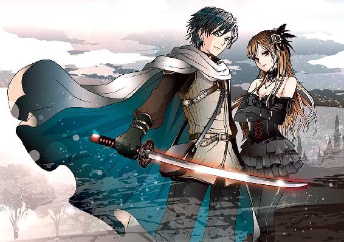
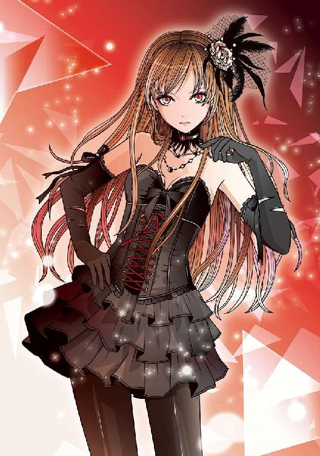
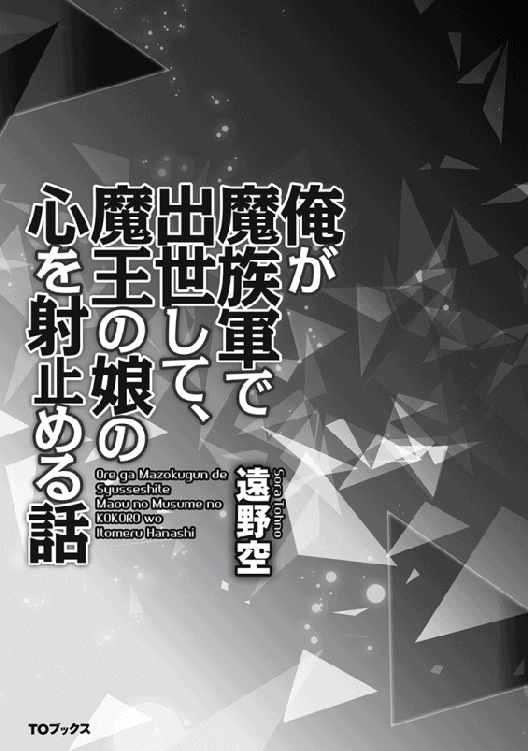
Illustrated by Eri Kamijo
Designed by ansyyqdesign(yoko)
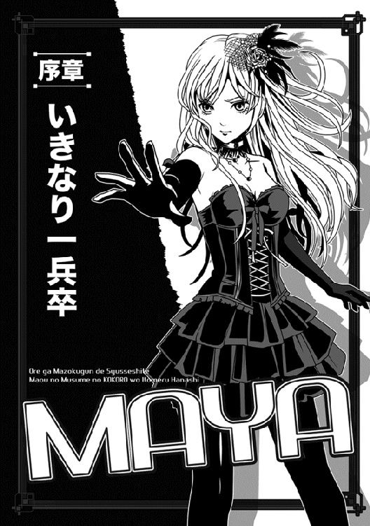
「わっ、ひでー雑魚を召喚しちまったぞ！」
額にツノがある鬼みたいな顔の男が、いきなり言った。
俺は返事する余裕すらなく、そいつの顔をまじまじと見つめている。
なにせ、トランクスみたいな黒いパンツにあとは薄青い肌という、人外要素満載の奴なのだ......口を利く余裕なんざない。
そんなのが二人もいて、俺にはどちらも同じ顔に見えた。目は真っ黄色な巨眼で、口は耳近くまで裂けていて、額にツノ......あり得ん。
つか、俺はついさっきまで、いつもの下校ルートをてれてれと歩いていたはずなんだが。
周囲を見ても、硬い石の床と四方を壁に囲まれた狭い部屋......というくらいしかわからない。これは夢か、夢なのか？
「まあ、しょうがないさ。そういう時もある。この召喚術は、正味、当たり外れが激しいからなぁ」
鬼その１（適当に命名）がため息と共に言って、俺は初めて、自分が禍々しい色をした円模様の真ん中に尻餅をついていることに気付いた。
なんか、妙な言語がびっしり書かれた赤い円形の模様で、魔法陣にしか見えない。
い、いつの間にこんなトコに！
人がようやくびびってきて脂汗かいてるのに、鬼その２がまたぶつぶつ吐かす。
「しかしおまえ......それでも限度ってもんがあるだろうよ？ 仮にもマヤ様の直属軍になろうかって軍勢の兵士だぞ」
「いいから、とりあえずステータスを見ようぜ。アレを填めろよ」
「まあ......そうだな。数字くらいは見てやるか」
言うなり、鬼その１は俺のそばに近付き、手に持ってた銀色のブレスレットみたいなのを突き出した。
「これを腕に填めろ」
「......え？」
まだ事態についていけない俺は、阿呆のように訊き返す。
「俺のセリフは、ちゃんと魔法でぴったりの現地語に翻訳されてるはずだぞ......聞こえなかったのか、小僧？ おまえ、食われたいんか、あっ!!」
ちょっと訊き返しただけなのに、さっそくドスの利いた声音で脅され、俺はさらにびびった。自慢じゃないが、この俺──松浦直也は単なる中二のガキにすぎないわけで......しかも教室内でも孤立してるボッチな男なのだ。
文字通りの鬼（みたいな化け物）を前に、逆らう度胸なんざない。
「は、はいっ。ただちに！」
即答して、そのブレスレットを受けとったさ。
この時点ではまだ、「なんかどっきり系の番組じゃないのか、くそっ」という気がしてるけど、万一、本当に妙な世界に飛ばされてて、いきなり食われたらシャレにならんし。
受け取ったブレスレットは一箇所が外れるようになっていて、腕に填めて装着するタイプらしかった。
で、すぐにそうしたんだが......この謎のブレスレット、どうやら鬼その１とその２も同じのを填めてるみたいだ。
しかも気味の悪いことに、俺がパチンと腕に装着した途端、金属のくせにキュッと締まって、腕をぴっちりと締め付けやがった
「わ、わわっ」
「はいはい、その反応は飽きた」
鬼その１が傲然と吐かす。
「心配すんな、そりゃおめーのステータスを見るアイテムだ」
「す、ステータス？」
訊き返しても返事はなく、鬼は逆に命令しやがった。
「ステータス表示、と声に出せ」
「す、ステータス表示？」
これも問い返しなのに、なぜか二人は即、俺の頭上辺りを見て、顔をしかめた。
「わっ......見たか、このゴミ！」
鬼その１が素っ頓狂な声を上げる。
「レベル２のＨＰが１５０だってよ。こんなのどうにもなんねーよ。俺が殴ったら、一発で死んじまうだろうが。姫様の肉の盾にもならんぜ!?」
「うわぁ、ホントだな」
鬼その２が悲壮な顔で首を振った。
「こりゃ慈悲深い俺も庇い切れんわ......なんでこんなよえーんだ、こいつ。どういう生活してたら、こんなゴミが生まれるんかね？」
「だよなぁ......肉の盾にするにしたって、もう少し耐久性がなきゃなー」
二人共、俺の頭上を見ては馬鹿にしたように言う。
つか、肉の盾ってなんだ、肉の盾って！ 俺は猛烈に訊きたかったが、嫌な返事が予想されるので控えた。それより、こいつらは何を見て勝手なこと吐かしてんだ。
ひょっとして......俺の頭上に電光表示みたいなのが見えてんのか？
そう思い、俺は慌てて自分の頭を手で触りまくった。失礼なことに、それを見て二匹の鬼共はまた同時にせせら笑うのだ。
「またその反応だよ」
「まあ、大勢繰り返してると、先の反応が読めるわな」
鬼その２は鼻で笑うと、俺に教えてくれた。
「おい、ガキ。もう消えてるから、頭なんか触っても無駄だ。多分、予想はついたかもしれんが、おまえの頭上にＨＰとＭＰとレベル表示がされてたんだよ。まあ、投影は五秒で消えるけどな」
「結論的に、てめーは見かけ通りのゴミだとわかった」
鬼その１の言葉に、俺は「それってＲＰＧのレベル表示みたいなアレか？」と考えていたのに、すぐに鬼その１が無慈悲な言葉を投げてくる。
どうでもいいが、黄色い目がやたらと冷たくなっていた。
「なあ、相棒。こいつは失敗だ。代わりに他のを召喚することにして、このガキは食っちまおうや。こんなんで姫様の兵士にはなれん」
「......だよなぁ」
ちょっ、ちょっと待って、待ってくれ！
食うって......まさか、人間がフライドポテト食うみたいな意味の、そういう「食う」じゃないだろうなっ。
俺は震撼したが、冗談ごとではないようだった。
なぜなら、二匹の鬼はさっきのセリフを最後に、一斉に裂けた口元から涎を垂らしはじめたからだ。
う、うわああああ......生命の危機か、おいっ。
これはもう、土下座でもなんでもして命乞いするべきか──と屈辱的なことを考えたその時、唯一の戸口から、慌ただしいノックの音がした。
いや、ノックというかダンダンッとドアを殴りつけるような音が。
「これから食事だ、遠慮しろっ」
鬼その１が、「ちっ」という顔で怒鳴ると、すかさずドアの向こうから返事が来た。
「馬鹿、それどころじゃないっ。ダークプリンセスが、マヤ様が突然の視察に来られたぞおっ」
この言葉を聞いた時の、人外二人の慌てふためきようときたら！
「な、なんだとぉおおお！」
「なんで、魔王陛下のご息女が、こんな地下の奴隷街にっ」
二人してあたふたと喚いたが、その間にも外ではがなり立てる声がする。
「おいっ、聞こえてるか!? マヤ様はつい今し方、抜き打ちで来られて、もうすぐこちらへいらっしゃる。召喚している場所を見たいとの仰せだ」
「そ、それなら他にもたくさんあるだろっ」
鬼その２が恨めしげに述べたが、向こうはいよいよ激しく怒鳴った。
「もう遅い。言ったろ、抜き打ちだって！ すぐにこちらへ──うわ、もういらっしゃったっ」
ドアの向こうでは、焦った声を最後に、いきなりぶっつりとセリフが切れた。後は、ドスドスという足音が遠ざかるのみ。
二匹の鬼は、見事に引きつった顔を見合わせた。
「俺、遠くからご尊顔を拝んだことがあるだけだ」
「お、俺なんかまだ見たことすらねー。しかし、きっついお方だと聞く......粗相があったら、二人共殺されるぞ」
鬼その２の言い草に、他人事のように聞いてた俺はびびりまくった。
こんな......見るからにごつい鬼に恐れられる魔王の娘って、どんな化け物だおい......女性とはいえ、あんまり見たくないぞ。どうせ、「鬼その３」みたいな女だろうし。
そう思った瞬間、間が悪いことにノックの音がした。
ただし、最初より遥かに小さな音で。
それでも、二匹の鬼がドン引きの顔でドアを見つめたのは、無理もあるまい。
「ど、どなた......ですか？」
鬼その２の震え声に、ひんやりとした声が応えた。
「マヤです。すぐに開けなさい」
「うわっ。た、ただいま、ただちにっ」
鬼その１は、妙な言い方をして、文字通り飛び上がった。
大慌てで走り寄り、ごついドアを開ける。
その間、既に鬼その２は部屋の隅で石床に跪き、頭を垂れている。加えて、ドアを開けた鬼その１も、外を見ないままお辞儀した状態で後ずさりし、相棒の横で同じく跪いた。
跪いたといっても、両膝と両手を揃えて石床につき、さらに額を石床にこすりつけるような、独特の姿勢である。なんか......見た感じすげーかっこわるい。
土下座した姿勢で、思いっきり尻を上げているような感じだ。女の子ならともかく、ごつい鬼がこんな姿勢とっても、少しも嬉しくない。
つか、なんでこんな恐ろしげな鬼共が、恭しく迎えてるんだ。
と思ったら、その二匹がかっこわるい姿勢を崩さないまま、こっちを睨んできた。
「おいっ。跪け、雑魚餌！」
誰が雑魚餌だよ！
むっとしたものの、相手が魔王の娘（魔王とかマジかっ）というなら、そりゃ尻餅ついてるみたいな姿勢で迎えるのもまずいだろう。
そう思い、俺は慌ててその場で片膝をついた。
鬼の真似して両膝つくのは、あまりにもかっこわるいだろうと。
「ば、馬鹿っ。ちゃんとお迎えする姿勢を──」
鬼その１の声が途中で消えた。
......外から、誰かが入ってきた途端、それこそぶっつりと途切れた。
どんな化け物だと思って俺はこっそり上目遣いに見たが......今度は別の意味でびびった。
なんと、これまで見たことないほど可愛い女の子だったからだ。
着ている服は、光沢のある漆黒のコルセットドレスで、スカートはフリル状の短いヤツだった。むちゃくちゃ形のいい足には、黒いストッキングを穿いている。
（光沢からしてパンティーストッキングにしか見えないが、この世界にもあるのか）
全体的に、「色気を重視したゴスロリルック」と言えばわかりやすいかもしれない。
こんなドレスはよほどスタイルがよくないと着られないと思うが、この少女には恐ろしいほど似合っていた。
口を半開きにしてさらに視線を上げると、ストレートロングの金髪姿の、可憐な少女と目が合った。瞳は薄赤い色で、やや吊り目がち......むちゃくちゃ美人だけど、確かに性格はキツそうだ。
しかし......化け物には全然見えない。ああ、見えるものか！
予想に反したことはまだあって、どうやらこの子、俺の同年代みたいなのだな。コルセットドレスが強調する胸もそこそこあるんだが、やはり年相応なのだ。
これで二十代とかのはずはない。
一人で納得していたら、その子が言った......ブリザードみたいに冷えた声で。
「変わった挨拶の仕方ですね。マヤは初めて見ました」
「えっ」
俺がまた阿呆のように訊き返すと、マヤは黙って俺の足下を指差した。どうも、片膝ついた姿勢を指した発言らしい。
「あ、すいません......その、ここに慣れてないので、思わずこんなやり方を。ええと、その二人を手本にやり直します」
もそもそと姿勢を変えようとすると、マヤが首を振った。
「よい。......そちらの方がマヤには美しく見えます」
「あ、ありがとうございます」
わあ、気が合うじゃないかとばかりに俺が笑うと、マヤは釣られたように微笑んでくれた。これがまた、氷の彫像が微笑したような、冷たい中にも気品がちらつく表情で、俺はぼおっと見とれてしまった。
しかし、何がまずかったのか、隅っこで土下座していた鬼共がやかましく騒ぎ立てた。
「おいっ、奴隷の分際で姫様を直接見るとは、どういう了見だっ」
「目を逸らせっ。不敬罪に当たるんだぞお！」
「りょ、了解！」
そういうのは先に言えよっ、と俺は焦って言われた通りにしようとした──が。
そこでマヤの表情が一変した。
それまでは、冷たい中にもどこか俺を思いやる様子が窺えたのに、突然、瞳の薄赤い色が真っ赤に変化したかと思うと、素早く鬼共を振り返ったのだ。
「無礼者っ」
斬り裂くような叱声が迸った。
「誰が、口を利いてよいと許可した！」
言下に、左手を上げて鬼の方に向けた。
途端に、二匹の鬼の巨体があっさり持ち上がり、気安く壁際に放り投げられた。もちろん、誰も直接には触ってないにもかかわらず、だ。
野太い悲鳴が上がり、ごっつい鬼共が為す術もなく、壁に叩き付けられてしまう。
「がふっ」
「うごおっ」
二人してキテレツな声を上げ、そのままびたんと石床に潰えた。
うわ、泡噴いてるぞ......こいつらタフそうなのに。
俺が石みたいに固まっていると、問題の姫様ことマヤは、「マヤを怒らせるからです」としれっと述べた。
この子、見た目よりヤバいっ。あと、気が短かすぎ！
おまけに、外からドカドカと足音が接近してきて、武装した女性兵士みたいなのが、大勢飛んで来た。ざっと見ても十名近くはいただろう。
「マヤ様、何事ですか!?」
「ご無事でっ」
「......別に」
マヤは、今度は冷静に答える。
「この者共に礼儀を教えただけ。いいから下がりなさい」
途端に、レザーアーマーみたいなのを着込んだ女性達（美人ばかり！）は、頭を垂れて恭しく下がっていった。誰も疑問一つ述べなかった。
おそらく、マヤのやり方に慣れているのだろう。
彼女達が素早く下がってから、マヤは改めて俺を見た。真紅に染まっていた瞳は徐々に元の薄赤い色に戻りつつある。
どうやら、気分が平静な時はこういう色らしい。
悠然と歩いてまた前に立った彼女を、俺は少なからず緊張して見上げた。
どういうことで怒り出すか見当がつかない以上、緊張せざるを得ない。というか、俺は本当に異世界に飛ばされちまったのか......しかも、魔王やら魔王の娘やらがいる、こんな世界に。
「マヤがこわい？」
考えていたら、いきなり尋ねられ、俺は考えた末に微かに頷いた。
嘘ついてもしょうがない。
「恐怖は感じますが、ただそれだけではないです」
「ほう？」
マヤは関心を持ったのか、可愛らしく小首を傾げた。
「他には、何を感じる？」
「貴女は......いえ、マヤ様は綺麗な方だと思いました」
思わず素の感想を洩らしてしまい、俺は臍をかんだ。魔王の娘に「あんた美少女や！」とか言っちゃう俺、だいぶネジが緩んでる気がする。
それもこれも、気が動転しているせいだが。
だがしかし......怒鳴られるかと思いきや、マヤはびっくりしたように瞳を見開いたかと思うと、次の瞬間、微かに笑った。本当に笑ったのだ。
そうやってちゃんと笑うと、実はこの子、だいぶ幼い少女かもしれないと思った。大人っぽいせいで同年代くらいに見えたが、本当はもう少し年下かも。
「マヤは、正直にものを言う男は嫌いじゃない......もちろん、相手によるが」
「は、はい......すいません」
「あやまることはない」
なぜかマヤは、そっと腰を屈めて俺と視線を合わせた。
日本じゃ絶対見られない、薄赤い瞳が、こっちの心の底まで貫き通すように見つめてくる。なにやらよい香りまで漂ってきて、俺はだいぶ頭がくらくらした。
「おまえの名前は？」
「ま、松浦直也──です」
「ではナオヤ......マヤは以前より、何度かおまえの夢を見た。全て同じ夢で、ここでおまえと会う予知夢だ。こうして実際に会い、その意味がやっとわかった。ナオヤ......おまえには巨大な才能がある」
「ええっ!?」
我ながら疑り深い声が出てひやっとしたが、これにもマヤは怒らなかった。ただ、余裕の笑みを広げただけだ。
「今はわからずともいい。しかし、覚えておきなさい......このマヤが、おまえに期待しているという事実を」
「は、はあ」
いや、なんかもう俺がこの子の部下になるというのは規定の事実のようになりかけてる気がするが......俺の意思は無視なのか。
「マヤのために戦うのは......いやか？」
ふいに訊かれ、俺はぎくっとした。
目を上げれば、いつの間にか、鼻と鼻がくっつきそうな近くに彼女の顔があった。嘘みたいに真っ白な肌で、しかも綺麗な瞳をした子だった。
実際、香しい呼気まで頬にかかっている。
それに......今はさっきほど冷たい視線には見えない。
むしろ悩ましげな目つきに見える。俺の返事を恐れてるような？ ま、まさかな。
「ナオヤにも思うところはあるだろうが、もはやおまえを元の世界に戻すことはできない。これは一方的な召喚術にすぎぬからな。それに、おまえがここに来たのは偶然ではない、必然なのだ」
「......どういう意味でしょう」
俺が尋ねると、マヤはあっさりと種明かしをしてくれた。
「この魔法陣は、元の世界に不満を持つ者を呼び寄せる。召喚に応じ、今ここにいるということは、ナオヤは元の世界に嫌気が差していたということだ。だからこそ、ここにいる......運命に導かれ、ナオヤを必要とするマヤの前に」
うわっ。その説明って、なんか力業で自分の責任を豪快に投げた気が。
......しかし、運命に導かれってのは、なんかいいな。万事に緩い俺は、不覚にもそう思った。運命に導かれてってトコが特にいい。
マヤがさらに言う。
「だからおまえは選ぶしかない......生か死か、言い換えれば普通人か戦士か、どちらかの道を」
「ええと」
展開早すぎだろっと思うが、さすがにそれを指摘するのはためらいがあった。
俺も鬼みたいに叩き付けられたらシャレにならない。
「秘密を守れるか、ナオヤ」
またいきなり訊かれた。
この子は何事も果断速攻である。弛緩することが全くない。
「守れます」
さすがに、それくらいなら即答できる。こう見えても、自分では義理堅い方だと思ってるんだ。
俺の返事を聞くと、マヤは高級なペルシャ猫みたいな豪勢な微笑を浮かべ、頷いた。
「では打ち明けよう。マヤは将来、父を助けて外敵と戦わねばならない。この召喚はそのための準備でもあるが、将来的にはさらに精鋭を選んで親衛隊を作りたいのだ。そして、密かにそう決めてから初めて、その時に迎えたい相手を一人見つけた。マヤの言いたいことがわかるか？」
悪戯っぽい笑みで見られ、俺はにわかに焦った。
魔王の娘の配下で、しかも親衛隊？ こ、この俺が？
「マヤは人を見る目には自信がある。だからこそ、おまえには期待している、ナオヤ。ぜひ最初の地獄をくぐりぬけ、一人前の戦士となってわたしの元へこい」
斬り裂くような声と共に、マヤはまた背筋を伸ばして立つ。
豪奢な金髪を背中に払った後、手を伸ばして俺の頬に触れた......これがまた、嘘みたいに柔らかな手で、とてもついさっき、二匹の鬼をとっちめた同一人物だとは思えなかった。
まだ全然混乱状態だったし、そもそもこの子は俺がこっちへ飛ばされた元凶らしいのだが......それでも俺はこの時、「ああ、この子のために戦うのもアリかもしれないな」などと考えていた。
無論、一時の気の迷いだ。
とりあえず鬼に食われるのが嫌だから、そう思っておくだけだ......多分。
しかし、彼女は大胆にもまた身を屈め、俺の頬に今度は自分の頬を寄せた......まるで恋人同士のように、ぴったりと頬と頬をくっつけたのだ。
「え、ええと」
「期待している、ナオヤ」
マヤが少女にしては低い声で囁きかけた。
「おまえが最初の地獄を生き抜くことを......そして、戦士となってマヤと再会することを期待している。今日からおまえは生まれ変わるのだ、マツウラ・ナオヤ」
さ、最初の地獄ってなんだよ。
呆れるほど現実味のないセリフなのに、マヤはどこまでも真剣な口調だった。
クラス内でボッチで、しかも万年帰宅組の俺が、戦士だとー!?
夢じゃないだろうな、えっ。
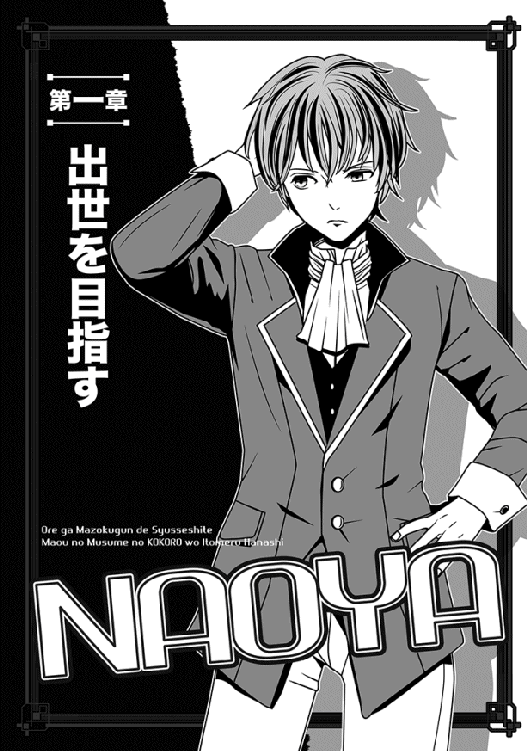
──この魔界というか、魔族の住む世界に飛ばされてから、ほぼ一年が経った。
ちなみに、初対面のアレから、マヤ様とは一度も会ってない。
所詮、遠い世界の人だ。親衛隊構想なんて、俺には縁がなかったんだな。
それも含め、話が違うよっと思ったことはたくさんあるが、そのうちの一つは、この世界（今俺がいるのは、クレアル大陸という場所らしい）では、十年前から魔族と人間が何度目かの大規模な戦いを繰り広げていて、しかも魔族側はめちゃくちゃ押し込まれているらしいのだな。
かつては大陸のほぼ全てを支配していたのに、今は実効支配しているのは、全大陸の半分以下に過ぎないとか......つまり、もはや魔族の方が不利なわけだ。
そして召喚された俺のような奴らは、全員が雑兵として戦闘に参加させられ、奇しくも初対面の時に鬼共が言ったように、正規軍の「肉の盾」みたいな扱いをされている。
要は、前線に追いやられてまず敵にぶつける、捨て駒である。
いや、所属する部隊によっては普通に正規軍として扱われるらしいが、俺の部隊の将軍はかなりひでー奴で、召喚した異世界人なんかゴミ扱いなのである。
この一年、よくぞ死ななかったと、自分を褒めてやりたいね！
......まあ、そのお陰で、俺の代わりに敵兵が大勢死んでるわけだが。最初は「戦争とはいえ、これって殺人行為だよなっ」とかブルってたが、今やすっかり慣れちまった。
殺し合いに慣れるなんて、褒められたもんじゃないよな......でも、そうしないと俺、死んじまうからなぁ。
俺が殺した奴ら、迷わず成仏してくれ......ナマンダブ。
ちなみに、この魔族軍の階級ときたら、恐ろしく細分化されていて、奴隷の中にも階級があるし、一人前の兵士になっても、さらに上もうんざりするほどある。
俺の立場は奴隷だが──。
奴隷長←奴隷頭←奴隷←盾......とあるうちの、今は奴隷長である。要は、盾から一年でそこまで上がったわけだ......全然嬉しくないが。
そもそも、最後の「盾」ってなんだ、「盾」って。
いや、意味はそのまんま、最初に敵にぶつける兵士ってことだが、あんまりじゃないのか。
......というわけで、俺は立場が上がっても、自分より下の奴隷達の扱いには大いに気を付けている。人間、相手のことを考えなくなったら終わりだよ......クラスでボッチだった俺が言うことじゃないけど。
まあ、相変わらず奴隷には違いないし、立場が少し上がっても、偉そうにできるわけないってのもあるけどさ。
今寝てる部屋だって、二段ベッドが三つも並んだ、タコ部屋みたいなトコだぜぇ？
それもきっちり六人押し込められてて、たまらんよな、ホント。
......おまけに、俺以外の奴は全員が人外で、ＲＰＧでいえばモンスターみたいな奴ばかりなんである。さすがは魔界！
もう慣れちまったけど、昔の俺ならモンスターと一緒に雑魚寝してるこの光景を見ただけで、間違いなくパンツを濡らしてたね。
それを思えば、俺もたくましくなった......実はかなり順応性あるよな、俺。
などと、狭いベッドで考えていたら、いきなり横にでっかい顔が現れた。
「あ、あにぎぃ」
「おわあっ」
俺は思わず、ベッドの上で飛び上がった。
これが下の段じゃなくてよかった。さもなきゃ、天井に頭ぶつけてた。
「いきなりはやめろって！ 心臓に悪いだろっ」
俺はガミガミと文句を付けてやる。
こいつはボンゴっていう巨体のモンスター（本人は獣人族と称している）だが、見かけはスターウォーズのチューバッカをさらにデカくして、毛並みを灰色にした感じなのだな。
パンツだけは穿いてるけど、他は全裸である......まあ、全裸っつっても、毛むくじゃらで問題ないんだろうけど。あと、ご面相もチューバッカどころじゃない強面なので、正直、いきなり出てきたら寿命が縮む。
......余談だが、（休日なのでまだ寝てるが）この部屋にいるあとの四人もボンゴと同じ種族なんである。
可愛い女の子っつーか、せめて人間はよっ。
「え、えへへ......ごめんよ、あにぎぃ。でもほら、今日はいい食い物が手に入ったから、あにぎの朝食にどうかなって。ほら、今日は戦闘もないって話だし」
いやおまえ、そろそろ「あにぎ」じゃなくて「兄貴」と呼べや......と思ったけど、ブルドッグが満面の笑みを浮かべたようなボンゴの顔を見て、苦情は控えた。
見かけはともかく、気のいい奴なのだ。少なくとも、俺を慕ってくれるのは間違いない......ここでは有り難いことである。
加えて今日は、なんとでっかい葉っぱにおにぎりをのせて差し出して来た。
「おぉー......これ、おにぎりじゃん？ こんなのどこで手に入った？ この世界に米なんてあったのかよ」
「あ、あるよぅ。なんか、エルフ達が木の実とか果物以外に、米食ってるそうなんだ。そんで、最近はエルフの奴隷も増えてさー」
「へぇええええ......俺、エルフの女の子とオトモダチになりたいかもな」
心からの要望と共に、おにぎりを受け取る。トレーニングがまだだが......まあ、食べてからでもよかろう。なにせ、久しぶりの米だ。これが我慢できるか。
即かぶりつこうとしたが、その前に半分割って、ボンゴに渡してやった。
「ほら、おまえも食え。どうせいつも腹減ってんだろ」
「おぉお、ありがと、ありがと！」
ボンゴがまた、顔をくしゃくしゃにして笑う。
顔はモンスターでも、笑顔は悪くないな、こいつ......まあ、慣れたせいもあるけどな。
で、二人して笑顔でおにぎりにかぶりつこうとした時、いきなりタコ部屋のドアが開いた。
「わっ」
入ってきたのは俺達奴隷を監督する二等戦士だった。
俺は慌てておにぎりをボンゴに押しつけ、自分はベッドの上から飛び降りて相手を迎えた。
「な、何かご用ですか」
一応、上手くやってる方だと思うが、奴隷は監督する二等戦士の気分次第で、いつ何時、上官に「あいつは怠慢だ」とか報告されないとも限らない。
機嫌を損ねるとヤバいのだ。
相手は、二等戦士にしては奇蹟的によい人の範疇に入るんだが、今日はまた、まじまじと目を見開いて、俺を見ていた。
たとえて言えば、特攻前の兵士を見るような目だ。
「おまえ......なにやらかしたんだ？」
「は？」
俺が訊き返すと、相手は眉根を寄せて説明してくれた。
「ダークプリンセスが......マヤ様がおまえを呼んでる。えっ、どんな無礼を働いた？ あの人が誰かを呼ぶ時って、大抵は厳罰で殺される時なんだぞ」
「い、いやぁ。特に覚えは」
脅されて大いにびびったが、本気で覚えがない。
前に会ってからもう一年......その間は、戦いに明け暮れる日々だったし、機嫌損ねる暇すらあるかって！
○────○
それでも、もちろん俺みたいな下っ端が、ダークプリンセスことマヤ様の呼び出しをスルーするなんて不可能なわけで。
やむなく、直属の監督官に当たる、件の二等戦士に連れられ、地上の王宮まで、機械式エレベーターを上がっていった。
（魔王とダークプリンセスが住む王宮は地上にあるが、俺達下っ端は、そのずーーっと地下に住んでいるのだ）
呼ばれたのは何とマヤ様の私室であり、俺を引率する二等戦士までびびっていた。
「ヤバいな、俺もここまで上がったのは初めてだ。おまえ、本当になにやったんだ？」
「いや、マジでなんも知りませんって。覚えがないですよ」
「ならいいが......とにかく、お叱りごとだったら、素直に謝るんだぞ。もう這いつくばって額を擦りつけて謝罪しろ」
「はあ」
思わずテンションの低い返事になったが、無理もなかろう。
真面目な話、全く身に覚えがないんだから。
......混乱しているうちに、二等戦士は私室付近を警護する衛兵に俺を引き渡し、最後に俺の耳元で囁いた。
「いかに用事があろうと、俺が行けるのはここまでだ。何事もないことを祈るが......達者でな、ナオヤ」
悲壮な顔つきで肩を叩かれた。
ていうか、その言い方やめて。
そして、後を引き継いだごつい衛兵の背中を追い、俺はさらに廊下を先に進む。大理石張りの廊下の突き当たりに補強の入った巨大な扉があり、そこで衛兵はとまった。
そこにも別な衛兵がいて、またそこで煩雑なやりとりがあったが......それが済むと、ようやくマヤ様の私室に入れてもらえた。
......それにしても、今や俺も、心の中ですら「マヤ様」と様付けで呼んでるなぁ。
すっかり魔界の空気に馴染んじまってー。
部屋に入るなり跪いたが、すぐ先にマヤ様が見えた。
どうやらここは、彼女の執務室みたいな部屋らしく、体格に釣り合わない巨大な机と、それに数名ほどの侍女達がいた。
マヤ様自身は奥の壁にある大きな窓から外を眺めていたが、ドアが閉まると同時に振り返り、微笑してくれた。
いやぁ......一年ぶりのせいか、少し成長されたように見える......色んな意味で。
例によって漆黒のゴスロリ風衣装だったが、今回はさらに色っぽい。なにしろ、肩と胸元がだいぶ露わになっている。
そもそも今の俺は、マヤ様の実年齢が十三歳だともう知ってるわけだが、こうして見ると十五歳の俺と比べても、全然向こうの方が年上に見える。多分、背負っているものの違いだろう。
「来たな」
マヤは満足そうに頷くと、手を叩いた。
「皆の者、下がれ。マヤはナオヤと少し話がある」
いえ、それは──などと異論を唱える奴は、相変わらず皆無だった。
侍女も衛兵も、俺とマヤ様を置いてたちどころに姿を消した。
きっちり全員がいなくなるまで、マヤ様は腕組みなどして静かにまっていた。そして全員が消えた瞬間、じんわりと笑みを浮かべて俺を見た。
「......その拝礼（跪く姿勢か？）は、やはり今までのより断然いい。いつかマヤの御代が来た時には、ぜひ採用しよう」
そう述べた後、手招きした。
「跪くのはいいから、マヤのそばへ」
立ち上がり、言われた通りにそばへ寄った。......窓を背に立つ彼女の前に立つ。
「一年間、よく生き残った。やはりマヤの目に狂いはなかったな」
「確かに多少は戦慣れしたけど、さほどのものでは」
謙遜ではなく、一〇〇パーセントの本音で述べたが、マヤ様は首を振った。
「ステータス前面表示と、声に出してみるがいい。それで、おまえも自分のステータスを見られる」
「あっ」
もちろん俺は、ステータスを表示する怪しいブレスレットのことを忘れてはいない。しかし、この一年というもの、戦いばかりでそんなのに関心持ってる余裕はなかった。ほとんど、食べるか寝るか戦うかの日々だったわけで。
しかし彼女に言われ、俺はおおよそ一年ぶりに声に出した。
「ステータス......ええと、前面表示？」
途端に、眼前に青い電光表示みたいなのが浮かんだ。
その数字が示す値は、以下のごとく。
「ＨＰ１５６０に、ＭＰ８００──レベル12ぃい？ マジで!?」
「そう、おまえの言い方を借りるなら、マジだ」
悪戯っぽい笑みでマヤが頷く。
以前にも見た、豪勢なペルシャ猫みたいに微笑し、俺の目を見ていた。
「ナオヤの最初のステータスは聞いている。正直、最下層の戦士にもなれない数字だったな。だが、今は見よ！」
マヤ様は顎を上げて赤い瞳を輝かせる。
「おまえは、たった一年でそこまで強くなった。言っておくが、普通は一年で上がるような数字ではないぞ」
目を白黒させている俺を尻目に、マヤ様は規定の事実のように続けた。
「これでおまえを奴隷の身分から引き揚げることができる。......ようやく、最初の一歩だな」
今ひとつ意味がわからず、俺が首を傾げると、マヤ様は何も言わず、いきなり俺の上半身に手を伸ばした。
ちなみに俺は今、ここへ来た時に着ていた学生服ではなく、他の奴隷と似たような灰色の貫頭衣（頭からすっぽり被る胴衣みたいなの）を着込んでいる。
その左胸に手を当て、小さく呪文みたいなのを唱えた。
途端に、左手首の辺りが一瞬だけ燃えるように熱くなり、俺は飛び上がりそうになった。
「つっ。なんです!?」
「案ずるな。おまえの身分を証明しただけだ」
「えっ」
マヤ様の視線を追って、俺は自分の左腕を眺めた。
そこには、あのクソ忌々しい鬼に填められた銀色のブレスレットがあったはずだが、それがなぜか赤い色に変色していた。
無言の疑問に、マヤ様があっさりと教えてくれた。
「所属によってブレスレットの色が変わるのだ、ナオヤ。銀色は共通して魔族軍の一般奴隷の証だが、赤色はこのマヤ直属の家臣ということだ。......階級はさすがに、今は上等戦士にしてやるのがせいぜいだが、所属が変わるだけでもかなり違うはずだぞ」
その説明を聞いて、俺はだいぶ驚いたね。
上等戦士というのは、奴隷長の今より二つ上の階級で、つまりは俺の直属の監督官に当たる二等戦士より上なのである。
もはや奴隷じゃないってだけでも万々歳なのに、いきなりすげー出世──のように思えた。
いや、上を見りゃまだまだ全然下っ端だが、それでもこれは驚異的な出世のような。
「......不服かもしれぬが、さすがに今はそれがせいぜいだ」
得も言われぬよい香りが漂い、俺はいつの間にかマヤ様に至近で見つめられていることに気付いた。
「ま、まさか！ 厚遇に驚いているところです」
「驚くな、その程度で」
マヤ様はどっちかという素っ気なく言ってのけた。
胸の下で腕を組み、厳しい目つきで告げる。
「どうせなら、いつか魔界を──いや、全世界を支配する、このマヤの右腕になることを考えるがよい。マヤは、覇気のない男は嫌いだ」
「はっ」
ぐさっと胸に刺さる思いで、俺は軽く低頭する。
まあその通りだろうけど、俺にも言いたいことは多い。そのせいか、とっさに口にしてしまった......言わずにおこうと思ったのに。
「一つ質問していいですか」
「なんだ」
「俺と同じように、召喚されてここへ来た奴も多いと思いますが、そいつらはどうなりました？」
「生き残った者は少ない」
マヤ様の返事は端的だった。
「百人のうち、一人残ればいいところだろうな。実際は、もっと少ないかもしれぬ」
「そう......ですか」
普段からほとんど似た境遇（つまり異世界人）の奴を見かけないし、そうだろうなとは思ったが、改めて聞くとがっくりするな。
心中では既に警告ランプが点っていたが、勢いに任せて俺は言った......言わずにはいられなかった。
「お願いがあります」
「聞こうではないか」
「......俺はまあ、この世界に馴染んできたし、こうして戦うことに後悔もないんですが......大抵の奴は、俺ほど順応できないはずなんです。今すぐとは言いませんが、将来的には、あの身も蓋もない無理矢理召喚をやめてもらえませんか」
ぶちまけた瞬間、俺は内心で大いにブルった。
なぜなら、黙って聞いていたマヤ様の薄赤い瞳に、雷光にも似た怒りが走るのがわかったからだ。密かに思っていたけど、やはりこの人は、他人に忠告されることに慣れていないようだ。
こ、これは殺されるっ。いや、殺されないまでも、一年前の鬼共みたいに壁に叩き付けられる──と身構えかけたのだが。
しばらく押し黙った後、マヤ様は大きく深呼吸などした。
そしてまた俺を見た時には、既に怒りの表情は消えていた。
「道理の通った臣下の諫言は、腹が立っても耳を傾けるべし──昔聞いた父の言葉だが、なるほど、諫言とは腹が立つものだな」
ち、父って魔王陛下のことだよな？ 魔王様の割に、なんと話のわかる人だ。俺みたいな下っ端だと、見かけたことすらないけど。
「ちなみに、この召喚自体は父が始めたことだが、ナオヤの進言にも聞くべき点はある。確かに、戦う覚悟のない者を無理に戦場へ放り込んでも、結果は見えているようだ。生存率がそれを証明している」
マヤ様は冷静に語り、一つ頷いた。
「よし、ではこうしよう。近々、父におまえの意見をこのマヤの意見として進言しておく。父は話のわかる方故、意見を聞いてくれるかもしれない。......今のマヤには、ここまでが精一杯だな。これでいいか？」
「十分です......身分を引き揚げてくれたばかりか、俺の意見を聞き入れて下さり、どうもありがとうございます」
心からの感謝と共に、俺は丁寧に一礼した。
顔を上げた時、なぜかマヤ様は悪戯っぽく笑っていた。
「では、今度はマヤの番だな」
「......えっ」
「えっ、ではない。おまえに期待するが故に、その進言にもきちんと耳を傾けたのだ。当然おまえも、このマヤの臣下に相応しいところを見せねばならない。無能者の進言を聞く暇など、このマヤにはないのだぞ」
「えー、具体的にはどうせよと」
「......うふふふ」
艶然と微笑んだ後、マヤ様はくびれた腰に片手を当てて俺をとっくりと見た。
いや、それだけではなく、何と小さな手を伸ばして俺の頬をゆっくりと撫でた。まさに、姫君がペットの犬を愛でるような目つきに見えた。
「マヤに感謝せよ、ナオヤ。おまえのために、最初の任務を選んである。マヤの直臣に相応しい任務だぞ！ ぜひ期待に応え、華々しい武功を上げるがよい」
「え、ええと」
なぜかむちゃくちゃ嫌な予感がして、俺は脂汗をかいて突っ立っていた。
その後、少し打ち合わせをしてからマヤ様の私室を辞した俺は、その足で出荷所へ急いでいた。
出荷所というのは、ひどいことに、各所から入荷したばかりの奴隷を、それぞれの部隊へ供給する場所である。
身分のある者は戦闘力が高そうな奴が入荷（この言い方嫌だよな）した途端、ささっともらい受けていくし、あまり身分が高くない奴は、盾クラスの最下級の奴隷しか手に入らない。
俺はこの一年、使われる側の奴隷だったわけだが、今や奴隷を吟味して選ぶ側になっている......全然嬉しくないけど、かといって自分だけではどうにもならない。
今回、マヤ様から与えられた任務は、それほどヤバいものだったからだ。
戦力は絶対にいる。ああ、いるとも！
「ヤバいヤバい、これはヤバいっ」
地下の出荷所に着いてもまだ独白していたらしく、顔見知りの奴隷長であるヨルンが、不思議そうに俺を見た。
一応、人間型ではあるが、髪の毛も瞳も真っ黄色なんで、あんまり同族という気がしない。
「なにがヤバいんだ、ナオヤ」
手に持った鞭の握りを、掌にペシペシ叩き付けつつ、呆れ顔である。
ちょうど出荷場から出てきたばかりで、俺の求める場所はこいつの背後にある扉の向こうである。邪魔だよ！ 説明する時間が惜しいだろっ。
「つか、なんでおまえがこんな場所に来るんだ？ 奴隷長とはいえ、まだおまえは監督官に顎で使われる側だろ」
「ところがぎっちょん、マヤ様のお陰で、奴隷生活は終わったらしい」
俺は、水戸黄門の印籠よろしく、左腕に嵌まった真紅のブレスレットを見せてやった。
ヨルンは俺より奴隷期間が遥かに長いし、なんといってもいわゆる「（魔界の）地元出身」である。この方が話が早いんじゃないかと期待したわけだが、期待以上の反応があった。
近視の人みたいにしげしげとブレスレットに顔を近づけて見た途端、ヨルンは気色悪い声で叫びやがったのだ。
「ぎゃあああっ」
「わ、びっくりするだろ！」
つか、ぎゃあはないだろ、ぎゃあは。
「それどころじゃねえっ」
ヨルンは黄色い瞳をまん丸にして、盛大に唾を飛ばしやがった。
「わっ。汚い！」
「おまえ（無視）、い、いや......ナオヤ......これはどういうことだ......なんでいきなりナオヤがダークプリンセスの直臣になってんだよ」
「あー......やっぱ見たらわかるのか、これ」
「わからいでか！」
自分の銀色のブレスレットを恨めしげに掲げてから、ヨルンは鼻息を荒く即答する。
「おまえ、何年奴隷やってんだ！ 真紅のブレスレットがマヤ様の直臣の印ってのは、魔界じゃ誰でも知ってるぞ。おい、どうなってんのか説明しろ」
......俺は奴隷経験一年しかないっつーの。
それより、今は時間ないんだけどなぁ......と思ったが、よくよく考えたらこいつは、奴隷の元締めの一人である。まあ、元の世界でいえば、羊が奴隷として、羊飼いみたいなものってことだが、とにかく戦士に相応しい奴を紹介してもらうなら、こいつに頼るのが手っ取り早いかもしれない。
機嫌を損ねていいことはないんで、仕方なく説明してやった。
全部聞いた途端、ヨルンはむちゃくちゃ羨ましそうな顔で俺を見たが......そのうち、鞭を持ったまま、揉み手なんかしやがる。マジでそんなことする奴、初めて見たぞ。
「えっへっへ！ 俺達、親密な友達だったよなぁ、ナオヤ。いわゆる親友って奴？」
「......そんな親密な仲だったけか？」
思わず顔をしかめたが、まあこいつはよそ者の俺に対して、比較的優しかった方だろう。他の奴なんかもっとひでーのがゴロゴロいたからな。
あくまでも、「他と比べりゃ」というレベルだけど。
「もちろんさ、親友！」
人の気も知らず、ヨルンは力強く答える。
早くも親友確定である。
「で、おまえは情に厚いナイスガイ（は？）だし......当然、親友のためにちょびっとだけ力を貸してくれるよなぁ？ まあその、具体的には奴隷の立場から抜け出すためによぅううう」
「......俺、まだ上等戦士に上がったばかりなんだけど？ 顔見知りとはいえ、奴隷を引っ張り上げる権限なんか、あるかぁ？」
「あるさ！」
ヨルンは即答した。
「普通の上等戦士にはないが、ダークプリンセスの直臣になら余裕で可能だ。おまえ、自分で思ってるより偉くなってんだよ！」
「へぇえええええ」
言われて初めて、俺は真紅のブレスレットをとっくりと眺めた。
まあ、いくら眺めても単なる金属製の赤いブレスレットだけど。
「これ着けてるだけで、そんな権限がねぇ」
「おおよ。ダークプリンセスの直臣になれるなら、腕の二、三本は喜んで差し出す奴が、ゴロゴロしてっぞ」
「......腕は二本しかねーだろうが」
言い返したものの、汚い貫頭衣を着たヨルンは本気の表情だった。
「だから、とりあえず俺をおまえの臣下にしてくれ。ダークプリンセスの直臣が主なら、そりゃ破格ってもんだ」
驚いたことに、そこまで言ってのけた。本気らしい。
顔をしかめたが、ここは妥協しとくのが賢いだろう......ていうか、こいつまだ、俺が背負わされた超難儀な任務のことを知らんな？
世の中、そうそう甘い話ばかりじゃないっつーんだ。
しかし時間もないことだし、俺はそっちの説明は後にして、渋々申し出た。
「わかった。今回俺はマヤ様から任務を与えられてるが、おまえが戦力になりそうな奴隷を大勢紹介してくれるなら、望み通り奴隷の身分から引き上げて仲間にする。俺にできるなら、だけど」
「話は決まった！ 今日から俺は、おまえの臣下な......よろしく頼むぜぇ」
ヨルンは明るく答えた。
臣下という割に、態度がデカいだろうがよ。
というか、この表情を見る限り、本当に今の俺には、奴隷を戦士に引き上げるくらいの権力はあるらしい。なんか......夢みたいだな。
「で、俺がいいのを選んでやるが......好みはあるか？ 即任務に就くなら、やっぱ戦力重視かね？」
早速、訊いてきた元奴隷長に対し、俺は迷わず答えた。
「戦力は重視するが、野郎ばっか大量にいらん。当然、女の子も必要だ......あー、魔法使いとかのタイプがいいかな。す、少しは可愛い子がいいかも」
最後はさすがに小声になった。
「へっへっへ......おまえも好きだよなぁ？ まあ、そっち方面なら任せとけ」
悪代官に黄金入りの菓子折を贈る商人みたいに笑い、ヨルンは胸を叩いて見せた。
......正直、不安である。
とにかく、ヨルンの協力を取り付けた俺達は、扉から出荷場の中へ入った。
ここは元の世界で言えば、巨大な牛舎みたいなものである。見た感じは本当にそっくりで、ただ、牛の代わりに奴隷が繋がれているというのと──各奴隷達は木製の壁で仕切られていて、隣と会話したりはできないという、それだけだ。
あと、入ってるのは（人外もいるが）普通に人間型の奴隷ばかりである。
そんな仕切りが、見渡す限りずらっとあるので、ある意味では壮観だった。
牛舎というたとえがアレなら、巨大工場のラインがずらっと並んでいる感じ？ まあ、どちらにしても人道的じゃないけど。
そんな空間に俺達が入ると、そばの仕切りにいた奴隷達が一斉にこちらを見て、ちょっとびびった。みんな、目ばかりギラギラしてやがるからな。
それに、汗と排泄物の臭いも。ううっ。
当然、監督するヨルンみたいな奴隷長も他にたくさんいて、それぞれブロックごとに担当がある。
自分が面倒見てる（管理してる）ブロックまで行くと、ヨルンは早速言った。
「丁度、俺の担当ブロックに臨時の新規入荷があったんだが、人数はどれくらいいる？」
ヨルンの質問に、俺は即答した。
「マヤ様から、百名までは徴集していいって許可もらってるんだ。だから、まずは戦に堪えられる人材を八十ばかり、あと十名は魔法使いがいい。でもって最後の十名は、現役の二等戦士からスカウトする。まあ、奴隷上がりの俺のスカウトに応じてくれたらだけど」
一気に希望を告げたが、ヨルンが口をあんぐり開けてるのを見て、俺は眉をひそめた。
「どうした？」
「いや、百名っておまえ......そんなに人数がいる任務なのか？」
「いるのさ、それが。だからヤバい任務だって最初から言ってるだろ」
身も蓋もなく言い切ると、さすがにヨルンは心配そうな顔をした。
こいつも俺に同行するのだから、当然の反応だろう。
「なんだったら、さっきの話はナシにしてもいいぞ」
親切な俺はそう告げたが、ヨルンはこれにはきっぱり首を振った。悪戯小僧のような若々しい顔に、悲壮な決意が浮かぶ。
「いや！ どんなにヤバい任務でも、このまま死ぬまで奴隷でいるよりマシだ。こんなチャンスは二度とないだろうし、俺はおまえについていくぜ、ナオヤ」
「そうか......」
俺が肩をすくめると、ヨルンは気を取り直したように笑い、仕切りの方を振り返った。
「よし、戦闘に向いてそうな奴は、俺がちゃちゃっと八十名選んでやる。おめーはその間、魔法使いの方を人選してろや。そっちのラインだ」
「お、おぉ」
つか、マジでラインって呼んでたのか、この仕切りの列のこと。
まあ魔法で自動翻訳されてるから、俺にわかりやすく聞こえるんだろうけど......それにしても、本気で人権無視だよな。
魔界で人権なんか持ち出しても、しょうがないとはいえ。
遠慮してる余裕も暇もないので、俺はすぐにヨルンが指差した列へ向かった。
そこも他と同じく、細い一本道の通路の左右に、一畳程度の牢屋みたいなスペースがずららっと並んでいる。
もちろん、このラインは魔法を使える奴隷ばかりなので、狭い牢屋スペースの床には、魔力封じの魔法陣がそれぞれ描き込んである。そこに繋がれてる限りは、魔法が使えないわけだ。
ちなみに、なぜか魔界では「魔法使い」というと圧倒的に女性が多いが、ここでもほぼ女性ばかりだった。
聞くところによると、「魔法など婦女子の使うもの」という常識が、この世界にはあるらしい。アホらしいとは思うが、文句をつけても始まらない。
俺としては有能な魔法使いを選ぶのみだ。
......とはいえ、見ただけでは正味、全然わからんな。
それぞれの仕切りには、魔界出身から人間界出身から、果てはどこの種族とも知れない者まで、多種多彩な女の子（ただし老女もいる）がぺたんと座り込み、覗き込んでいく俺をじいいいいっと眺めている。
牢屋みたいな仕切りは一畳ほどだと言ったが、そんなスペースだと、か細い女の子といえども、座ればもう身動きとれないような狭さだった。
しかも、彼女達は皆、首に鉄枷がつけられ、背後に立てられた鉄棒に繋がれているのだ。
本物の牢屋みたいに鉄格子こそないが、これではどのみち、眼前の通路まですら逃げられない。......つか、トイレはもしかして、脇に置かれた蓋付きの箱みたいなヤツか？
女の子への扱いじゃないな、くそっ。
一人で義憤に駆られていたら、ひそひそと呟く声が聞こえた。
曰く、「新入りの人？」とか「男なんて珍しい」とか「あたしの隣は嫌よ。おトイレできなくなるもん」とか......そんな独り言だった。
でもって、トドメに「なんで繋がれてないの、あの人？」とか。
自分が仲間の奴隷だと見られてることに気付き、むちゃくちゃショックである。いや、実際についさっきまで似たような立場だったけど、それでも。
まあ、この地味な貫頭衣じゃ、無理もないけど。しかし俺は、昔っから女に縁がないな。ちくしょう、グレてやるっ。
無駄に歯を食いしばって歩いていた俺は、しかし思わず立ち止まった。
左手の仕切りに、一際、異様な女性がいたからだ。
というのも、他の女性奴隷がだいたいにおいて、いかにも魔法使いっぽいローブやら黒いチュニックやらを着込んでいるのに、この女性はなんと、未来的な全身一体型のスーツである......それも、漆黒に白いラインの入った。
某プラグスーツのデザインを変えて、白い飾りライン入れたみたいなの、と言えばわかりやすいかもしれない。実際、俺にはそう見えた。
長い髪は白銀で、しかも瞳は真っ青である。洋風ではあるが、実際にはなかなかいそうにない。歳は十六、七歳くらいに見えるが、顔の造形があまりにも整っているために、余計に普通人には見えないのだ。
オリエント工業の人型のアレでも、なかなかこんな美人には作れないだろうと思う。
「も、もしかして......サイボーグとかロボットとか、そういう人か？」
俺が思わず独白すると、驚いたことに反応があった。
それまで胡散臭そうに俺を眺めていた女性が、ぱっと顔を上げたのだ。
「貴方は、ロボットやサイボーグという語句が理解できるの？ では、この世界の人ではないのですね!?」
「は、はい？」
俺は阿呆のように訊き返す。
というのも、女の子座りしたままの彼女がびしっと背筋を伸ばした結果、全身スーツの胸の辺りがピンと張り、微かに突起が確認できてしまったのだ。
お陰で、思いっきり焦ってしまった。
ち、ちゃんと下着つけてるんだろうな、この子!?
「どうなのです？ この世界の人ではないのですね！」
「そりゃまあ、確かに俺は異世界人だけど」
「ではっ」
と女の子は、じゃらじゃらと鎖を引きずり、身を寄せてきた。
「元の世界へ戻る方法などをご存じですか」
「いや、知ってたら、普通はもう戻ってんじゃない？」
実は俺の場合はそうとも言い切れないが、とにかくそう言ってやると、女の子は急速に表情を失った。
一方の俺は、だんだんこの子に興味が出て、その場にしゃがみ込む。
透き通るような碧眼と目を合わせ、改めて尋ねた。
「で、君はホントにロボットとかサイボーグなのか？ あと、名前は？ 俺はナオヤっていうんだけど」
「名前はミュウ......正確には、人工細胞とマシンで合成されたヒューマノイドです。完全な人工物ではありますが、人間のもつ機能はほぼ備えています」
淡々と教えてくれた。
すげーな、あの召喚術。ホントに見境ナシに人材を集めてくるらしい。しまいには、どっかの文明世界のヒューマノイドときた！
「用途は？ 戦闘用じゃない？」
「......確かに戦闘用ですが、それが？」
微かに警戒するような表情だった。
多少、表情のぎこちなさはあるものの、驚くほど人間臭い......どこの世界から強制召喚されたのか知らないが、相当に高い文明世界から来たと見た。
そして、戦闘用と聞いて、俺はだいぶわくわくした。
「なあ、ミュウ。ミュウは元の世界へ戻りたいわけだな？ なら、どうして脱出しようとしなかったのさ。戦闘用ヒューマノイドとかなら、そんな鎖くらい、ぶち切れるだろう？」
「私は、まだ来たばかりなのです......現在、情報収集中です」
「つまり、いきなり異世界に飛ばされて情報不足だから、目下判断材料を集めてるトコだと？ ということは、逃げても大丈夫だと思ったら、とっとと逃げる気かな」
答えなかったが、少なくとも否定はしなかった。じっと見つめ返すのみである。
高機能を備えたヒューマノイドらしいが、少なくとも腹芸を使うほどではないようだ。
「逃げても、どうせ戻れないなら、殺されるかまた捕まるかの二択が待ってるだけだろ。早まらない方がいい。──そこでだ！」
俺は熱心にミュウを見やる。
ともすれば、形のいい胸の膨らみに目が行きそうになるが我慢して、切れ長の瞳をした、綺麗な逆三角形のモデル顔に注目した。
「どうかな、俺と一緒に来るってのは？」
「なぜ？」
「よし、まずは俺の事情を説明しようじゃないか」
俺は簡単に自分がここにいる理由を説明した後、ミュウに提案してやった。
「俺に協力してくれたら、もしも戻る方法が見つかったら、その時はミュウを帰してあげる。少なくとも帰せるように努力する......約束するよ！」
ミュウは座り込んだまま微動だにしなかった。
瞳すら動かさず、静止状態である。実はこれ、考えている（分析している）時のミュウの癖らしいと後でわかったが、この時は少しドキドキした。
俺が「機能停止か、おい。ちょっと胸とかつつくか？」と思い始めた頃、ミュウはいきなり、息を吹き返したように動いた。
具体的には、首の鎖をか細い手で無造作に引き千切り（あれ、鋼鉄製に見えるのに！）、その場であっさりと立ち上がった。
全然、力を入れた風に見えなかった。
「わっ」
やっぱり、わけわからんから様子を窺ってただけで、いつでも逃げられたのかっ。
「その提案を了承します。今から貴方が私のマスターです、ナオヤ様」
「様はいらない、ナオヤでいいよ......つか、すげーパワーだな、やっぱり」
ターミネーターもびっくりのパワーに頼もしくなり、俺はニヤニヤと笑った。よく考えたら、それだけのパワーがあればこっちの首をねじ切るのも容易なわけだが、女の子に甘い俺は、そんな心配は全くしなかった。
それより、気をつけ状態の彼女の周囲をなんとなく一周したら、いよいよこの子の凄さがわかった。なんというか......すらりとした背中からお尻に至るまでの線もモロわかりだ。ぴっちりと張り付くようなプラグスーツモドキのせいだろう。
この戦闘スーツ？ 設計した奴、俺と気が合いそう。
い、いや、そんなことでにやけてる場合じゃないな。
「ミュウは、歳いくつ？」
「肉体年齢は十六歳に設定されています」
「......実際に生まれたというか、製造されたのは？」
「24時間換算で、２２１日前です」
おいおい、下手したら規制対象かいっ。
俺がちょっと仰け反りかけたその瞬間、あらぬ方向から声がした。
「そこのあなた、あたしも逃がして！」
「......？」
「おっ」
ミュウが先に振り向き、俺もやや遅れて真向かいの仕切りを見た。
元の世界でいうボブカットの髪型した女性が、鎖が届く限界まで身を乗り出し、ミュウを眺めていた。
きっつい顔つきだが、こちらはアダルトな雰囲気漂う、大人の女性だった。
黒髪に黒い瞳で、肌の白さを除けば、俺と同じだ。
「ねえ、聞こえてるんでしょう、あなた！ あたしもこの鎖を引き千切って逃がしてっ」
「......ああ言ってますけど、逃がしていいですか？」
ミュウはわかりきったことを、律儀に尋ねてくれた。
もちろん俺は首を振ったさ。
「駄目。俺がどやされるからね」
「その人の言うこと信じちゃ駄目よ！ あなた、きっと裏切られるわ」
「いきなりひでー中傷だな、おい」
俺は憤慨したが、幸い、ミュウは静かに首を振った。
「いいえ。私のセンサーによると、マスターは嘘をついてません。ちゃんと、私の帰還のために尽力してくださるでしょう」
センサーぁ？ つまり、嘘発見器みたいなモンか。うわぁ、そんなのまで内蔵されてるのか......俺はまあ、別に嘘つくつもりもないからいいけど。
「せんさー？ なにをわけのわからないこと言ってるの!?」
文明度の違う件の女性は、俺の密かな予想通り、ミュウの言うことが理解できないらしかった。
苦笑して、俺はその女性の前に立つ。反抗的な目つきの彼女を、とっくりと観察してみた。
大人の年齢はよくわからんが、多分十八〜二十くらいだろう。魔法使いらしくローブを羽織っているが、その下はミニスカートとブラウスという軽装だった。ただし、両足はマヤ様と同じく、パンストそっくりの黒いタイツで覆われている。
「......目つきがいやらしいわよ」
いきなり言われて、俺は我に返った。
見れば、女性が不服そうに睨んでいる。
「あー、ごめん。じろじろ見るもんじゃないな、うん。ところで、君の名前と年齢は？」
俺はナオヤな、と自分が先に名乗ると、渋々教えてくれた。
「エルザ......二十歳」
やっぱり、それくらいか。
「そいつはやめとけ、ナオヤ」
背後から足音がしたかと思うと、黄色い髪のヨルンが戻ってきた。八十名、あっという間に選んだらしい。
「早いな！」
「そらおまえ、戦力だけが基準なら、そんなもんだろ。......おまえこそ、ちょっと目を離すと、問題ありそうな奴ばっか選んでるな」
呆れたような目つきで見てから、まずミュウを指差す。
「その、妙ちきりんな格好の長身は、トンチンカンなセリフばかりしゃべってて、そもそも戦士なのか魔法使いなのか、一般人なのかもわからん奴だぞ。一応ここに繋がれてたけど、それはあくまで一時的な処置なんだ......ていうか、まさか鎖をぶち切るほど怪力だったとは。むちゃくちゃ細身に見えるのによ」
セリフの最後辺りは愚痴になっていた。
こいつにヒューマノイドやらアンドロイドの話をしてもまず通じないだろうし、俺は一言で「いいんだよ、一人はこの子にする」と適当に言っておく。
「それより、こっちの──え〜、エルザさんは能力的にどうなんだ」
自分の名前が出た途端、エルザがさっと俺を見た。
怒ってる様子ではないが、何事か考えているようには見える。全く関係ないけど、この人、胸大きいな。
「エルザは能力は高いが、別の意味でヤバいな......こいつは、ルクレシオン帝国のかんちょーとして潜入してた奴だぞ」
ルクレシオン帝国とは魔界と争ってる人間側の帝国名だが、かんちょーの方の意味が、すぐにはわからなかった。
『え、そんな趣味あるのか、この人っ。上品そうな見た目なのに、ワイルドですげー』
......などと、誤解しかけたくらいで。
さすがにしばらく考えたらわかったけど。
「あ、ああ......間諜、つまりスパイな」
「他にどんな間諜があんだよ。文字通り、魔界に潜入して、偵察しくさっていたんだ。こいつも一応ここに繋がれてはいるが、実は見せしめに縛り首にしようって話が出てる」
「ええっ!?」
それまで普通にしていた俺は、いきなり焦った。それを先に言えと思う。
慌ててエルザに駆け寄り、彼女の前にしゃがみ込む。
「なあ、エルザさん。君、魔法は使えるわけだよな」
首を傾げて俺の顔を見ていたエルザは、すぐにはっとしたように頷いた。
「使えます使えます、あたし、魔法のエキスパートだもの。貴方がここから拾ってくださるなら、精一杯働きますわ」
待て、コラ。いきなり口調まで変わったぞ、おい。
「今のは嘘です、マスター」
忠実なミュウが、横からきっぱりと述べた。
「センサーにネガティブ反応が出ました」
「だから、せんさーってなにっ」
エルザがガミガミと文句をつける。しかし、口ぶりに動揺が滲んでいるのが丸わかりだ。
なかなか食えない人らしい。
「やっぱり、解放したら即、逃げるつもりか......う〜ん......なんか名案ないか、ヨルン」
「名案って......だからこいつは間諜だっつーのに、使う気かよ。おまえなに、こいつの足とか胸とか見て、目でも眩んだか」
「ち、違うわっ」
「......どうだかね」
呟いたが、ため息をついた後、一応案は出してくれた。
「反抗的な奴隷のために、拘束リングを着ける手がある。登録したマスターの命令に逆らうと、苦しむ仕組みのヤツだ」
「あ、それでいいや、その手で行こう。それで決まり」
俺が喜んで手を打つと、すかさず当人のエルザが悲鳴を上げた。
「いやですよっ。そんなの見え見えじゃないですか！」
猫のような吊り目に、思いっきり動揺が出ていた。顔も真っ赤である。
しかも、なぜかローブで剥き出しになっていた両足を隠したりした。
「あたしまだ、そんな経験も全然ないのに！」
「なんの話ですか、なんのっ」
俺も絶対に頬が赤くなっていたと思うが、とにかく喚き返した。
「そんなことのためじゃないですよ！ だいたい、あんたが逃げる気満々なせいでしょうにっ」
「だ、だって──」
「うるさいぞっ、何の騒ぎだ!!」
また急に新たな声がして、俺達は一斉に振り向いた。
とたんに、ヨルンが「あちゃー」と黄色い頭を抱えた。
「特等戦士のギリアム様だ」
......ちなみに、特等戦士とは俺の階級である上等戦士の一つ上、正規戦士の一つ下だ。多分、この出荷場の総責任者だろうな。
「ヨルン、どういうことだ!?」
魔族の純血の印である金髪を、オールバック風の髪型にしたギリアムは、服装も貫頭衣などではなく、純白のシャツに漆黒の前開き上着を着用していた。中世の貴族みたいな格好である。
いちいちキザっぽい。
「ああ、これは問題ないんです、ギリアム様」
ヨルンはお愛想笑いとともに手をぶんぶん振った。
「ナオヤの希望で、百名ほど奴隷を出荷することになってですね」
「待て。そこのナオヤもおまえと同じ奴隷長だったはずだぞ！ 奴隷を使う権限などないっ」
とりつく島もなく指を突きつけたギリアムに、ヨルンは「いや、それがですね」とまた一生懸命説明してくれた。
大方の予想通り、説明を聞いてもギリアムは良い顔をしなかった。
それどころか、俺の手のリングにわざわざ顔を近づけて見た後、顔をしかめやがった。
「ナオヤが二階級特進の上、ダークプリンセスの直臣に取り立てられた、だと!?」
酢を一気飲みしたような苦い顔で、オウム返しに言う。
「信じられんな、そのような与太話は」
しまいには、侮蔑の口調で断言しやがった。
「ダークプリンセスも当然、臣下をお持ちだが、それらのほとんどは魔王陛下を主君とする、いわば陪臣の立場だ。つまり、厳密にはあのお方の直臣ではない。完全な直臣もいることはいるが、魔王陛下が数年前に護衛としてつけた者が十名いただけだし、直臣とはいえ、魔王陛下の命令に従い、やむなく主君を変えただけだの話だ」
俺が横目で見ると、ヨルンは「確かにその通りだよ、ナオヤ。だから俺もそのブレスレットを見て驚いたわけだ」と両手を広げた。
「へぇええ」
意外とマヤ様の直臣って少ないんだな......しかも、父君の配下からお古を貰っただけの感じだし。俺はマヤ様に大いに同情した。
とーちゃんの旧臣なんて、いかにもやりにくそうじゃないか。
「......で、その十名は今もマヤ様に仕えているわけですか？」
試しに尋ねると、ギリアムはむしろ益々怪しむ顔つきで俺を見た。
「私がおまえを疑うのもそこだ。......実はその十名がつい先程、マヤ様ご自身によって直臣の任を解かれたそうだ。私も今し方、たまたま耳にしたばかりだがな」
そこでわざとらしくドスの利いた声を出した。
「つまり、今現在、ダークプリンセスに直臣はいない」
「ええっ!?」
ヨルンが素っ頓狂な声を上げたが、俺はろくに注意を払わず、ひたすら驚いていた。
そりゃ驚くよ......たった十名しかいない直臣を全員クビって、なんでまたそんな真似を？ つか、そんなことをして、魔王陛下は怒らないのかね。
元々はあのお方の旧臣だったみたいだし。
つーか、そういうことなら、今の直臣は俺だけってことじゃないか......後は陪臣ばかりでさ。俺が勝手に心配していると、何を勘違いしたのか、ギリアムが頷いた。
「思った通り、動揺しているようだな、ナオヤ。これはどうあっても、事の次第を確かめる必要がある」
決然と言い切る。
この人、すっかり俺が大嘘ぶっこいてると思ってるみたいだ。
「いや、しかし俺は──」
「言い訳は後で聞く！」
一言で切り捨てると、ギリアムはぎらっと俺を睨んだ。
「まずは、使いを出してダークプリンセスに問い合わせてみよう。お返事を頂くまで、奴隷の受け渡しは中止だ」
きっつい声で申し渡すと、身を翻して本当に出口の方へ歩いて行った......大股で。おそらく、衛兵でも呼んで、地上の王宮に使いを出すつもりだろう。
ついでに、ヨルンまで心配になったのか、腰の引けた顔で俺を見た。
「おい、まさかおまえ、ブレスレットをどっかでちょろまかしてきたんじゃないだろうな？」
「んなわけあるか、馬鹿！」
前から思ってたけど、本気で魔界の住人に信用ないな、俺。
○────○
ギリアムがケチを付けたため、彼女達との面談は一時中止となり、俺達──つまり、俺とヨルンとミュウは、出荷場の入り口付近まで戻った。
多少なりともスペースが空いてて、しかもマヤ様からの返事が来るのがすぐわかる場所といえば、もうここしかない。
そこには、使いを出し終わったギリアムも腕組みで立っていて、俺達が来ると口をへの字に曲げた。昇進は、あくまで俺の大嘘だと思ってるらしい。
まあ、どうせすぐわかることだけど......ち、ちゃんとわかるよな？
ギリアムはミュウが自由に動き回ってるのが気に入らないらしく、彼女の方をしきりに睨んでいたが、ミュウ自身は平然と無視していた。
さすがヒューマノイド、そういうところは淡泊だ。
「なあおい、ナオヤ」
ヨルンが囁きかけてきた。
「ダークプリンセスの件、ほんっっとうに間違いないよな」
「ないって！ 俺がそんな大胆な嘘つくわけないだろーが」
「いや、俺もそうは思うけどよ......万一なんかの間違いだったら、俺達二人とも、コレもんだぜぇ？」
ヨルンは自分の首筋を、指でピッと横に引く。
よせやい......俺まで段々不安になってくるだろうが。
しかし、緊張の待ち時間は、まさにその瞬間に終わった。
だしぬけにドカンッという言語道断な音がして、俺達はミュウのみを例外として、全員飛び上がった。
分厚い出荷場のドアが、いきなり蝶番ごと破壊され、驚くほど遠くまで吹っ飛ぶ。なんと、俺達の眼前を超速で滑空し、ラインの通路の遥か向こうまで飛んでいき、やっと下に落ちた......相当に重そうなのに、アレ。
そして、もはやカマボコ型の空洞と化した壁の向こうにマヤ様がいて、ちょうど振り上げた足を下ろしたところだった。
皆が大注目の中、ゆっくりと空洞を通り抜け、マヤ様が出荷場に入ってきた。
後には十名近い侍女が付き従っていたが、みんなガタガタ震えているらしい。というか、度肝を抜かれていた様子のヨルンやギリアムも、多分怯えきっていたはずだ。
重厚なドアをペラい襖みたいに蹴り開けるパワーも凄いが、なにせマヤ様の顔が三歳の幼児でもわかるほど怒っていて、むちゃくちゃ怖い。
ギリアムでさえ、「ま、まさかダークプリンセス御自らいらっしゃるとは」などと呟くのみで、挨拶すら忘れていた。
ただし、実は俺だけは、マヤ様が足を下ろすその一瞬、パンスト越しに下着がちらっと見えてどぎまぎしていたりする。ちょうどよい位置に立っていた自分を、褒めてやりたい。
いつ着替えたのか、レース飾りのついた漆黒のゴスロリ衣装で、例によってフリルのついたスカートが短かったので、そのお陰だろう。
ちなみに、意外にも白だった。
「──ナオヤっ！」
「は、はいっ、すいません!?」
偶然見たのがバレたかと思って、また飛び上がりかけた。
「......なにを謝っているのか？ 早くこのマヤに、妙な使いが来た説明をせよ」
「はいっ」
俺は、腰に片手を当てて颯爽と立つマヤ様の元へ駆けつけた。
そばに控え、「実はこういう事情で〜」と、簡単に経緯を説明する。
黙って全部聞いた後、マヤ様はおもむろに遠くへ控えるギリアムを指差し、尋ねた。
「あの者が当事者だな。それで、奴の名前は？」
「ぎ、ギリアム様です」
「様付けなど、いらぬ。もはや、死人も同然だ」
さらりと恐ろしいことを言うと、マヤ様はいきなり叱声を放つ。
「ギリアムっ、ここへ来るがよい！」
「は、はいっ」
あれほど傲慢かましていたギリアムが、それこそ叱られた子犬みたいな勢いで飛んで来た。
マヤ様のそばで例のかっこわるい拝礼のポーズを取り、小さくなっている。さすがに震えてはいなかったが、露出している肌は血の気が引いて見える。
「ギリアムとやら」
マヤ様が厳しい口調で申し渡した。
「はっ」
「貴様はこのマヤの直臣を不当に辱め、いわれなき疑いを掛けてその名誉を傷つけた。それはつまり、ナオヤの主君たるこのマヤの顔に唾を吐きかけたのと同じことだ！ 死ぬ前に、何か言い訳があるなら、聞こう」
「えっ」
驚きの声を洩らしちまったのは俺で、ギリアムはただ大きく息を吸い込んだ。
一度だけ、微かに背中が震えた。
「......ま、まさか、本当にマヤ様の直臣だとは思わず、念を入れようと」
「愚か者っ」
言い訳の途中で、マヤ様が一喝する。
「心して答えよ、ギリアムっ。貴様は、ナオヤが冴えない奴隷上がりの風貌ではなく、自分と同じ魔族の純血だったとしたら、果たして同じ疑いを抱いたか？ どうなのだ！」
いたたっと俺は心の中で盛大に呻く。
冴えない奴隷上がりの風貌って......いや、その通りなんだけど。どっちかというと、ギリアムよりマヤ様の方がきっつい。
「いえ......マヤ様の仰る通り、純血の魔族なら疑いませんでした」
しかも、このギリアムがまた、馬鹿正直に答えるのだな。
自分の死刑執行文書にサインしたようなもんである。実際、マヤ様は大きく頷き、その場で裁断を下した。
「では、やはり貴様の判断は単なる私情に過ぎない。......覚悟はよいか、ギリアム？」
訊くと同時に、マヤ様が小さく呪文を唱えて、右手を水平に伸ばした。
すぐにその辺りの空間が揺らぎ、彼女に手に長大な剣が現れていた。これがまた、ご自分の身長ほどもあるとんでもない特大の剣で、漆黒の剣腹を薄く赤い輝きが覆っていた。
両手持ちの大剣だが、大の男が二人がかりでも持ち上げるのが精一杯であろう代物だった。それを、マヤ様は細身のくせに軽々と頭上に振り上げた......しかも片手で。
この人、俺の想像以上にとんでもない。さすがは魔王陛下の一人娘だ。
「お待ちくださいっ」
さすがに焦ったギリアムが叫ぶ。
「陪臣とはいえ、私は魔王陛下の家臣です。せめて、先に陛下のご裁可をっ」
「ほう？ すると貴様は、今の判断は不当だと申すか。このマヤの決定が不当だと？ ますますマヤを怒らせたようだな」
一応、大剣を下ろしはしたが、マヤ様の切れ長の瞳は、薄い赤から真紅に染まっていた。怒ってる......むちゃくちゃ怒ってる。
相変わらずほれぼれするほど綺麗な立ち姿だが、全身から怒りのオーラが立ち上ってる気さえした。全然関係ない、ヨルンまでびびって震えている始末だ。
マヤ様が引き連れてきた侍女達の怯えはさらにひどく、啜り泣いてる人までいた。
「臣下の名誉を守るは主君の務め。しかし、貴様はそれを不当だと言う。どうしてもというなら、父に訊いてやってもよい。しかし......万一、父がマヤの判断を是とした場合、貴様にはさらなる厳罰を下す。そっ首を刎ねた後、むこう半年の間、貴様の首を魔界の門に掲げて全軍に晒す！ それでもよいのだな？」
完全に本気の口調だったし、この場にいるほとんどの者が、マヤ様の言葉を疑わなかったはずだ。もはや、ギリアムの顔は青いのを通り越して白っぽくなっていた。
数秒ほど唇を震わせて考えていたが、やがて諦めたように声を絞り出した。
「......失言をお詫びし、前言を撤回します。どうぞ速やかなる処断を」
え、ええっ!?
「いいだろう、即座に謝罪したことに免じ、最後の無礼だけは忘れてやる」
鷹揚に頷き、マヤ様は改めて大剣を持ち上げた。
「遺言があれば聞こう」
「ま、魔王陛下並びに、ダークプリンセス万歳！」
「うむ。苦しむことだけはないから、そこは安心するがよい」
言下に、マヤ様が漆黒の大剣を振り下ろした。それも、剣自体が霞むような勢いで。
実は、この瞬間まで俺は「た、多分、ギリアムを諫めるための脅しだよな？」と半ばは思っていたのである。
しかしこの方は、俺が思うより遥かに強烈な人だった！ 全盛期の信長も裸足で逃げそうな苛烈さである。
ともあれ、最悪の可能性も考えていた俺は、ここでとっさに動いた。
「──っ！」
マヤ様が剣を振り下ろした途端、その身体にタックルして、押し倒したのだ。後のことを考えたら怖いどころではないが......その一瞬だけは、マヤ様の香りに包まれてしなやかな肢体を抱き締めていて、俺は陶然となった。
ていうか、ひどくまずいことに、俺はマヤ様の身体に馬乗りになり、しかも両手で胸を鷲摑みにするという暴挙に及んでいた。決してわざとではないが、押し倒した方向と勢いのせいで、こうなってしまったらしい。
それにしても、なんという絶妙な大きさ！ そして柔らかさ!! つか、この感触ってどう考えても、ブラジャーとかそんなのは着けてない気がする。
おまけに、ちょうど俺の掌にすっぽり収まるサイズで、年齢の割には十分大きい──。
「なんの真似だ、ナオヤ！」
あ、ヤバい。当たり前だが、怒ってる。
真紅の瞳と視線が合い、俺はチビりそうになった。
（むちゃくちゃ惜しかったが）俺は慌てて手を放し、とっさに捲し立てた。
「すいませんっ。間に合うように進言しようと駆け寄り、途中で蹴躓きました。とんだ失礼をしました」
「な、なに？」
怒りのボルテージがやや下がったのを見計らい、素早く立って手を差し伸べる。
「ご無礼はどうかお許しを......決してわざとではありません」
ホントはわざともいいトコだが、そう言っておく。
勢いに飲まれたのか、マヤ様は不服そうな顔ながら、素直に俺の手を取って立ち上がった。
「それにしても、主君を突き飛ばすとは、普通は無事に済まないぞ！」
ぷりぷりしながら俺を睨んだ。
とはいえ、ギリアムに向ける殺気まみれの目に比べりゃ、全然マシだ。
睨み方も、上目遣いでむしろかわいい（そう言うとぶっ飛ばされそうなので言わないが）。
意外にも、胸を鷲摑みしたことについては、そう根に持ってないようだった。あるいはマヤ様は、男に対する警戒心が薄いのかもしれない......まあ、セクハラするような命知らずが、今まで周りにいなかったからだろう。
そこはラッキーだった！
ついでに何となく振り向き、俺は青ざめた。......とんでもない勢いで振り下ろした大剣は、俺がマヤ様を突き飛ばしたせいで、手からすっぽ抜けていた。
どうやら寸前でギリアムの頭を掠めたらしく、そのすぐ脇の石床に、半ば食い込んでいる。なんという剛力！
もちろんギリアムは、魂を飛ばされたような顔で呆然としている。
「粗忽者のナオヤ。妙なところで邪魔をするものではない」
マヤ様がつかつかと歩き、また大剣を引き抜こうとしたので、俺は焦ってとめた。
「お待ちを......先程も申し上げたように、ちょっと進言が」
俺はマヤ様を伴い、わざとらしく皆から離れた。
「このようなタイミングで、何の進言か」
訝しそうにしつつも、一応マヤ様は俺の話を聞くためについてきた。
皆から十分離れたのを確認し、俺はささっと考えたことを申し出た。
「ギリアムのことですが......どうせ殺すおつもりなら、あの命を俺にくれませんか？」
「どういうことか？」
お、これは脈があるな。即、ノーと言わないからには、何とかなりそうだ。
「マヤ様も先程仰った通り、俺は奴隷上がりです。奴隷を集める分にはともかく、それ以上の階級の兵士を得るのは、非常に苦労するでしょう。この際、経験豊富で忠実な戦士が一人くらいはほしいわけです」
「......ふむ」
とっさにひねり出した俺の与太話（まあ半分は本気だが）を吹き込まれたマヤ様は、真面目な顔で少し考え込んだ。既に押し倒した怒りはすっかり消えているようで、俺は内心でほっとした。
「そうだな、ナオヤの言い分もわからなくはない......あやつの無礼は許せぬが、おまえが使いたいというのなら、今回だけは見逃してやってもよい」
「ありがとうございます！」
「ただし、いかにナオヤの進言といえど、そのまま許すわけにはいかない」
マヤ様はきっぱり言うと、まだ控えたままのギリアムの前に歩み寄った。
「ギリアム」
「はっ」
「......マヤは気が変わった。二階級降格して、ナオヤの臣下となるならば、今回の無礼は見逃そう。今後はナオヤを助け、ともに任務をこなすのだ。よいな！」
最後は叱声だった。
ギリアムは驚いたように顔を上げ、まずマヤ様の背後に控える俺の方を見た。
俺が「頼むから余計なことは言うな！」という意味の目線を必死で送ると、しばし目を合わせた後、また俯いた。
「どうした、不服か？ ならば、改めて首を刎ねるが」
マヤ様の言葉に、ようやくギリアムがやや顔を上げる。
「いえ......ありがたきお言葉。今後は、ナオヤ──いえ、ナオヤ様のために働きます」
「よろしい。では、この件はこれで終了だ」
マヤ様が頷いた途端、俺はどっと肩の力が抜けた。
いや、俺だけじゃなく、ヨルンも大きく息を吐いている......まあ、誰だって人の首が刎ねられるトコなんか、見たくないよな。
「ナオヤ」
脱力している間に、またマヤ様が俺の前に来ていた。
「は、はいっ」
「考えたのだが......」
と言いつつ、マヤ様は俺に目配せして、また少し皆から距離を取った。
「今回の件はこのマヤにも責任があるようだ」
「いえ、まさか。全ては俺の不手際で」
「いや。階級を上げただけで、その後のことを考えなかったのは、やはりまずかった。今後は、おまえも自分の臣下を持つことになるだろうし、その俸給も払わないといけない」
え、そうなのか！
俺は今更ながらにそこに気付き、焦った。自慢じゃないが、今の俺は素寒貧である。
マヤ様は俺の慌て顔を見て、くすりと笑った。
「案ずるな。後で、おまえの部屋に必要なものを届けよう。今後も、必要なものがあれば、遠慮なく申し出るといい。忘れるな......おまえは、このマヤの直臣なのだ、臣下として恥ずかしくない体裁を整えよ」
「ご配慮、ありがたく......しかし」
そこで俺は、マヤ様の凛々しい顔をじっと見つめた。
「なぜ、俺にそこまでしてくださいます？」
「忘れたのか、ナオヤ。前に言ったであろ？」
マヤ様はほのかに笑い、俺の頬に手を当てた......一年前にそうしたように。
「マヤはおまえの才能に期待している。旧臣に全て暇を出したのも、もはや自分で選んだ新たな臣下ができたからだ。このマヤの期待に、見事応えてみせよ」
「はっ」
俺は胸が一杯になり、らしくもなく元気一杯に答えていた。
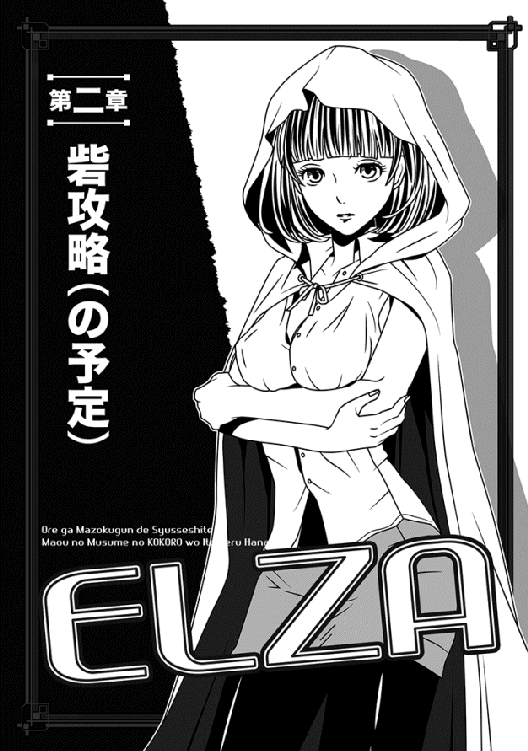
マヤ様の唯一の直臣となった俺は、翌日から地上の王宮に住むことになった。
自分が一番驚いたが、あのお方は「それくらいは当然のことだ」と、全く恩に着せる様子もなかった。
というわけで、二段ベッド×３の八畳間くらいの部屋に六人で寝起きしていた俺は、いきなり王宮の中に（日本式に言えば）３ＬＤＫくらいの広い部屋を与えられ、そこで寝起きすることになっちまった。
めちゃくちゃ落ち着かない。
おまけに、服装も麻の貫頭衣から漆黒の中世風スーツ（前を大きく開けた裾の長い上着）や、特注の武器（なんと刀だった！）を与えられ、しかも支度金として二千万デュラハムも与えられて目を白黒させるハメになった。
ちなみに、デュラハムとは魔界での通貨の単位だが、ここでは正規戦士（俺の二つ上の階級）の俸給が、年に百万デュラハムであると言えば、そのべらぼうな金額がわかるだろう。
しかもだ、「使い切ったらまた申し出るがよい」と気前のいいことまで言われてるのである。
これで、俺がこの任務で死にでもしたら、丸損ではないのだろうか？
......まあ、だからこそ、あのお方は直臣を絞っているのかもしれないが。
（俺だって、一年は様子見されてたしな）
加えて、さぞかし腐っているだろうと予想していたギリアムは、後で俺が慰めに行くと、きっぱりと首を振って、「いや、あれはやはり私のミスでした。これでよかったのです（いきなり敬語かい）」とまで言ってくれた。
しかも、俺の微妙な顔つきを読んだのか、「そうお気になさらず。反省は反省として、マヤ様の直臣であるナオヤ様に仕えるのは、魔界の戦士にとってはそう悪い選択肢ではありません。むしろ望外かと」と逆に慰められた。
「え、でもギリアムさんは陪臣とはいえ、魔王陛下の臣下でしょうに」
「今の私は、もはや貴方の臣下です。呼び捨てでお願いします」
律儀に訂正した後、彼は優雅に肩をすくめてみせた。
「確かにそうでしたが、魔界の住人は兵士である限り、ほぼ全員が魔王陛下の陪臣（臣下の臣下）ですよ。直臣でもない限りは大差ありませんし、魔王陛下の真の直臣など、死者を含めてさえ、数十名といったところでしょう」
「へぇえええ......やっぱり少ないんだ」
「さよう。しかも、魔王陛下はダークプリンセスを溺愛してらっしゃいます。畏れ多い言い方ですが、いずれダークプリンセスが新たな魔王となるのは、ほぼ間違いないのです」
「そうか！ みんな、次のことを考えるわけだ」
「その通りです。そしてその考えでいくなら、ナオヤ様の未来は非常に明るいと言えるでしょう。なにしろ、今は他にマヤ様の直臣がいませんから。となると、ナオヤ様の直属の臣下となるのは、未来の序列から見れば、かなり有望な選択なのです」
「おぉー......て、喜んでる場合じゃないんだけど。明るい未来も、この難儀な任務をクリアできなければ、おじゃんだし。マヤ様は臣下を甘やかすお方じゃないからな」
「......それほど困難な任務ですか？」
さりげなく訊いたギリアムに、俺は無駄に明るく言ってやった。
「そりゃもう、他人事なら俺は絶対、『あ、そりゃ無理だろ！』って即答するね」
しかし、その「困難な任務」の内容を知らないだけに、奴隷ばかりか奴隷を指揮する予定の二等戦士（奴隷以上の階級）を集めるのも、全然苦労しなかった。
というのも、俺がマヤ様の直臣って事実がなぜか音速で広まっていて、翌日には、ほぼ魔界中が知っていたのだな。もちろん、俺がすぐに任務に就くって事実も。
お陰で、あっという間に二等戦士の「ナオヤ様（俺）の臣下希望者」が押し寄せてきたほどで......中には今の俺より階級が上の人まで「降格して使ってくれ！」と頼んできたりして、だいぶ驚いた。みんな、先のことを考えすぎだろ......今後、俺がどうなるかもわからないのに。ともあれ、人集めに不自由しなかったのは事実で、俺はたちまち出陣の準備を整えることができた。
......まあ、陣容の八割は奴隷だけどな。
出荷場の騒動から三日後、超特急で準備を終えた俺は、魔界の帝都にある門のそばで馬上の人となっていた。
任務は──ルクレシオン帝国（人間達の住む国）との国境付近にある砦の一つを、落とすことである。
......昔、某シミュレーションゲームで知った事実だが、「城（砦でも同じだ）を落とすには、敵の十倍の兵力が必要」だそうな。なのに、今俺の手元にあるのは、多分砦の守備兵とほぼ同数か、あるいはやや少ない。
しかも、率いるメンツの八割は、昔の俺みたいな奴隷兵士である。
これは想像以上にヤバいことらしく、打ち明けられたギリアムなどは、またしても蒼白な顔になっていた。
まあしかし、今更どうにもならん。
犬に噛まれたと思って諦めてもらうしかないな（ホントにそう告げた）。
真新しいレザーアーマーを纏い、巨大な金属製の門（魔界の帝都との境界を示すんだな、これ）の手前で整列していると、実に感無量である。
ちなみに、今俺が乗っている黒い馬も、マヤ様が用意してくれたものだ。
俺以下、二等戦士は全員、専用の馬が与えられたのだ。普通ならこれもあり得ないことだが、最初の直臣ってことで、マヤ様は大盤振る舞いしたのかもしれない。
なぜかわらわらと集まってきた野次馬連中を見渡しつつ、俺はため息をつく。
クラスで孤立してた半ヒッキーの俺が、小なりとはいえ、今や異世界で軍勢の指揮官か......世の中、何があるかわからん。
「いやぁ......まあ、先のことはともかく、今だけは晴れがましい気持ちだな」
「御意」
馬を並べたギリアムが素直に頷く。
「それに、ご覧下さい......あのお方が見送りに来てくださいました」
「えっ」
慌てて彼が見ている方を見ると、マヤ様ご自身が侍女連中を連れてこちらへやってくるところだった。
もちろん俺以下、馬上の者は全員が降りて拝礼したし、歩兵の奴隷はその場で這いつくばった。
例の間諜エルザ（めでたく同行させることになった）のように、そっぽを向いてた奴は、近くの二等戦士が無理やりに頭を押さえて下げさせていた。
それどころか、見物に来ていたわけのわからん野次馬連中まで、泡を食って地面に額を擦りつけていた。さすがに恐れられてるなぁ、マヤ様。
俺は例によって片膝をつく独自のやり方だが、たまたまそばにいたヒューマノイドのミュウ（無事にあそこから連れ出せたのだ）も、俺の真似をしていた。
「ナオヤ、早い出陣だな」
ウエストの細さを強調するような漆黒のコルセットドレス姿のマヤ様は、俺の前まで来ると機嫌よく声をかけてきた。
相変わらず颯爽たる立ち姿であり、覇気の固まりのように見える。
つーか、まだ十三歳なのに俺と身長もそう変わらないし、むちゃくちゃ大人っぽいよな。
「はっ。グズグズする意味もあまりないので。マヤ様こそ、わざわざ見送りに来てくださり、ありがとうございます」
「ナオヤの、指揮官としての初陣とあらば、無視もできまい」
笑って述べた後、マヤ様は全員に声をかけた。
「皆の者、立って楽な姿勢を取るがよいぞ。マヤはナオヤと少し話がある」
手招きするマヤ様に連れられ、俺はマヤ様と共に少し端に寄った。
「何とか陣容を整えたようだな」
「お陰様で」
「うん......しっかりやるがよい。マヤもこの後、すぐに出陣する予定だが、おまえの成功と無事を願っている」
「えっ!?」
言うまでもなく、この「えっ!?」というのは、「この後、すぐに出陣する予定」というマヤ様の言葉である。聞いてないんですが！
俺はよほど心配そうな顔をしていたらしく、マヤ様は苦笑して俺の二の腕辺りを軽く叩いた。
「なんという顔をする。おまえに比べれば兵力も五倍近いし、それに基本的には敵を欺く陽動が任務だ。実際の戦闘には、遭遇しないはずだぞ......マヤは残念だがな」
「陽動、ですか？」
「うむ。父の本隊が北の前線に向かうのに合わせ、マヤは軍勢を率いて父からやや離れた前線を視察する。敵の目をこちらへ引きつける狙いもあるが、領内から出ることはない。初陣でもないし、案ずるには及ばぬ」
「そう......ですか」
俺が息を吐くと、マヤ様はだいぶくすぐったそうな表情で俺を見た。
「ナオヤは、マヤのことを心配しているのか」
「そりゃ当然ではないでしょうか」
「そうか？ 父はよく心配してくださるが、これまでは、他にマヤの心配をするような者はいなかったな」
「失礼ながら」
ためらいはしたが、俺は思い切って正直に言った。
「どれほど偉大な人でも、完璧ではあり得ないはずです。もちろん俺は心配しますとも」
「そう......だな」
意外にもマヤ様は怒らなかった。
綺麗な薄赤い瞳を細めると、長い金髪を手で払った。
そんな細かい仕草ですら、この人がやるとめちゃくちゃかっこいい。
「直臣のおまえには白状してもよかろう......自分が完璧ではないことを、マヤは誰よりもよく自覚している。もちろん、他の者にそんな素振りを見せる気はないが」
しばらく、互いに黙り込んでしまった。
俺は個人的なことを打ち明けてくれたことに感激していたからだし、マヤ様の方は多分、この後の出陣のことでも考えていたのだろう──と思ったら、マヤ様がいきなり言った。
彼女にしては珍しく、やっと聞こえるほどの小声だった。
「帝国の砦を落とすこの任務が、かなり無理があることは承知している......しかし、おまえの今の階級では、残念ながらこれ以上の兵力を与えることはできない」
「今でさえ、だいぶ破格なのは理解してますよ。......ご安心ください、与えられた兵力で何とかしますから」
何のアテもないのに、自信ありげにフカす俺、我ながら呆れるな。
しかし......マヤ様が滅多に見せないような上目遣いの切ない顔で俺を見ているのに、ここで弱気なコトは言えたモンじゃない。
「それに、俺はこれがマヤ様の心遣いだとちゃんと理解しています。少しでもその信頼に応えられるようにやってみますよ」
調子に乗ってそこまで言うと、マヤ様はようやく微笑してくれた。
「かつて、おまえの顔を予知夢で何度も見た時は、『なぜこのマヤともあろう者が、こんなオドオドした男を夢に見るのか』と疑問だったものだが......今のナオヤは、辛うじて戦士の顔には見えるようだ。生意気なことも言うようになったし」
優しい口調で、実にがっかりなことを述べた。
「うわっ、あんまり褒められてる気がしませんがっ」
俺が呻くと、何がおかしいのかマヤ様は声を上げて笑った。ほとんど笑い声を聞いたことがなかったので、無茶苦茶新鮮だった。
しかも、昔の俺なら即ハアハアしそうなほど愛らしいし。これほどの美貌を持つ人ともなると、どんな表情をしても絵になるが、やはり笑顔が一番である。
......おまけに、胸を強調したアンミラの制服みたいなドレスも素晴らしい！
（まあ、魔王の一人娘に対してこんな罰当たりな感情を持つのは、俺くらいだろう）
二人で肩を並べて皆の元へ戻り、俺はまた馬上の人になった。
なぜか驚き顔のギリアムに、「出陣する者はみんな揃った？」と尋ねる。
「ぎょ、御意」
「じゃあ、開門の要請を」
「はっ」
低頭し、ギリアムが声を張り上げる。
「──ダークプリンセスが直臣、上等戦士ナオヤ・マツウラ指揮下の軍勢が出陣するっ。衛兵、速やかに門を開けよ！」
要請に従い、衛兵が門の左右でそれぞれ滑車のレバーを操作する。黒い巨大な門が、ゆっくりと音を立てて左右に開く。
俺は、まだ離れた場所から見ているマヤ様に告げた。
「では、行って参りますっ」
「必ず生きて戻り、マヤに報告するのだぞ！」
顔を上げてまっすぐにこちらを見るマヤ様は、驚いたことに少々心配そうに見えた。凛々しい顔と怒った顔しか見たことないので、これも凄く新鮮だ。
お陰で俺は、指揮官にあるまじきニヤニヤ顔で手を振り、魔界の帝都マヤ（そう、帝都にはあのお方の名前がついてるのだ！）の門を出て行く羽目になった。
......それでもまあ、とにもかくにも出陣だ！
○────○
この世界は、おおよそ歪なオーストラリア大陸みたいな形をしていると思えば間違いない。
で、今現在は大陸の中央よりやや東側が魔界ということになっている。
いや、現状では南北に境界線を引いた場所は、「やや」どころか「かなり」魔界寄りだ。要は、ルクレシオン帝国との戦が始まって十年の間に、ガンガン押し込まれてしまっているわけだ。魔界が圧倒的に有利だった当初の頃からこっち、負け戦が続いていると。
噂では、数年前から帝国側に民衆が「勇者（出たよ！）」と称える騎士、レイバーグが現れ、彼の向かうところ、連戦連勝（魔族から見れば、連敗続き）らしいんだが......まあ、その辺は今の俺が心配してもしょうがない。
まずは目先の任務である。
マヤ様がなぜ、国境にある某砦の攻略を命じたかというと、その砦のある国境の南方面は、ちょうど魔族が帝国側に進撃する軍道がある場所なのだな。
しかも、今現在急ピッチで拡張が進められているその砦たるや、左右を山に挟まれた隘路に位置する。もっと簡単に言うと、山脈の切れ目を通る軍道を、件の砦が露骨に塞ぐ形になっている。
このまま拡張工事が終わった日にゃ、以後、魔族軍はその軍道を使うことができなくなるわけで──というか、今現在、既にそうなりかけているわけだ。
まだ砦が小規模だから辛うじてその左右を通ることはできるが、通行する度にいちいち砦から矢雨を受けて、被害が出ているわけだ。このまま座視してあそこが増築され、籠もる兵力も増えたりすると、もはや完全に南方方面の軍の運用に支障が出る。
だからこそ、早急に何とかする必要があるわけだ。
しかし、魔族のトップ連中はなぜか未だに危機感が薄く、いち早くその不利を悟ったマヤ様が、俺に攻略を命じたと。
「......そういう経緯なわけだ」
俺は、左右に馬を並べる二等戦士達二人に詳細を告げた。
街道を馬に乗ってポクポク進みつつ、ようやくきちんと説明をしてやったのだな。
もちろん、俺達三人の背後には、奴隷兵士を含め、全軍が続いている......あとほとんどの者は徒歩だけど。
ちなみに、俺の右側にはギリアムがいて、左側には元俺の監督官だった二等戦士（マヤ様が呼んでると数日前に教えてくれた人）のダヤンがいる。ダヤンは若いくせに歴戦の兵士なので、俺は砦攻略のためにおそるおそる同行を頼んだわけだ。
元の上官に「俺の部下になってくだせー」と頼むってのは、正直、むちゃくちゃ嫌だったが、ほっとしたことに、気の良いダヤンは喜んで引き受けてくれた。
むしろ、「声をかけてくれて嬉しい」とまで言ってくれたな......ギリアムもそうだが、この人も根は良い人らしい。助かった！
あと、元奴隷長の黄色い頭をしたヨルンも奴隷兵士の指揮のために同行してるが、今あいつは偵察のために馬で先行している。
自慢じゃないが、俺は自分でも自覚するほど臆病なので、行軍しつつもちゃんと四方に斥候を放っているのである。ヨルンもその一人というわけだ。
途中で不意打ち食らって全滅とか、全く笑えないからな......実際、戦況が不利になったせいか、最近はよくあるし。
「──それにしても」
全部聞いた途端、ギリアムが発言した。
こいつはいかにも「自分は憂慮してます」と言わんばかりの顔でずばり述べた。
「南方の国境線にあるあの砦は、最新の情報では、百名を越える騎士達に守られていると聞き及びます。守将はリグルスという男だそうですが、こいつはあのレイバーグの元仲間だとか」
「あー、うん。俺もそれは聞いた。昔、勇者レイバーグがまだ冒険者だった頃、一緒に旅をしてた奴なんだって？」
「そう......ですが」
ギリアムは妙に言いにくそうに俺を見た。
「なに？」
「あ、いえ......その、ナオヤ様はレイバーグが本当に勇者だと思ってらっしゃいますか？ 敵の民衆共が称えるような本物の勇者だと？」
「真実は知らない」
俺は身も蓋もなく答える。
「でも、俺達魔族軍が、奴が現れてから連戦連敗してるのは事実だろ？ なら、その事実だけは認めて、一応勇者って呼んでるだけ。好き嫌いは置いて、敵の力量は認めてやらないと」
淡々と説明すると、元監督官のダヤンが大きく頷いてくれた。
「敵を甘く見ないのはよいことです」
「うんうん、そうだよな」
嬉しくなった俺が破顔した途端、ダヤンはいきなり不可視のナイフのようにぶすりときた──言葉の刃で。
「して、攻略の思案は立ってますか？」
「......」
俺、無言！
いきなり、なんという鋭い指摘。それはまさに、俺が聞きたいねっ。黙って見つめる野郎二人の視線が痛い、痛すぎる。
つか、こういう場合、部下がよい意見を出すのが本当じゃないのか？
三国志のシミュレーションだって、軍師の意見とか聞けるだろうに。
沈黙に堪えかねて内心で責任転換すら始めてしまったが......幸い、絶妙な横槍が入った。
「そんなことより、あたしの拘束、解いてくださいよっ」
ボブカットの黒髪を振り乱し、後から追いついてきたエルザが喚いた。
例の、魔法使い兼帝国側の浣腸──じゃなくて、間諜の人である。
この人は唯一、奴隷の身で馬に乗ってるものの、後ろ手にぎっちり縛られている上、豊かな胸の上下にもロープが食い込み、実にヤバいポーズで拘束されている。
ただでさえ目立つ方だった胸が、今や「見て、この胸を見て！」と言わんばかりに飛び出してるわけで。下手したら「なんのＳＭですか？」と顔が赤くなるような光景だった。
おまけに今の格好は、競泳水着みたいな黒い薄手の衣装なのだ。
最初からエルザが着てた、ブラウスやらスカートやらを剥ぎ取った下に着てたものらしいが、もの凄く色っぽい格好である。
正味、イメージＤＶＤの女優みたいだ（それもエロ系の）。
「うわぁ」
「うわぁじゃないですよっ」
俺が呻くと、すかさずエルザが突っ込んだ......無理もないが、真っ赤な顔で。
「あたし、なんでこんなひどい格好で縛られてるんですかっ」
「こ、こら。馬上で暴れるでねぇ！ 尻をひっぱたくぞいっ」
エルザを乗せた馬の手綱を引いていたボンゴ（元の部屋仲間。こいつも連れてきた）が、毛だらけの顔を振り乱して注意する。パンツ一丁の巨体獣人にドスの利いた声で脅され、さすがにエルザは黙り込んだが、それでも恨めしそうに俺を見るのはやめなかった。
「ごめんよぅ、あにぎぃ。こいつがどうしても直訴したいって言うからさー」
どすどすと歩きつつ、ボンゴがいかにも申し訳なさそうに頭をかく。
「あー、まあいいさ」
俺は胸の先端がはっきりわかる、競泳水着みたいな姿から意識して目を逸らした。
つか、じっくり見てると股間にもうっすら縦筋が窺えたりして、むちゃくちゃヤバいな。俺の目には毒だ。
「......で、なんでエルザはこんなぎっちり縛られてんの？」
やむなく、そのままギリアムに振る。
言っちゃ悪いが、別に俺が命じたわけじゃないんだな。
「いえ、この拘束はヨルンの仕業ですが」
ギリアムは歯切れ悪く答えた。
「しかし、彼のやりようも頷けます。まずこの女、出荷の際にローブの中に武器を縫い込めて隠していたのが見つかり、不審に思ってさらなる身体検査をしたところ、他にも武器やら妙な小道具やらが衣服の中に見つかったのです。そこで、ヨルンがこうして厳重に拘束したわけでして」
「ヨルンの趣味もあるんだろうけど......なるほどな」
しんねりとエルザを横目で見ると、さすがの彼女も決まり悪そうに目を逸らした。
もっとも、それで黙り込むわけじゃなかったが。
「そ、それはそれとして！ 今は腕に拘束リングも填められてるし、抵抗しようがないじゃないですかっ。服装整えてロープも解いてくださいよ」
「う〜ん」
俺は少し考え、背後を振り返って大声を出した。
「ミュウ！ こっち来てくれ」
例の、別な意味でヤバい格好のヒューマノイド少女を呼ぶ。
全身一体化のボディスーツか、プラグスーツもどきみたいな格好の彼女が、すぐに追いついてきた。正直、見た目のエロさと美貌においては、この子の方がエルザより上だろう......なにせ、オリエント工業も真っ青の人工美少女プラス、このエロスーツだからな。
ただ、本人が悪びれずに堂々としているので、俺もそう意識しないで済んでるだけだ。
......いや、やっぱり意識するか。
「なんでしょう、マスター？」
真横で見上げた白銀の髪の彼女に、俺はどぎまぎした。
動揺を悟られないように、意識して平静な声を出す。
「今からエルザに質問するんで、チェック頼むよ」
「お任せください」
「うん──じゃあエルザ、拘束解いてちゃんと服着せたら、逃げずにおとなしくしてるか？」
「もちろんです、ナオヤ様ぁ！ 逃げようなんてこれっぽっちも考えませんわぁ」
無駄に明るい声でエルザが答える。
俺が聞いてもすげー嘘くさい......ミュウを見ると、案の定、彼女も首を振った。
「ネガティブ反応が出ました。嘘ですね」
俺はそのまましかめっ面でエルザの方を見て、申し渡した。
「あんた、当分そのまま」
「なんで！ ていうか、そんな小娘の言うこと、そのまま信じないでよっ」
「いーや、信じるさ。ミュウには俺を騙す理由ないけど、あんたにはあるだろ」
「くっ」
エルザはさらに赤みを増した顔で今度はミュウを睨む。
「あんたも、いきなり奴隷にされた身でしょっ。一体、どっちの味方なの！」
「マスターですわ」
不思議そうな顔でミュウが即答して、エルザはがっくりと肩を落とす。
いやぁ、さすがに可哀想になってきたが、しかしあの拘束スタイルで馬に揺れられていると、馬の動きと合わせて、ロープで突き出たおっぱいが上下に揺れたりして、すげー。内心、そのままでいてほしいという気持ちも大いにあったりして。
とはいえ、エルザが肩を震わせて俯いてるのを見て、さすがの俺も少し譲歩することにした。
「ミュウ、俺のマントをエルザに羽織らせてやってくれ。それくらいは妥協してもいいだろう」
防寒というより、かっこつけのために纏っていたマントを脱ぎ、ミュウに渡した。
そもそも春みたいな陽気だし、マントなんか元々いらない。
「わかりました」
驚いたことに、ミュウがゆっくりと微笑してからマントを受け取り、エルザの馬の方へ行った。
わ、この子、こんな風に笑えたのか！
しかも、エルザの馬の横で嘘みたいに身軽に飛ぶと、鞍の後ろにぴたりと着地し、彼女に羽織らせてやっている。全てが自然な動きだけど、運動神経凄いな。
エルザ自身も驚いたと見え、小さく声を上げていた。
彼女に見とれている間に、ダヤンが急に注意を促した。
「ナオヤ様、ご覧を！」
「え？」
慌てて彼の指差す方を見ると、街道を逸れた北東の方角から、馬が駆けてくるのが見えた。乗っているのは真っ黄色な頭のヨルンだが、しきりにこちらに手を振っている。あれは挨拶じゃなくて......なんか興奮してるみたいだな。
「何か怒鳴ってるようです」
「敵でも見つけましたか」
ダヤンとギリアムがそれぞれ首を傾げる。
「どうやら、敵と遭遇したようですね」
戻ってきたミュウが、一人だけ冷静に指摘した。
「怪しい奴を捕まえた、と叫んでます」
言われて俺達もやっと気付いた......鞍の後ろに、誰かを縛り付けて乗せてるようだ。
○────○
「いやぁ、斥候なんてどの部隊も出さないし、特にいらんよなーと思ってたけど、俺ゃ考えを改めたね！」
戻ってきたヨルンは、開口一番そう吐かした。
つか、おまえは送り出す時、「任せてくれ！ 隠密行動は得意なんだっ」とかフカしてただろうが。
人の気も知らず、ヨルンは上機嫌で、縛り上げた男を鞍から落とす。
落とされた相手が呻くほど乱暴なやり方だったが......まあ、帝国側の捕虜の扱いは魔族以上にひどいしな。
俺は一時行軍を止めて軍勢を休ませ、早速、ギリアムらと共にそいつの元へ駆けつけた。
見たところ、麻のシャツとツギハギだらけのズボン姿の野郎で、何気なく見る限りは魔界辺境に住むふつーの農夫っぽいが。
「こいつが敵だって？」
ギリアムが疑わしそうにヨルンを見る。
ヨルンはあっさり言ってくれた。
「俺の姿見て、大慌てで茂みに隠れようとしたんだぜ？ そりゃ敵に決まってら」
「......それだけではな」
かつての部下からぞんざいな口の利き方をされたせいか、ギリアムはすこぶる不機嫌に言った。
二階級降格されたギリアムは、逆に一階級昇進した（俺がさせた）ヨルンと同格になっているわけで、さすがに話のわかる彼も、思うところがあるらしい。
「違うぞっ」
いきなり敵──とされている農夫っぽい男が喚いた。
「私はただの農夫だっ。たまたま散歩していたら、そこの黄色い頭の人が無理に引っ立てたんだ」
後ろ手に縛られて座り込んだまま、懸命に訴える。
「嘘つけ、ありゃ散歩の足取りじゃなかったぜぇ」
ヨルンが足下に唾を吐く。
「んなことないっ。あんたこそ、いきなり決めつけてどういう了見なんだ！」
「んだとおっ、ふてぶてしい間諜風情があ！」
「まあまあ、喧嘩はやめよう」
ミュウが耳元で囁いてくれたのに頷いた後、俺は険悪なムードを払拭するように前に出ると、男の背後へ回った。
「な、なんですか」
「別に......ちょっと掌を見るだけ」
宣言通り、俺は男の掌を開いて点検する......ああ、やっぱりな。ミュウの「この人、嘘ついてます」っての、実に正確だ。
男の前へ回ると、俺はにこやかに言ってやった。
「一つ訊いていいか？」
「そりゃいいですけど」
男は警戒心丸出しの顔で言った。
「いや......すげー簡単な疑問なんだけどな」
俺はさりげなく続けた。
「単なる農夫のくせに、なんであんた、指に剣ダコが幾つもあるんだ？ 手の荒れ具合からしてどう見ても、日頃から剣ばかり握ってる奴の手だと思うんだが」
愕然とした顔の彼を見て、さらに少し離れた場所にいるエルザを指差す。
「あと、あんたと彼女の目が合った時、二人揃って慌ててお互いに目を逸らしたよな？ つまり、エルザとあんたは顔見知り臭い......ルクレシオン帝国の間諜であるエルザとさ」
そこまで言った途端、今までどっちかというとオドオドしているように見えた男が、急に跳ね起きた。
どうやら密かに緩めてあったらしく、縛られた両手を簡単にほどくと、シャツの隙間に手を突っ込んで素早くダガーを取り出した。
「あーっ。てめぇ、いつの間にっ」
「ナオヤ様！」
「死ねええーーーっ!!」
焦ったヨルンとギリアムが叫んだ途端、そいつがよりにもよって俺に飛びかかってきやがった。
まっすぐ俺に来るか！
もちろん、俺もぼんやり刺されるのを待っていたわけではなく、すかさずマヤ様から拝領した刀を抜いた。
踏み込みと下方から繰り出した斬撃はほぼ同時であり、弧を描く赤い刀身が、きっちり奴のダガーを下から叩き上げる。
「うわっ」
狼狽の声を最後に、ダガーは宙に飛ばされ、くるくると舞って明後日の方角へ消えた。
「はい、無駄な抵抗はやめとこうな」
俺は呆然とする男の喉元に、即座に赤い刀身を突きつけてやった。
（つか、この刀って赤く光っててかっこいいんだ、これが！）
「さすがです！」
遅ればせながら、男に斬りかかろうとしていた元監督官のダヤンが、ほっとしたように言ってくれた。
「地獄を生き延びたのは、伊達ではありませんな」
絶賛しつつ、男の手をねじり上げ、今度はがんじがらめに縛ってくれた。
「はっは。いや、ダヤンの指導がよかったからだよ」
俺は大声で自慢したくなるところを、辛うじて控えめに言っておいた。
「あにぎは、百人のうち九十九人が戦死する肉の盾から生き残って、奴隷長まで上がった人だもんさーー」
遠くの方でボンゴが代わりに自慢そうに喚く。
......いや、今は上等戦士だっつーの。
「まあ、俺は用心だけは怠らないっつか、常に最悪を考えてるトコがあるからさ」
皆が褒めてくれることに段々気まずくなり、結局最後は正直に白状した。
完璧な事実であって、誇張は全くない。実際俺は、過去のボッチ経験が悲惨なので、物事を悪い方に考える節がある。
今だって、こいつが斬りかかる可能性を最初から考えてたし。
「というところで、さて改めて話そう、おじさん」
一段落すると、俺はその帝国の間諜っぽい人に話しかけた。
エロい格好で縛られたエルザが遠くから悔しそうに見てるけど、悪いがこの男を解放するわけにはいかない。
「その前に──」
がらりと口調の変わった自称農夫が、俺を睨んだ。
「エルザを──あの子をどうするつもりだ？」
「ああ、ＳＭ縛りされてるあの人？ やっぱり知り合いなんだ？」
返答ナシ......ヨルンがむっとして男を締め上げようとしたが、俺は手を振った。
「いいよ、ヨルン。そりゃ素直に話すわけないよな。......まあサービス精神豊富な俺は答えてやるけど、エルザは一緒に連れて行く。彼女の力が必要なんだ」
「戦で魔法を使わせる気か！ どうせ、乱暴もするつもりだろうっ。薄汚い奴らだ！」
「黙れっ」
いいと言うのに、黙っていられなくなったのか、ギリアムが怒鳴る。
「ナオヤ様は、間抜けにも捕まって縛り首になりかけていたあの女を、お救いになったのだ。何も事情を知らない貴様が、憶測だけでものを言うな！」
言われ、男は驚いたように俺を見た。
......つーか、この人はともかく、遠くからこっちを見ているエルザまで、ぶったまげた顔で俺を見るのはどうなんだ、おい。
普通、そういうことだったってわかるだろ！ 俺が本気で、戦わせるために何がなんでも必要だったと思ってたのかー？ あるいは、押し倒しておっぱい揉みまくってやっちゃう気だと（いや誘惑くらいは覚えるけどっ）。
ったく、元の世界でもよく思ったことだけど──これだから美人はようっ。
俺は内心の不満を押さえつけ、律儀なギリアムに頷いてあげた。
「どうも。でもまあ、敵が俺達を罵るのは当然だし、今更だよ。落ち着いて話そう」
あんたもさ、と男を見たが──こいつはまた、素晴らしく頑固な野郎だった。
「ふんっ。エルザは知らんが、俺は懐柔されんぞ」
「......言っちゃ悪いけど、エルザも全然懐柔されてないっつーの。俺は喚かれてばっかだ」
すかさず言い返したが、男は無視した。
「とにかくっ。俺は何も話さん。誰が魔族の連中に秘密を漏らしたりするか！」
「へぇえ？ すると、あんたは何か重要な秘密を持ってるわけだ」
「今のは言葉のアヤだ！」
いささかぎくりとした男の顔を見て、俺は脇に控えたミュウを見る。
やはり彼女は首を振った。嘘だということだ。
「......ちなみに、あんたってもしかしてどっかの軍勢の斥候とか？ 魔族軍と違って、帝国は斥候をマメに出すっていうしな」
「関係ないね。俺は単なる間諜で、運悪く見つかっただけだ」
振り返ると、やはりミュウは首を振った。
おいおい、こりゃマジでヤバそうだな。
「ヨルンっ」
「おおよ。拷問か？」
嬉しそうに応じた彼に、俺は苦笑して首を振った。
「悪いけど、今度はダヤンや他の二等戦士も含めて、さっきの倍の人数を斥候に出す。こりゃどうも......帝国側の軍勢がそばにいるような気がするんだ」
「ああ、言われてみりゃ......可能性はあるな」
「馬鹿なっ。そんな事実は全くない！」
などと男が慌てたように喚いたが、俺はもちろん無視した。
それが嘘だっていうのは、ミュウに訊かなくてもわかる。
「はいはい。とにかくあんたは、帝都マヤに護送する......まさか逃がすわけにもいかないからな」
「待て、俺は」
男がまた何か言いかけたが、俺の視線を受けた二等戦士の一人が、そいつを引っ立てていった。
「悪いけど、エルザとは離しておいてくれ！」
そいつの背中に命じると、再び斥候に出ようとするヨルンやダヤンにも声をかけた。
「何度も送り出してすまないけど、頼むぜ。多分、ひどくまずいことになってる気がするんだ」
「お任せを！」
「任せてくれって」
ダヤンとヨルンはそれぞれ頼もしく応じ、離れていった。
さて......これで何が起こってるかわかるといいんだが。
○────○
行軍を再開しつつ、ヨルン達第二次斥候隊の帰還を待ったが──。
結果は判断に迷うものだった。
空振り......というわけでもないが、とりあえず敵軍の姿は付近にはないらしい......現時点では。ただ、大量の馬の蹄や人の足跡が近くに残っていて、しかもその足跡はきっちり三方向に分かれて散っていたという。
国境のある西の方へ戻っていくものと、南へ向かうもの......それに、俺達が出立した帝都マヤのある、東へ向かうものだ。
「う〜ん」
夜になり、軍勢が野営して寝静まる頃になっても、俺はまだ唸っていた。
一応、俺達を狙う軍勢でもなさそうだが......かといって、これを無視するのもまずい気がする。まあ、残っていた足跡や蹄の人数は、仮に帝都が襲われても全然大丈夫な規模だったそうだが、それでもだ。
何より、なぜか来た方向へＵターンする足跡まであったところが、非常に怪しい。
このわけわからん痕跡のことを聞いて、俺はある疑いを持っていたが......しかし何の証拠もないので動きようがない。
せいぜい、貴重な戦力から伝令に人数を割き、帝都マヤと今はもう行軍中のはずのマヤ様に、この発見を知らせるよう頼んだ程度だ。他にどうしようもないわな。
......とりあえず、見張りは立ててるし、トイレ（立ちションになるが）を済ませて寝るか。
いや、その前に砦の攻略も考えないといけないんだよな......くそ、指揮官がこれほど悩ましいとは！ 奴隷の時は戦略なんて考える立場になかったからなー。
首を振りつつ陣地を離れようとして、俺は気付いてしまった。
昼間ひっ捕まえた新たな間諜の男と、例の色気エルザがコソコソしゃべっている。どうやらエルザは、彼女の見張りをしているボンゴが爆睡している隙を見つけ、そっと男が拘束されている場所まで移動してきたらしい。
つか、男が縛られている場所にも見張りがいるんだが、そいつも爆睡してやがる。これだから、万事が適当な獣人共はっ。
俺は足早に近付いて二人を引き離そうとした──が、思い直してこっそり目立たないようにそばまで寄った。幸い、月も出てない暗がりなので、目立たないように接近すれば、見つからない......はずだ。
『それは本当なの、ギル!?』
エルザの声が聞こえ、俺はその場でうずくまる。
さすがにこれ以上近付くのはまずそうだ。
『ああ、本当だ』
ギルと呼ばれた例の男が答える。
『しかしエルザ、おまえは何をもじもじしてる？』
『べ、別にっ。いいから続けて』
エルザの声は、なぜか切迫していた。
不思議だったが、とりあえず男の方は話を続けてくれた。
『俺は念のために放たれていた斥候なんだが......まさか、自分が敵に見つかるとは思わなかった。いつも隙だらけの魔族軍が、今回に限ってちゃんと斥候を放っていたとはな』
『あのナオヤって子、奴隷上がりらしいわ。だから、他の猪突猛進の兵士と違って、用心深いのよ』
『ふん。いくら用心深かろうと、あの砦をこの人数で落とすなど、不可能だろうさ。問題は、我らの計画がバレることだが──そちらは大丈夫だろうな？』
我らの計画ってなんだ、おい！
俺はますます耳をすませ、ボソボソした会話を聞き取ろうとする。
『大丈夫。少なくとも、今貴方が話してくれた作戦については、この人達は何も知らないわ。だからどうせこのままだと』
『しっ。エルザ、黙れ！ 誰かが近付いてくるっ』
「二人とも、そこで何をしているっ。おまえ達は、ナオヤ様があえて離しておいたはずだぞ！」
ギリアムの叱声が聞こえて、俺は暗闇で派手にずっこけた。
くそっ、何というバットタイミングで来るのかっ。いや......熱心に陣中を巡回しているのは見上げたものだし、むしろ褒めてやりたいくらいだが。
でもなあ、このタイミングはないよなっ。ホント、あとちょっとでいい話が聞けたかもしれないのにさ。
憤懣やるかたない思いだったが、こうなっては仕方ない。
俺は立ち上がり、さりげなく騒ぎの現場に近付く。
ちょうど、エルザの見張りだったボンゴと男──ギルの見張りの奴隷が叩き起こされ、ギリアムからガミガミ叱られているところだった。
「だいたいおまえ達はっ──あ、これはナオヤ様」
律儀に一礼する金髪のギリアムに、俺は危うくしかめっ面を向けそうになった。
まあ、別にこの人のせいじゃないしな。むしろ、仕事熱心ですげー人の気がする。
「ご苦労様......問題かな？」
「あ、あにぎぃ......ごめんよぉ......おで、我慢できなくて寝ちまって」
叩き起こされたボンゴが、巨体を縮めるようにしてぺこぺこ謝った。
「なるほど、エルザと彼が密会しちまったか──」
ギリアムの報告にわざとらしく頷き、俺は肩をすくめる。
「もういいけど、今回はよい教訓だったろ？ 今度は交代までちゃんとがんばってくれな。せっかく奴隷長に上がったんだし（俺が引き上げた）」
うんうんと何度も頷き、本当に申し訳なさそうにボンゴがまた頭を下げる。
そのままエルザを引っ立てようとしたが、今度はエルザがただでさえ（ロープのせいで）目立つ胸を突き出し、俺に文句をつけた。
「それより、あたしのおトイレを何とかしてくださいなっ」
「あ、そうか」
どうせ、内緒話を追及されないための申し出だろうとは思うが、半分以上は本心かもしれない。なにせ、内股になった膝がガクガク震えている。
これまで、だいぶ我慢してたと見える。
「そういや、忘れてたなぁ。じゃあボンゴ、先にそこらの茂みにエルザを──」
「待ってよ！ あたし、女なんですけどっ」
焦った顔でエルザが割り込む。
......そりゃ、突き出たおっぱい見りゃわかる。
「つっても、この陣地に簡易トイレなんかないし、ロープほどいて『やってきていいよ』って言えるわけもないし、妥協してもらうしかないんだけど」
ちゃんと相手に翻訳されて伝わってるかどうか謎だが、とにかく俺は事情を説明してやる。
一応通じてたと見え、エルザは絶望的な顔をした。
「くっ──せ、せめて女性の二等戦士とかいないの!?」
「あいにくだな」
黙って聞いていたギリアムが生真面目に、しかもきっぱり述べた。
「この部隊にいる女性は、連れてきた奴隷の魔法使いだけだし、もちろん彼女達におまえの面倒を見させるわけにはいかない。諦めてボンゴに連れていってもらうことだ。獣人は人間の女に興味など持たぬし、心配はいらないはずだぞ」
そうそう、と気安く頷く俺に、エルザはヤケクソのように怒鳴った。
「じゃあ、せめて貴方にしてよ！ このでっかい獣の人なんて怖いじゃないっ」
あからさまに言われ、ボンゴが（わかりにくいが）むっとした顔をした。
「おでは、ツルツルした人間女に興味なんぞねえっ」
「とにかく嫌よ!!」
「ま、まあまあ」
俺はうんざりして睨み合う双方を止めた。
「わかったわかった！ どうせ俺も行くつもりだったし、なら付き合うよ」
「馬鹿な！」
今まで黙ってた新たな捕虜のギルが大声を上げた。
「一番危ないじゃないかっ」
「......あんたは黙っててくれるか」
さすがの俺もむっとして決めつけた。
というわけで俺はエルザを先に立たせ、拘束したロープを手に、付近の森まで歩いていった。
俺が貸したマントはトイレの為にあらかじめ脱いでいるので、エルザは例の競泳水着みたいなボディスーツちっくな下着姿である。
お陰で素晴らしく形のいいお尻が堪能できてドキドキしたが、迂闊に見つめているといつ振り返って「変態っ」とか罵られそうな気がして、あまり注視もできない。
......と思ったらいきなり話しかけられた。
「あたしを助けるために連れてきたって話、本当なの？」
珍しく、怒った声ではなかった。
つか、ホントに理解してなかったとは。
「まぁね。他に処刑を回避する方法も無さそうだったから。お陰で、この無茶な軍勢に同行させられてるのは同情するけど」
「......殺されるよりはマシよ」
それを最後に会話が途切れ、森の中に入るまで二人とも黙って歩いた。
一際大きい、杉の老木のところまで歩くと、俺はあっさり宣言する。
「ここにしとこう。──あと、命令しとかないとな。え〜......決して逃げないこと！」
エルザに言い聞かせるためではない。
彼女の首には、銀色をした特大のリングが嵌まっていて、俺の命令に反応するようになっているのだ。つまり、今の命令に彼女が違反して逃げようとすると、途端にリングがキュキュッと締まるわけである。奴隷用のマジックアイテムで「拘束リング」というやつだが、実際に命令を下すのは、俺も初めてだった。
命令を出した後、最後に後ろ手に縛ったロープを解いてやる。
「じゃあ、どうぞ。俺は俺でこっちでするから」
「......しょうがないからするけど、覗いたり音聞いたりしないでねっ」
大人っぽいボブカットの髪を手で払い、上目遣いに睨む。
「わかったわかった」
──あんた、薄い本の読み過ぎじゃないのか！ と文句を言いそうになり、辛うじて我慢した。
まぁ、正直に言うと、誘惑くらいは覚えるんだけど。
二人で老木のあっちとこっちに分かれ、用を足した。
言っちゃ悪いが、この静まり返った暗い森の中では、かなり音が響く。従ってエルザがゴソゴソと衣服を脱ぐ音も聞こえたし、ジョウロで水をまくような音もちゃんと聞こえた。こ、これはドキドキするな、確かに！
否応なく耳を澄ませてしまったが......お陰で、他の物音も聞こえた。
ごくごく微かな音だったが、間違いない。
誰かが、こっちに接近しつつある。しかも......目当ては俺じゃなく、エルザの方らしい！
「エルザっ」
慌てて用を足し終え、こっそり囁く。
「な、なによ！」
驚いたのか、おしっこの音が途中で止まった。
「まだ途中なのに、脅かさないでよ」
「静かにっ。いいから用心してくれ。誰かがこっちへ来るぞ！」
「ええっ!?」
ぎょっとしたようなエルザが（人の注意を無視して）焦った大声を出した途端──足音はあからさまに駆け足に変わった。
「まずいっ」
「だ、誰っ。いやあああっ」
エルザの悲鳴と、俺が老木の陰から飛び出すのが、ほぼ同時だった。
まさに、ギリギリで間に合った。
黒い影のそいつは、エルザに向かって長剣を振り下ろすところだったのだ！
「させるか！」
闇の中で銀色の剣と俺の赤い刀身を持つ刀が真っ向から激突し、歪んだ音を立てた。
敵は殺気を迸らせており、さすがの俺も手加減する余裕なんぞなかった。というか、そんなこと考えていたら、こっちが殺られていたはずだ。
二、三合ほど斬り結び、俺は隙を見つけた。
刀で力任せに相手の剣をかち上げた瞬間──俺は、すかさず前進して、返す刀でがら空きの胴を存分に薙いでいた。黒い影にしか見えない敵は大きく仰け反り、その場に崩れ落ちた。
「大丈夫か、エルザ！」
「こっち見ちゃ、だめっ」
振り向いた途端、喚かれた。
もう遅い......一瞬振り向いた時、ほぼ全裸で（あの下着、脱ぐとそうなるのな）へたり込んでいるエルザの裸体を見ちまった。
彼女、襲われたことで呆然としたのか、まだ下着を引っ張り上げてなかったのな。
もうホント、色白肌以外のナニまで見えてしまって、俺は一瞬で頬が熱くなったね！
この人、割と薄い方なのなぁ、みたいな。
「わ、悪いっ」
慌ててまた前を向き、やむなく自分が倒した敵を点検することにした。
月明かりだけでは厳しいが......目の方も暗闇に慣れてきたので、一応、どんな奴かはわかった。地味な貫頭衣を着てるが、エルザや俺と同じ黒髪に黒瞳らしい。それって、敵国の庶民に多い外見でもあるけどな。
嫌々、ポケットも探ったが、見事なまでに何も持ってない。
......そのくせ、武装だけはしてると。
こりゃ、典型的な帝国側の斥候とか間諜の格好である。実際、昼間捕まえたギルも、似たような格好だった。
「な、なんであたし、襲われたの？」
ようやく身を整えたのか、エルザが背後から近付く。
俺はわざと素早く立ち上がり、彼女を押し戻した。
「見ない方がいい。死体なんて、見て気持ちいいもんじゃないだろ？」
「あ......うん......」
意外そうに頷いた後、素直に戻ってくれた。
途中、小さい声で呟いた。
「助けてくれてありがと」
「いいさ。二人とも無事でよかった」
「でも、本当にどうして──」
エルザが言いかけた途端、遠くから複数の怒声が聞こえた......これは、陣地の方だ！
俺達は薄闇の中で顔を見合わせた。
「なにかあったらしい！ 急いで戻ろうっ」
「う、うん」
俺達は頷き合い、小走りにその場から離れた。
陣地へ戻ると、既に軍勢の大部分が叩き起こされていて、篝火も盛んに焚かれていた。
お陰で、真昼──とはいわないが、かなり明るくなっている。
仁王立ちで大勢の兵士に指示しているギリアムを見つけ、俺は早速尋ねた。
「どうかした!?」
「ナオヤ様っ」
ギリアムは、俺を見てあからさまにほっとした顔をした。
「今、呼び戻すために人をやろうと思っていたところです......ご無事でよかった」
「どういう意味？」
「例の間諜が、殺されています！」
「う、うそっ」
俺ではなく、エルザが両手を口元にやって驚いていた。
もちろん俺は、早速、騒ぎの中心へ歩み寄る。声をかけて皆を下がらせ、地面を見ると......縛られたままのギル（あの間諜な）が、横倒しになって死んでいた。喉を裂かれて血塗れになっている。
......さっき、エルザと密談してたばかりなのに。
見張りはどうしたんだっと言いたいところだが、その見張りも横に転がっている。こいつも同じく、首を裂かれてコト切れていた。場所が陣地の隅っこだったこともあり、誰も気付かなかったらしい。
考えるまでもなく、俺には犯人がわかった。
「──さっき、エルザを襲ってきたあいつか！」
「誰なんだ!?」
「やはりそちらにもっ」
駆け寄ってきたヨルンとギリアムの声が重なる。
「ああ......トイレに行ってた俺達も、さっき襲われたんだ。ていうか、実際に殺されそうになったのは、エルザだけど」
俺は上の空で答えた。
「おそらく、先にこっちで暗殺してから、森へ向かった俺達を追ったんじゃないかな」
「まだ領内も出てないってのに、それってどういうことだ？」
ヨルンが首を傾げて尋ねた。
「こう言っちゃなんだが、例えば総指揮官のナオヤや、奴隷を指揮するギリアムやダヤンが狙われるならわかるぜ。でも、殺されたこいつって元々ルクレシオン帝国の奴なんだろ？ どういうつもりで、誰が狙ったんだ。こいつを殺して、誰か得でもするのか？」
エルザやギリアムも同感と見て、じっと俺の顔を見つめている。
特に、実際に命拾いしたエルザは、顔色が悪い......つか、なんでみんな俺に訊くかね。俺だって今は推測しか言えないのに。
「まあ......俺も別に自信あるわけじゃないけど、おそらく森でエルザを殺そうとしたのも、ルクレシオン帝国の奴だと思う」
「それでは、ルクレシオン帝国の兵士が、同胞を暗殺しようとしたわけですか......しかも彼とエルザの両名を！」
ギリアムはわけがわからないといった調子で首を振った。
駆けつけたダヤンもやはり訝しそうに考え込んでいる。
気持ちはわかるが......少し前に殺されたギルとエルザの会話を盗み聞きしていた俺には、見当くらいはつく気がする。
黙っていようかと思ったが、この際、彼らには話しておくことにした。
「多分、俺には理由もわかると思う」
ボンゴや他の奴隷達から十分離れていることを確認し、俺はエルザとギルがこっそり会話してたのを盗み聞きした経緯を説明した。
「き、聞いてたんだ？」
当然ながら、エルザがバツが悪そうに言う。
「ああ......二人でヒソヒソやってるのを見て、こっそり近付いたのさ。悪いとは思うけど、俺はみんなの命を預かる身なんで勘弁してくれ。どのみち、肝心なことは何も聞こえなかったし」
ギリアムのせいでな、というのは喉の奥に呑み込み、結論のみを語った。
「それで、ここからが俺の推測だけど──おそらく、殺された間諜のギルは、本当に重要な秘密を持ってたんだな。しかも彼が自覚していた以上に重要な情報を。だからこそ、斥候のギルが戻らないのを訝しんだ敵さんが彼を捜し回り、遅ればせながら俺達に捕まっているのを知った。......ついでに、遠くから観察するうちに、同じように捕虜になってるルクレシオン帝国の元間諜がいることもわかった。しかも、二人がコソコソ話してるのも見てしまった」
多分、そういうことだったのだと思う。
「......だからこそ、秘密を守るためにギルを殺し、そして問題の秘密をギルから聞いたかもしれないエルザも殺そうとしたんだと思う」
「な、なんでぇ。殺さなくても......二人とも逃がしてくれればいいじゃない？」
泣きそうな顔でエルザが言う。
気持ちは非常によくわかる。なにせ、仕えているはずの国が、自分を殺そうとしたのだ。
しかし、気は進まないものの、俺は正直に答えた。ここは何としてもエルザに理解してもらう必要があるのだ。
「自分を含めて三人も逃走するとなると、俺達に追跡されてまた誰かが捕まる危険性があるだろ？ そうすると、結局は誰かから秘密が漏れるかもしれない」
顔をしかめたギリアムが、後を引き取った。
「だから、殺す方が簡単だと見た──ですか。不義理な話ですね」
曲がったことが嫌いそうな、彼らしい物言いである。
「今話したのは全部俺の推測だけど、少なくともこの事態の説明にはなってる。それに昼間放った斥候が、三方向に分かれた足跡も見ているしな......それに何の意味があるのかはわからないけど、敵が何らかの行動を起こしかけてるのは確かなんだ。そこで、ここからがエルザへのお願いなんだけど」
俺は、悲観に暮れたエルザに向かい、心を鬼にして頼んだ。
「......さっき、ギルからどんな話を聞いたんだ？ おそらくはその話こそが、エルザが狙われた原因なんだ」
ギリアム達も、全員がエルザに注目する。
......まあ、ここまで聞けば誰だって気になるよな。俺だって、エルザ達の思わせぶりな会話を盗み聞きしてなかったら、こんな推測なんか思いつきもしなかっただろうけど。
「あ......あたしは......でも、帝国に仕えている身だし」
エルザがいやいやをするように首を振る。
しかし、決して断固たる様子ではなかった。
「仕えてる身って、雇い主の帝国は、おめーをあっさり殺そうとしたんだぜ？ しかも、容赦なくトイレ中を狙った。義理立てする意味あるのか？」
ヨルンが呆れたように言えば、真面目なギリアムも強く述べた。
「信義と忠誠は、一方的なものではない。当然、主君の側も信義は問われるし、臣下を保護する義務がある。帝国は、その信義を守らなかったのだぞ」
いやぁ......この人、たまに良いこと言うなぁ。
さすがは魔族の純血！ 金髪をオールバックにした髪型と、彫刻みたいな顔は悪役そのものだけど、なかなかいい人じゃないか。
もちろん、俺も必死で頼んだ。
「昼間の謎の足跡群は、きっちり三方向に分かれていたけど、北側に向かう足跡だけはなかった。
それってもしかして、北こそが侵入した敵の本命ってことじゃないのか？ わざと散った足跡は全て偽装で、後で全員が北へ向かう......違うか？」
ここで俺は、エルザの顔をじっと眺めた。
「今、北の国境付近には、マヤ様がいるはずなんだ」
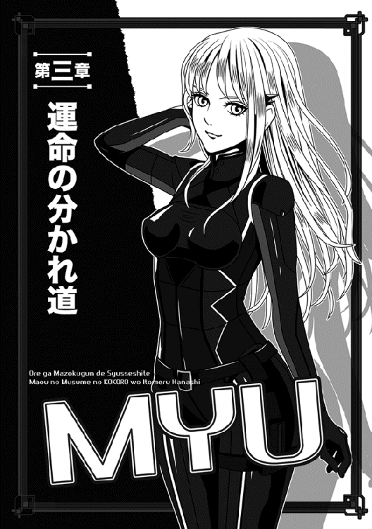
途端に、エルザが大きく息を吸い込んだ。
完全に図星を衝かれた顔で俺を見返す。て......おいおいっ、マジで狙いはあのお方かよっ。
「この通り、頼むよ！ 教えてくれっ」
この世界では通じないかもしれないが、俺は立ったまま両手を合わせてエルザを拝む。
......多少なりとも効果はあったらしい。というのも、悩ましそうに考えた後、エルザはためらいを捨てたような顔で俺を見たからだ。
「いいわ！ ナオヤには借りもあるし、話してあげる......でも、今からじゃどうにもならないかもしれないわよ？」
「それでもいい！ 教えてくれっ」
「あたしも、死ぬ直前のギルから聞いただけなんだけど──」
断りを入れた後、エルザは（俺にとっての）聞き捨てならない話を教えてくれた。
「殺されたギルって、帝国ではたまにちょっと顔を合わせる程度の仲間なの。二人とも間諜の任務が多かったし、当然、お互いが今どんな任務に就いてるのかは、全然知らなかったわ。でも、こうして二人とも捕虜──あたしは奴隷にされたけど──として捕まったせいかしら？ さっきはあいつ、思わず口が滑ったらしいわね。彼が同行していた部隊は、魔王の一人娘......つまり、ダークプリンセスの暗殺が任務だって言ってた」
悪い意味で予感が当たり、俺は愕然とした。
そうでないといいと思ってたのに、モロに予想通りだったとは!?
ギリアムにダヤン、それにヨルンなどは予想すらもしてなかったらしく、三名揃ってぶったまげた様子で口を開けていた。
「ダークプリンセスが狙いだと!? 我々が狙いではなかったのか！」
真っ先に我に返ったのはギリアムで、それこそ口角泡を飛ばす勢いでエルザに突っかかったほどだ。
「しかしっ、あのお方の部隊は魔王陛下の部隊から目を逸らす囮だと聞くぞ。当然、前線付近までは移動しても、基本的に魔界領内を出ることはない。数も我らの五倍近いそうだ。小規模な軍勢で襲っても、返り討ちに遭うだけのはずではないか！」
「し、知らないわよぅ、あたし。魔界内に侵入した部隊が、あんた達の予想より多かったんじゃないの？」
エルザは目の色が変わったギリアム達に、たじたじとなっていた。
「詳しく訊こうかなと思ったところへ、貴方が見回りに来ちゃったし」
──全くだぜ！
とエルザに賛成したいところだが、さすがの俺にもそんな余裕はなかった。
「それじゃ、どうやってマヤ様を暗殺するかとか、そこまでは聞いてないわけ？ 他に、具体的な襲撃日時とかその辺りの情報は？」
「ごめん......あたしが聞いたのは、本当に『襲撃する計画がある』ってトコだけ。なんだか、『かなり時間をかけた計画なんだ』とも言ってたけど」
「そうか」
俺は嘆息し、故郷と違って星がやたら多い夜空を眺めた。
こりゃ......早速、決断する必要があるみたいだな。
○────○
十分に予想できたことだが、俺が「今から俺だけでも救援に行く」と告げた時、皆の反応はよろしくなかった。
エルザ以外のメンツが陣地の外れに集まり、臨時の作戦会議を持ったわけだが、もうギリアムもヨルンもダヤンも、見事なまでにきっぱり反対してくれた。
まずギリアムが「お一人で、今から救援に向かうですと!?」と素っ頓狂な声を上げれば、ヨルンも「もう間に合わないだろう？」と疑わしそうに告げるし、トドメにダヤンが「命令違反は重罪ですぞ」とやたらと心配そうに言った。
「そう、一番の問題はそこだ」
ギリアムが得たりとばかりにダヤンを指差す。
「ナオヤ様は、既にダークプリンセスより砦攻略の任務を受けている、今ここでその任務を投げ出すのは、重大な命令違反となってしまう」
「えー......それなりに理由があっても？」
立ったまま不景気な面を突き合わせる彼らに、俺がおそるおそる尋ねる。
皆、悲壮な顔で首を振ってくれた。
「ナオヤは出自が異世界だから、まだ魔界の掟がよくわかってないみたいだな」
ヨルンが、逆立った黄色い頭をかきかき、補足説明してくれた。
「魔界じゃ、上の言うことは絶対なんだ。自儘に動くとかあり得ないし、命令違反なんぞしようもんなら、コレもんだぜぇ？」
自分の首を縄でキュッと締める真似をする。
......笑えないんで、その白目剥いてる死んだ真似、やめてくれ。
「ヨルンの言う通りですし、実際はそれより遥かに厳しいかもしれません」
元監督官のダヤンまで熱心に説得してくれた。
「コトは複雑で、仮に命令違反を犯してダークプリンセスがそれを許したとしても、魔界の法が掟破りを許さないのです......魔王陛下の定めた法では、命令無視はいかなる理由があろうと死罪ということになっています」
「うええっ」
俺は思わず、声を上げたね......ああ、上げたとも！
かっこわるいとか言ってる場合じゃない。まさか、そこまで厳しいとは思ってもみなかった！
「しかしっ。エルザの情報を聞いた後で、知らん顔なんてできないって」
「使いを出せばどうでしょう？」
ギリアムが切々と説く。
「ダークプリンセスはもう帝都マヤを出立しているでしょうから、想定される行軍ルートに向けて、使者を出すのです。それで、責任を果たしたことになるのでは？」
「それが普通の対応だよな」
気安くヨルンが頷いた。
「第一、仮にその死んだ捕虜がエルザに語った襲撃話とやらが本当だとして、奇蹟的にナオヤの救援が間に合ったとしてもだ──言っちゃ悪いが、一人で何ができる？ どうしても駆けつけたいなら、俺達も一緒に行くしかないぞ」
俺は意外な思いで、ヨルンの軽薄そうな顔を眺めた。
いや、他の二人もはっとしたように奴に注目していた。
「......俺に同行したら、みんなにも罪が及ぶんじゃないのか？」
「まあ、そりゃな」
うわ、あっさりと認めやがった。
「しかし、俺はどのみちおまえのお陰で、生涯奴隷の身から浮かび上がれたんだ。こんな時くらいは命を賭けないとな......へへっ」
おいおい、そんなに見るなよな？ 的な照れくさそうな目でヨルンが見返す。
俺の中で、ヨルンの株が急上昇した瞬間である。
「そうですね、どうしてもという場合、我々も同行する他はありますまい」
「うむ。縛り首になるのも首を刎ねられるのも、みんな一緒だ」
うわっ、ギリアムとダヤンまで、気安くそんなことを。
泡を食った俺は、慌てて手を振った。おまえら、熱血アニメの見過ぎじゃないのか!?
「ま、待て待て、待てっ。そもそもこの軍勢のほとんどは歩兵なんだ。駆けつけたって、どうせ間に合わないって」
「そりゃ、奴隷達の話だろ。俺達なら間に合う可能性はあるさ」
ヨルンが素早く言い返す。
「俺とギリアムとダヤン......この三人は二等戦士だし、一応は奴隷を指揮する騎兵ってことになってるからな。最初から馬に乗ってるじゃん？」
「そうだ、我々なら間に合うかもしれない」
最初は止めに回ってたギリアムも、今やすっかり乗り気である。
こいつら、自分の命が賭かってんのがわかってるのか。ボッチな俺と違って、ギリアムなんて家族もいそうなのにさ。
「みんな、冷静になれって」
俺は加速度的に熱気が増していく軍議を、打ち切ることにした。
今は何を言っても駄目っぽいから。
「とにかく、もうすぐ朝になる。それからもう一度集まろう......今はみんな、疲れて冷静な判断もできてない気がするんだ」
三人とも不思議そうに俺を見たが、特に異論はでなかった。
まあ、あんたがそう言うならと思ったのか、それぞれ自分の寝所に散っていく。
篝火も幾つか消され、自然と陣地は元の静けさを取り戻した。
俺も自分の場所に戻って寝転がったが、少しだけ寝た振りをして様子を窺った後──機を見てこっそり起き上がった。
簡単な書き置きのみを残し、すぐに自分の馬を繋いである場所まで行く。
そう、どのみち俺の心は決まってたんだな......ただ、他人を巻き込むのがご免なだけで。
だがしかし......なぜか馬を繋いだ場所には、例のぴっちりスーツ姿のミュウが待っていた。
（彼女は逃げるおそれが皆無だと思ってるんで、俺は他の奴隷と違って自由にさせてたのだ）
「行くんですか？」
切れ長の瞳を見張って、静かに訊く。
「......どこへ？」
すっとぼけると、なぜかくすっと笑われた。
「お忘れですか？ 私がヒューマノイドだということを。人間の耳より遥かに聴力は上です。さっきの軍議の内容も、全て聞こえてました」
「そうか、なら隠しても無駄だな」
俺は肩をすくめて苦笑する。
ここで言い争いは厳禁だ。人が集まってくるおそれもあるしな。
だから俺は、あっさり認めた。
「うん、行くよ。みんなには悪いが、巻き添えを作るのもご免だし、一人で行くつもりだ」
最後の部分を特に強調する。
「私も同行します......戦力になる自信がありますし」
「そうだろうなぁ」
なんせ本人曰く、「戦闘用のヒューマノイド」らしいしな。
俺が口を開けた途端、ミュウは小声ながらきっぱりと言った。
「言い争うのはやめましょう。私は何としてもマスターについていくつもりですし、そのためなら手段を選びません。拒否すると言われるなら、大声で叫び、全軍を叩き起こします」
「うわっ、ミュウってそんなキャラだっけか」
俺は困り果て、彫刻のような美貌を誇る彼女を見返す。
「まだ馬に乗り慣れてないんだよ。......後ろに人を乗せて駆け足とか無理ゲーすぎる」
仕方ないので、正直に告げた。白状したくなかったのにさ。
ところが、ミュウはまた微笑して首を振った。
「ご安心ください......私の足は馬より速いですわ」
特に自慢そうな様子はなく、さらりと言ってのける。
同時に浮かべた微笑に、俺は状況も忘れて少し見とれてしまった。
結局、俺はミュウの提案を受け入れることにした。
......つーか、他に方法もなさそうだし。それに万一、後で魔王陛下からおとがめを受けそうな時は、全て自分が引っ被ればいいかとも思ったわけで。
それにしても、ミュウは予想以上に凄い女の子だった。
数時間ほど走って観察した結果、彼女は映画のターミネーターより性能は上だと思ったね。
なんせ、必死こいて馬を駆けさせている俺の横を、美しい前傾姿勢で併走しつつ、平然と息も切らさない。おまけに走ってるお陰で微妙に胸が揺れて、密かな目の保養にもなるときた！
というか、むしろ騎乗してる俺の方が息が上がって来ちまった。
......馬に乗り慣れてないと、長時間走らせるだけでもかなり疲れるんだよ。
「こ、こりゃヤバいな......マヤ様を見つける前に、俺と馬の方がヘバりそうだ。まあ、あのお方はそう簡単に敵にやられたりしないだろうけど」
「ご心配なく」
白銀の髪をなびかせて走りつつ、ミュウが冷静に言う。
「馬が走れなくなった時は、私がマスターを背負って差し上げます」
「うわぁ......それはそれで誘惑に駆られるな」
軽口を叩きつつ、ようやく明るくなってきた夜空を見上げる。
「多分、俺達の直後に帝都を出たマヤ様達とは、元々そんなに離れてない──と思うんだが」
問題は、ＧＰＳも携帯電話もないこの世界で、どうやってあのお方を見つけるかだ。
軍勢と一緒だからそりゃ目立つはずだが、この国境付近の荒涼たる景色が続く辺りは、それこそどこまで馬で駆けても、景色が全く変わらないのだ。
行けども行けども道なき石ころだらけの原野で、本当に進んでいるのか怪しくなってくるほどだ。
「それもご心配なく......集団で固まっているのなら、おそらく接近すれば私が見つけられると思います。熱源探知に引っかかりますから。北方にいるのが確かなら、迷う気遣いもないでしょう」
「おおっ、何という......頼もしい言葉！」
息を切らせつつも、俺は激賞する。
「めちゃくちゃ有能だな、ミュウっ。ボッチの俺には過ぎた相棒だ」
「......ボッチ？」
器用にも走りながら尋ねるミュウに、俺はあっさり白状することにした。
他の奴はともかく、この子にはなぜか素直に打ち明けることができたんだ。
「実は俺、元の世界では学校内のクラスで無茶苦茶孤立しててね。おまけに、両親はもう離婚しちまったし、親父は出張また出張で、実家には俺をゴミ呼ばわりする継母しかいない。あの召喚術は、住んでた世界に嫌気が差した奴を呼び寄せるらしいけど、まさに俺なんか典型だろうな。こっちでも散々ひどい目に遭ったし、何度も死にかけてるけど、それでも元の世界に帰りたいとは思わない。同じ地獄でも自分が必要とされる分、まだこっちの方が遥かにマシだ」
「そう......ですか。一度も戻りたいと仰いませんから、奇妙だとは思いましたけど」
ヒューマノイドのくせに、ミュウの声音は同情に満ちていた。
愚痴を言ったみたいで気が引けたが......それにしてもこの子、信じられんくらい人間臭いな。
ていうか、待てよ？
「あのさー......もしかして、ミュウも元の世界で嫌なことがあったんじゃないか？ でなきゃ、こっちに飛ばされてないはずだしな」
ちらりとこちらを見たけど、ミュウはすぐに答えなかった。
猛スピードで走りつつも、憂い顔で俯いている。
「いや、別に言いたくなきゃ言わなくてもいいよ。今はそんな場合でもない──」
「元のマスターが」
「え、うんうん？」
そろそろ尻が痛くなってきた俺は、慌てて意識を集中した。
マヤ様のことも気になるけど、ミュウのことも気になる。
相変わらずこちらを見ないまま、ミュウは早口で一気に言った。
「私は戦士として生み出されたはずなのに、政府高官が私を引き取り、ご自分の専用ボディーガードとしたのです。それでその......その方がひどく変わった方で、サイボーグですらない生身の人間なのにその......私に......その」
段々声がか細くなって、消えてしまった。
俺は嫌な予感がして、自分がヘバりかけているのを一瞬忘れた。まさか、知り合って間もないミュウのことで、ここまで腹が立つとは予想外だったが、実際にむかついたのだから仕方ない。
「......もしかしてその偉いさんとやらは、ミュウを押し倒そうとした？」
ぼっと凄い勢いで真っ赤になり、ミュウは唐突にその場で立ち止まった。
慌てて俺も馬を止める。それだけでも苦労したが、なんとか止めると、馬を降りて彼女に駆け寄った。
「あ......すいません、止まってしまって」
「いや、こっちこそくだらない質問してごめん」
ぎこちなく謝る。
こういう時こそ、普段のコミュ能力が出る。ホント、俺は途方に暮れるばかりである。
「──実際は、あの」
地面を眺めていると、ふいにミュウが言った。
「うん？」
「実際は、押し倒される前に逃げてきたんです。胸やお尻を軽く触られたりして、納入三日後にもう嫌になっていて、そのままシティにあったマスターの自宅から逃げてしまいました。こちらへ飛ばされたのは、シティの片隅でどうしようか途方に暮れていた時なんです」
そこで言葉を切り、恥ずかしそうに付け加える。
「──わ、私は全く新しい試作品で、倫理回路や感情表現が、他のヒューマノイドより格段に向上してるんです。そのせいで、以前のマスターについて行けなくなったのかもしれません。普通なら、ヒューマノイドが嫌がるようなことじゃないと聞きます」
「な、なるほど......」
ミュウはもちろんのこと、そのセクハラマスターの気持ちもわかる気がするが（俺だって触りたいよ！）、もちろん昨日今日生まれたわけじゃないので、そんな阿呆なことは言わない。
「でも、そりゃミュウの気持ちを考えりゃわかるかな......少なくとも我慢して残ってた方がいいとはとても言えない」
馬の方に戻りつつ、俺は肩をすくめる。
というか、個人的にもミュウが押し倒される前で幸いだった。むちゃくちゃほっとした。
「そんなわけで......私は正直、どうしても元の世界に帰りたいわけじゃありません。当初は、とりあえずは戻ろうと思ってましたけど──今は、この世界でマスターにお仕えする方が自分の能力を活かせる気がします」
そりゃ未来永劫、エロ方面のことはお断りって意味だろうか？
なぜか微かな不安が芽生えたりして、俺もたいがい勝手な奴だよな......まあ、ミュウみたいな子がそばにいて、心騒がない方がおかしいんだけど。
今だって夜明け前で薄暗いのを良いことに、ぴっちりスーツのミュウの身体をチラチラ見てるしな──そりゃ、リアルオリエント工業（感情アリ）の子がいたら、見ずにはいられるかって。
などと考えているのを誤魔化すように、俺は前から思ってたことを口にする。
「あのさ、そのマスターって呼び方、やめてくれると嬉しいんだけどな」
ミュウは真っ青な瞳を大きく見開いて俺を見たが、ゆっくりと微笑して小首を傾げた。
「では......ナオヤさん......ではいかがですか？」
「う、うわぁ」
背中がぞくぞくきた。
ミュウが無機質なしゃべり方をやめて優しい声音で話すと、むちゃくちゃインパクトあるな。俺なんかあっさり陥落しそうだ！
「あの......さすがに馴れ馴れしいですか？」
不安そうなミュウに訊かれ、俺は勢いよく首を振る。
「いや、それでいいよ、それで！ その呼び方、最高!!」
元の黒馬にまたがりつつ、断言する。
そこでさすがに気が差して、頭を切り換えた。
いくら、「まあマヤ様がそう簡単にやられるわけないだろ」と思ってはいても、万一ってこともある。緩んでる場合じゃないのである。
......つか、むしろあのお方が全然無事だった場合、その後の俺の処遇の方がヤバいんだけど。
命令無視に関する魔界の原則を思い出し、俺は危うくブルっちまいそうになった。今から引き返したらまだ間に合うかな、みたいな。
もちろん、そんなことは絶対にしないけど。
どれほど可能性が少なかろうと、マヤ様の安全を第一に考えるべきだろう。
「それじゃ、先を急ごうか、ミュウ」
「はい、ナオヤさん！」
うわぁ......なんか当分、ミュウに呼ばれる度に腰砕けになりそうだ。
なおしばらく走り続け、俺達はとうとう、マヤ様の部隊を見つけた。
......いや、正確には「マヤ様が指揮していたはずの部隊の痕跡」と言うべきなんだろうな。
実のところ、俺はこの瞬間に至るまで、頭のどこかで「さすがにまだ大丈夫だろう」と思っていた。
自分の危惧は少し早すぎる心配かもしれないし、最悪でも襲撃の瞬間には間に合うはずだ──ってさ。だって、大抵のアニメとかゲームじゃ、そういう流れだし。
しかし、俺は甘かった......ああ、一番真剣に考えていた俺にしてからが、もう全く考えが甘かったのだ。
──馬を降りた俺とミュウの眼前に、延々と死体の群れが散らばっている。
奴隷も兵士も馬も一緒くたになって、それこそ血みどろで転がっていた。襲撃は......既に起きた後だったのだ。
俺は、間に合わなかったらしい......。
○────○
戦場は、もはや静まり返っていた。
なぜか奴隷の死体はやや少ないが、二等戦士以上の指揮官クラスは全員が倒れ伏しているように見える。もしも、そのままミュウが声を掛けずにいたら、俺はいつまでもそこでボケッと立って、血の臭いが立ち籠める、死体だらけの荒野を眺めていただろう。
しかし、彼女が俺の肩を強く揺さぶったので、辛うじて我に返ることができた。
「ナオヤさん......ナオヤさん！」
「──っ！ あ、ああっ」
息を吹き返したように首を巡らせ、俺はミュウを見る。
彼女は痛ましそうな目をしてはいたが、少なくとも俺のように呆然とはしてなかった。連なる死体の少し先を指差し、「生存者がいますわ」と、きびきびした口調で教えてくれた。
......確かに、身動きしてる男が見える。
俺はやっと、「そうだ、まだマヤ様が死んだと決まったわけでもないな」と思い至り、慌てて駆け出した。普通、激戦直後の戦場でそんな真似をすると危険なのだが、その時の俺はそれすら忘れていた。
微かな呻き声を上げる兵士のそばに至り、しゃがみ込んで相手の手を取る。奴隷ではなく二等戦士で、俺も見覚えのある人だった。
ただ......怪我がひどい。
どう見ても二度ほど斬撃を受けたらしく、出血もシャレにならないし、死ぬのは時間の問題に思えた。
「しっかり！」
それでも俺は、声を励まして叫んだ、叫び続けた。
「俺の声が聞こえますかっ」
何度か耳元で大声を出したお陰か、彼はようやく薄目を開けて俺を見た......弱々しく目を瞬き、俺を認めて顔を歪めた。
「な、ナオヤか......どうしてここへ......おまえも裏切り者か？」
「はっ。なんの話です!? 俺は、敵の斥候を見つけて、慌てて駆けつけてきたんですよっ」
これで話が通じるとは到底思えなかったが、とにかく事実の断片を捲し立てる。
幸い、死に瀕してる彼はあっさり納得して長々と息を吐いた。
「そ、そうか......なら、謝るのはこっちの方だな......あのお方を守りきれなかった」
「何がありました!? あと、マヤ様はどこですっ」
急速に表情を失っていく彼を見て、俺はこの二等戦士が死にかけているのを実感した。多分、もう痛みも感じてないはずだ。
だから、無理にしゃべらせるのは酷なのだが......あえて遠慮せずに叫んだ。
「聞こえますかっ、まだ話せますか！」
「あ、ああ......連れてきた奴隷の中に......大勢、敵の間諜が混じってたんだ......よ」
ますます小声になり、俺は必死で彼の口元に耳を寄せる。
「敵と呼応して、奴隷達が反乱を起こした？ そういうことですか？」
だから、奴隷の死体は少ないわけかっ。
「そ、そうだ......夜襲をかけた敵の数も多かった......寝静まってた俺達は......すっかり不意を衝かれて......ダークプリンセスは......」
そこから先は聞こえなかった。
俺が改めて顔を上げた時には、もう彼の呼吸は止まっていた。
頭がぐるぐるしていたが、俺は真っ先にミュウを振り向いた。
「ミュウ、最後の部分、聞こえた？」
「はい」
頼もしく頷いてくれたミュウを、これほど心強く思ったことはない。
「ダークプリンセスは連れて行かれた──彼は最後にそう言いました」
「そうか！」
微かな希望が出てきて、俺は大きく頷く。
最後に無理やり聞き出した彼には悪いが、少なくともこれからの目標はできた。お返しすらできないものの、一応、死んだ二等戦士の両腕を組んで目を閉じさせてあげた。
とはいえ......立ち上がって周りを見渡した時には、暗い気分になったけどな。
この一年で戦場は見慣れたとはいえ、こりゃ悲惨すぎる現場だ。
多分、寝込みを襲われたのが大きいんだろう。ほとんどの兵士は武装すらしてなくて、横になった時の簡素な衣服のままで血塗れになっている。奴隷はもちろん、彼らを指揮する二等戦士や上等戦士は、例外なく複数回は斬りつけられているようだ。
「生存者を探してやりたいが......仮にいたとしても、俺にはどうもできないな」
しばらく考え、俺は小声で呟いた。
これからマヤ様を探しに行かなければいけないし、生存者がいたとしてもどうにもならない。せいぜいミュウに運んでもらうしか──。
そう思いかけた時、そのミュウが静かに首を振った。
「呼吸している人がいれば、私には人間かどうかを問わず、判別可能です。......今の方が唯一の生存者だったようです」
──どうやら敵は、トドメを刺してまわったらしく。
最後にミュウは、そんなセリフを付け加えた。
「そうか」
俺は一言だけ返し、周囲を確認した。
もちろんショックは受けてるが、落ち込むのも泣き言洩らすのも全部後だ、後。
今は何としても、その襲撃部隊に国境を越える前に追いつく必要がある。
「幸か不幸か、放置されたままの馬が何頭かいる。こっちの馬は疲れ切ってるから、乗り換えて追いかけるつもりだけど──」
ミュウはどうする？
そう尋ねる前に、彼女はきっぱりと言ってのけた。
「ご一緒します、ナオヤさん」
......こういう時、相手のことを考えて断るべきなんだろうが、今の俺にそこまでの余裕はなかった。実際、一人じゃどうにもならない気がしたし。
だから俺は、ただミュウの手を握って心から礼を述べた。
「ありがとう。......正直、助かるよ」
敵を追うのはいいとして、問題は方角である。
しゃらくさいことに、戦場からは結構な数の足跡が北へ向かって続いていて、普通はここで混乱するんだろうが──俺は即座に疑いを持った。
どうもそっちは、追撃の目を眩ますための陽動の気がする。その証拠に、馬の蹄の跡が一つもない。そのくせ、国境方面の西には、ばらばらと蹄の跡が残ってるしな。
人間の足跡が一つもないってのは、逆に怪しいんじゃないか？ こりゃ多分、陽動部隊を犠牲にして、生き残りの騎兵だけで急いで魔界を脱出しようとしてるに決まってる。
そりゃマヤ様を虜にしてるなら、タラタラ行軍してる場合じゃないもんな。
一刻も早く逃げたいはずだ。
......問題は、絶対の確信まではないってトコだが、試しにミュウに俺の推理を話すと、彼女は即座に賛成してくれた。
「ここは国境に近いそうですから、ダークプリンセスを捕虜にした敵は、すぐにでも領外に脱出したいはずです。騎馬部隊のみで国境へ向かったというのは、正しい推理だと思います」
「ミュウもそう思うか？」
俺は頷き、大きく息を吸い込んだ。
「よしっ、そっちに賭けることにした！」
その瞬間、優柔不断な俺は珍しく即断した。
馬を飛ばせば、国境まで半日もかからないのだ。魔界から脱出されたら、もう手が出せなくなる。追いつきたいなら、迷ってる場合じゃない。
かくして、俺とミュウはまた馬と徒歩（というか疾走）に分かれ、敵の残党を追う追撃戦に入った。今までは北を目指していたが、今度は国境に向かって西へ急ぐことになる。
しばしばミュウが背後を振り向き、周囲を警戒してくれている（多分）ので、俺は一人で黙々と馬を駆ることに集中できた。
いつもは細かいことでも気になる俺だが、さすがに今は周囲に注意を払う気分じゃない。
そのうち、俺達は国境間近に広がるブラックリーフと魔界で呼ばれる森に入った。
......これは本当に地名そのままで、真っ黒で巨大な葉を持つ魔界の樹木、ブラックウッドが数キロに渡って群生している場所なのだ。
ごつごつした太い幹は灰色で、（森の名前ともなった）黒い葉っぱを持つ枝が、長く俺達の頭上にまで延びて陽光を遮っている。
......お陰で、陽が昇ったばかりだというのに、森を貫く街道はやたらと薄暗かった。
加えて、先を急ぐにつれて、点々と死体が転がっているのを見るようになった。
奇襲成功とはいえ、どうやら敵軍の被害も甚大だったらしく、行軍しているうちに怪我のひどい者から脱落している感じだ。
脱落というか、怪我がひどくて途中で死んじまって、そのまま落馬......死体は街道に置き去りというわけだ。
まあ、仲間の死体を放置してでも、急いで逃げたいのだろう。こりゃ、ますますこっちで間違いないな。
問題は、敵の数があとどのくらい残っているかだ。
捨て石に等しい陽動に、歩兵のほとんどを割いたわけだから......騎馬部隊だけならもう少数......だといいんだがな。
ひたすらそのことを考えていた俺に、ミュウが突然、警告を発した。
「ナオヤさん、速度を緩めてくださいっ」
「お、おおっ!?」
俺は慌てて手綱を引いた。
つっても、引きすぎると馬が怒って暴走しやがるので加減が難しいのだが、まぁ最初よりは上手くなったはずだ。時間はかかったが何とか速度を緩め、最後は停止させた。
「どうかした？」
「熱源探知に複数の反応があります。前方、七〇〇メートル！」
「敵の残党かっ」
「わかりませんが、私がこっそり接近して見てきます。しばらくお待ちを」
「......う」
いや、俺も行くぜいっ──と申し出るのは簡単だが、あいにく馬より速いミュウについてくなんて無理である。心配は心配だが、まあ彼女のことだ、大丈夫だろう。
「わかった。じゃあ、ここで待つから偵察頼む。......くれぐれも偵察だけだよ？ 一人で特攻とかしちゃ駄目だから」
「もちろんです」
走り出そうとしたミュウを、俺は鞍から飛び降りて止めた。
いやホント、女の子だけ偵察に行かせるって心配だしな。だから、か細い肩に手を置いて、念には念を押しておいた。
ていうか、うわぁ......なんかこのぴっちりスーツ越しだと、直に肌に触れてるような感触になっちまうのか!? こんな時になんだが、いろんな意味でたまらん。
「ぜ、絶対だからな？ 俺は、マヤ様を助けるためにミュウを犠牲にする気はないんだ。だから様子がわかったら必ず戻ってきてくれ」
くそ、動揺してドモっちまっただろっ。
「......心配してくださるのですか、人間でもない私を」
綺麗な碧眼を見開き、じっと見つめられた。しかも、肩においた手にそっと白い手を重ねられてくる。
なんという柔らかい手！ おまけに指が細長くて神々しいほど良い形だし......あと少し目線を下げれば、スーツの胸は突起が微かに窺える。しかもこのスーツの特性として、胸の形がかなり詳細にわかっちまうのだな。絶対この子、ブラとかしてないぞ、みたいな。
こんな時だってのに、心臓の鼓動が三倍速になってしまったじゃないか。
落ち着かない気分になり、思わず目を逸らす。マヤ様もそうだが、相手が美人過ぎるのも問題だ。自分との差を意識しまくるからな。
特にミュウは、神話の美少女女神かオリエント工業か、つーくらいの外見だし。
「俺、むしろそこら辺の普通の人間より、ミュウの方に重きを置いてるんで。だから、俺のためにも戻ってきてくれ」
ぶっきらぼうに、しかし完全な本音で言うと、ミュウはそっと俺を抱き締めてくれた。いや、一瞬、頬と頬が触れ合った程度なんで、もしかしたら俺の妄想だったかもしれないが。
「ご心配なく。偵察のみで、ちゃんと戻ってきます......ナオヤさんのためにも、ですね？」
「そ、そうだよ、うん。その通り」
俺の返事を待たず、微かな風を残してミュウは走り去った。
相変わらず、足音もろくに立てないくせに速いこと速いこと！
「やれやれ」
身体の線だけ見るなら全裸に等しいような完璧少女と話すのは、（嬉しいものの）精神的にすげー疲れる。
そもそも元の世界じゃ、俺はクラスメイトの女子と会話なんて皆無だったからな。
休憩もかねて、その場にへたり込みかけたが......ところがそうは問屋が下ろさなかった。
「......なんだ!?」
眉根を寄せ、俺は振り向く。
前方ではなく、なぜか俺達の来た方角......つまり、東の方角から微かな蹄の音がしたのだ。
しかも、こりゃ複数だぞっ。
俺は慌てて馬を道の端に寄せ、自分は森の中にささっと隠れた。上手くすれば、乗り手は途中の路上で死んでると思ってくれるかもしれないし。
もちろん、こりゃ敵なんだろうな、くそっ。
用心のために刀の柄に手を掛けて待つ。一分もしないうちに蹄の音が接近し、騎乗した三人の野郎どもが見えた。
......見えた途端、俺は脱力しちまったね。
ギリアムとヨルンとダヤンじゃないか！ しかもしかも......ギリアムの馬には、嫌そうな顔で相乗りする、エルザまでいたっ。
俺は蹴飛ばされたように道に飛び出し、両腕を広げて止めた。
「待て待て待てっ！」
「あ、いたいた、ナオヤがいたー」
逆立った黄色い髪のヨルンが脳天気に手を振りやがって、俺は目眩がしてきた。
「どうなってんだよ!?」
「ナオヤ様が夜明け前にいなくなっているのを見つけた直後、我々もすぐに後を追ったんですよ」
ダヤンは珍しく破顔して言った。
「なかなか追いつけませんでしたが、先程、この森に入るお二人を見つけまして......お陰様でなんとか追いついたんです」
「途中はともかく、少し前からは、既にお気付きかと思っていました」
追従して、ギリアムがなだめるように言う。
「この森に入ってから、頻繁にミュウが振り向いてましたからね。彼女はとうに我々を発見していたはずですが......？」
そうか、それでミュウはちらちら後ろを見てたのか！
俺は内心で嘆息する。多分、見つけたけど俺には報告しなかったんだろう。無論、しなかった理由もわかる。全ては俺のためを思ってに違いない。
いくらミュウがヒューマノイドとはいえ、二人で敵の残党に突っ込むのはヤバいもんな。考えてみりゃ、俺も少し冷静さを欠いていたかもしれない。
「......どうせ今から戻れって言っても、戻らないんだろうしなぁ」
「そりゃ戻らないさ。なんのために来たかわからないじゃん？」
俺の独白に、ヨルンの馬鹿が即答しやがった。
非難しようと口を開けたが──結局は、諦めて現状の説明をすることにした。考えてみりゃ、俺を見捨てずに追いかけてきてくれたんだし、怒るどころか土下座したいくらいだよな。
ただし、身振り手振りでこれまで見聞きしたことを話すうちに、予想通りみんなの顔はすこぶる真剣になっていったけど。
全部聞いた後、なぜか半部外者のエルザが呆れたように吐かす。
「それなら、なおのことみんなの力が必要じゃない。ナオヤ一人でどうするつもりだったの」
今はもう縛られてないが、その分、態度もデカくなってる気がするぞ。
「一人じゃないっ、ミュウもいる！ つか、なんでエルザまでいるんだよ」
ギリアムを見上げて尋ねたが、彼は苦笑して言った。
「我々が無理に連れてきたんじゃないですよ。この女奴隷がどうしてもナオヤ様の力になりたいと言うので──おまえもおまえだ、指揮官を呼び捨てにする奴があるか！」
最後はとってつけたような叱責だった。
「べ、べつに、ナオヤのためにどうとかって話じゃないわよっ」
あたふたと真っ赤になってエルザが言い訳する。
「助けてもらった借りがあるから、仕方なく来ただけだモンっ」
......あんたはいい年こいて、何をツンデレキャラみたいなセリフを吐いてんですか。おまけに、マントは羽織ってるものの、相変わらず例の下着みたいな格好だし。
もっと問い詰めたかったかったが、ちょうどそこで、ミュウが全力疾走で戻ってきた。
その速度にみんなたまげてたが、今更である。
無論、ミュウは追いついたギリアム達を見ても驚く様子はなく、「合流されたんですね」と頷くのみである。一応、申し訳なさそうな顔で俺の方を見たけど、俺も済んだことをグチグチ言う気はないので、ただ肩をすくめるにとどめた。
「......で、どうだった？」
「チャンスかもしれません。敵は仲間に怪我人がいるらしく、今は休憩中です」
「マジ？ 人数は!?」
いきなりの朗報に、俺の声も弾む。
「十五名です。重傷の一人は、どうやら敵軍の要人らしく、見捨てられないようですね。それと姿は見てませんが、ダークプリンセスが捕らえられていそうな馬車もありました」
俺達は顔を見合わせた。
これは......本気でチャンスだな。
もちろん俺は、即座に言った。
「よしっ。ここからは森の中を通って敵に接近する。今度は、俺達が奴らを奇襲するんだ！」
「ははっ」
「はっ」
「よっしゃあ！」
「まあ......うん」
「がんばりましょう！」
ギリアムをはじめ、ミュウに至るまで全員が声を合わせたが、見事なまでにバラバラの返事だった。まあ、ちぐはぐな混成軍に相応しいな。
ただ、士気がそれなりに高いことだけが救いだったけどさ。
○────○
皆でゴソゴソと森を進むこと、数百メートル......俺達は簡単に敵の残党を見つけた。
全員が下馬して、道の端に固まってへたり込み、それぞれ肩で息をしている。一人、上半身が包帯まみれの奴がいて、そいつを囲むようにして休憩してる感じだ。
馬にまじって二頭立ての馬車も停まってるが、ミュウの指摘通り、アレにマヤ様が閉じ込められているとみた。俺はブラックウッドの巨木の陰に留まると、口元に指を立てて振り返り、「静かにしろ」と合図する。一応の作戦は立てたので、あとは始めるだけだ。
ただ、ちょうど敵が会話を始めたので、盗み聞きしてみた。
「しかし、ダークプリンセスには参りましたな」
ブレスアーマーのみのおっさんが、汗まみれの顔を振る。
「まさかあれほどの化け物とは......ほとんど、彼女のせいで犠牲が増えたようなものです。敵の軍勢も必死だったし、砦に使いを出し、貴方にご足労願ったのは正解でしたな」
おっさんは、隣に足を投げ出して座す、偉丈夫に話しかける。
......砦だって？ なんか嫌な予感が。
俺は暗がりで眉をひそめた。
「いいさ。リングマジックのお陰で、俺も稼げたしな。......ただ、危なかったのも確かだろう」
問題の、一際目立つそいつが苦笑した。
俺と同じ黒髪に黒瞳の傭兵風の男だが、こいつだけは、なぜかあまり疲弊した様子ではない。
年齢は二十代半ばくらいか？ 日焼けした厳つい顔は傷だらけだし、いかにも歴戦の風格があるな。
『つか、リングマジックぅ？ なんだそれ』
俺が思わず首を傾げると、背後にいたヨルンが呆れた声で教えてくれた......同じく小声で。
『なんだ、まだ知らなかったのか？ 意味もなく、レベル表示とかあるわけないだろ。奴隷以外の兵士が填めたリングには、全てリングマジックってのがかかってんだよ。倒した相手の戦闘経験値を奪えるようになってる。俺達だって、今後は恩恵受けられるんだぜ？』
──ま、マジですかっ。
それで敵味方を問わず、リング填めてる奴が多いのか！ それ、なんてＲＰＧだよ!?
俺は、思わず叫びそうになったね。すると、マヤ様がモゴモゴ呟いてたアレがそうかっ。私室に呼び出された時のことを思い出し、俺は呆然とする。
しかし、そんな魔法があるなら、奴隷のうちにかけておいてくれよっ。
俺の不服そうな顔を見て察したのか、ヨルンがまた囁いてくれた。
『奴隷のうちは、リングマジックは付与ナシで、レベル表示だけさ。だってほら、奴隷があんまり強くなりすぎたら......支配する側がヤバいじゃん？』
お......おぉ、なるほど。いやしかし、納得いかない話だなっ。
俺は一人で歯噛みした。お陰で、だいぶ時間を無駄にした気がするぞ。
もっと愚痴りたかったが、例の戦士の話が続いてたので、やむなくそっちに集中した。
「──（途中聞こえず）手柄は途中で亡くなった魔法使いにあるさ。彼女が、隙をついてスリープの魔法であの方を眠らせなければ、今頃俺達の方が全滅してたかもしれない。感謝しないとな」
黒髪の偉丈夫は、のんびりと答える。
「その代わりあの魔法使いも、あのお方のとっさの反撃で殺られたけどな。眠らせるためだけに相打ちになっちまって、気の毒した」
「やっぱり、さっさと殺しておくべきだったんじゃないですか？」
怪我人の包帯を替えていたまだ年若い従者みたいな奴が、うんざりしたように述べた。
「命令は、捕虜として取るのが無理な場合に限り、殺してもやむなし......でしょ？ 今回は十分、その『やむなし』の場合だったと思うんですけど」
「命令を曲解し、暗殺が任務だと思っていた者が多いが、それは違うぞ」
最初に話しかけたおっさんが、きっぱりと述べた。
「なぜだか知らぬが、陛下はいたくあのダークプリンセスに関心をお持ちのようなのだ。死体を持ち帰ったら、我らは不興を買ったであろう。おまえもリグルス殿を見習って、あまり愚痴を言うものじゃない」
最後にそのおっさんは、一人だけ元気な偉丈夫を皮肉な目で見た。どうもこのおっさん、丁寧な口調の割に、実はリグルスとやらが嫌いらしい......て、ちょっと待てよ？
──おいおい、リグルスだとぉおお！
思い出した俺はその場で凝固したし、俺の背後に従っていた仲間も同じである。平然としていたのは、例によってミュウくらいだ。
リグルス......それは、俺達が攻略するはずだった国境の砦の守将であり、勇者と称えられるレイバーグの元仲間でもある。
くそっ、道理でただならぬ威圧感があると思ったぜ。
この襲撃部隊の奴ら、念を入れてリグルスに応援頼んでやがったのか！
『うわぁ......どうするよ、ナオヤ』
ヨルンの情けない囁き声が、背後からした。
『あの有名なレイバーグの盟友だぜぇ？』
『......仮にレイバーグ本人がいたって、やるしかないだろ。ここまで来て、このまますごすご引き返せるもんか』
もはや覚悟を決めた俺は即答した。
『──あの』
とそばまでにじり寄ってきたミュウが耳元で囁く。
『武器こそないですが、私なら』
『いや、あらかじめ決めた予定通り、運び役で頼むよ』
俺はきっぱりと首を振る。
『確か、レイバーグを初めとして、彼らの仲間は魔法を使える奴が多かったと聞く。リグルスも使えるかもしれない。ミュウはまだ知らないだろうけど、魔法だって飛び道具と同じくらい危険なんだ。......仮に電撃みたいなのを食らったら、さすがにミュウも安全とはいえないだろ？』
今のは大げさに言っただけで、実際はミュウなら何とかなるかもしれないとは思う。
しかし、やはりここは一番危険な役は俺が引き受けないとな。言い出しっぺなんだし。
リグルスの相手は俺がする！ 密かにそう決めていた。
『それは......確かに』
ミュウが不承不承納得してくれたところで、俺は仲間を振り返って囁いた。
『エルザ、本当にいいんだな？ 例の魔法はスタンバイ中か？』
有能な魔法使いなら、発動寸前で魔法を（一定時間までなら）待機させておけるのだ。
それを踏まえての質問である。
『うん』
エルザは暗がりで目を見張って頷いてくれた。
『大丈夫、今もスタンバイ中だから。殺されるトコだったのに、忠誠心なんかもうないわ』
『よしっ。ミュウも、馬車に誰かいるのは確実なんだろ？ なら後は俺達が暴れてる間に頼むから』
『わかりました』
『ヨルンとギリアム、それにダヤン！ 付き合わせて悪いが、俺と一緒に暴れまくる役を頼む。魔法で敵が混乱してる間に、どれだけ数を減らせるかで奇襲の正否が決まるからな』
『お任せください』
『全力を尽くします』
『わかったっ。もうやるしかないな！』
ギリアムとダヤンに続き、やや元気を取り戻したヨルンが囁く。
いよいよ襲撃の合図を出そうと手を上げた俺だが──そこで、リグルスのセリフに凍り付いた。
「しかし実は俺達も、いろんな意味でヤバいかもしれないな」
あいつが愉快そうに言って、ちらっと俺達がいる森の方を見た。
そう、偶然にしてはやたらと正確に、こっちが潜む辺りを見やがったのだ！
「捨て石の部隊まで使って敵の目を逸らそうとした俺達だが、まだ脱出が上手くいったと思うのは早計かもしれないぞ」
疲れたようにへたり込んでいた敵共は、そのセリフにぎょっとしたのか、一斉に彼を見た。
つか、俺が一番ぎょっとしたよ、くそったれっ。
「まさか！」
言われた年配のおっさんは、額の汗を拭き拭き、笑う。
味方の動揺を抑えるためか、声を張り上げた。
「もう国境までは半時間もありますまい。これまで敵の影もなかったですし、むしろ我々は魔族軍を警戒しすぎていたような気がしますよ。......ですがまあ、そろそろ出立しますか」
そこでさりげなく、怪我人についていた少年を見やる。
「どうだ、ラミエル殿は馬に乗れそうか？」
「......気絶していらっしゃいますから、無理ですよ」
「そうか。ならば仕方ない。彼女と相乗りになるが、馬車にお移りいただこう。なに、狭い場所でもないし、二人なら問題あるまい」
『ら、ラミエルって......敵軍の将軍の一人だぞ！』
ヨルンがまた驚いたように囁いた。
『あと、あのリグルスだよ。あいつ、俺達の方を見なかったか？』
『わかってる！』
俺は歯噛みして答えた。
暗がりからリグルス達敵兵士の反応をじっと観察したが......仮に俺達に気付いていたとしても、それはリグルスだけの気がする。他の奴らはまるでこちらに目もくれないからだ。
多少なりとも警戒していたなら、そもそも今までの会話は有り得ないだろう。
リグルスが知っていたとしても、なぜか教える気がないように見える。
もちろん気休めだし、どのみちリグルスの態度を無視していいわけはないが、あいにく俺達には他に選択肢がない。ここが最後のチャンスだろうから。
ここでみすみすマヤ様が連れて行かれるのを指をくわえて見送るか、それとも救出に賭けるかだ。今決断しないと、敵はもう動き出そうとしている。
『いずれにせよ、やるしかない。奇襲決行だ！』
考えた末、俺はきっぱりと言った。
『今の会話を聞く限り、馬車にマヤ様が乗っているのは間違いないだろう。エルザ、射程内だよな？』
『十分よ！』
『よし、ならやってくれっ』
『わかったわ！ 女の恨みは怖いことを教えてあげる。みんな、ちょっとだけ目を瞑っててっ』
エルザの警告と同時に、俺達は一斉に目を閉じた。
ここまでは予定通りだったが、なぜか最後の瞬間、俺のそばにいたミュウがあらぬ方を見て「あっ」と小さく声を上げた。
なぜだか気になったが......訊きたくても、もはや手遅れだった。
その瞬間、エルザが勢いよく立ち上がり、スタンバイ中だった魔法を奴らに放ったのだ。
「──思い知るといいのよっ。スーパーフラッシュ！」
目を閉じ、さらにその上から腕で覆っていてさえ、貫くような白い光が広がったのがわかった。
エルザの放った小さなボール状の光が、敵のど真ん中まで飛んで爆発したのである。ただし、この爆発は閃光のみで、特に殺傷能力はない......ないが、まともに見た奴は十数秒は何も見えなくなるだろう。
「ぐわああああっ」
「いやああっ」
「い、いてえっ」
敵陣から悲鳴の合唱が起きた。
俺は、光がまだ収まらないうちに木の陰から飛び出し、一直線に敵の小部隊めがけて突っ込んでいった。
ここ最近では久しぶりに腹の底から雄叫びを上げて。
「うあぁーーーーーーっ！」
「死ねやぁあああっ」
「我が家名にかけてっ！」
「エレンっ」
俺以下、ヨルンもギリアムもダヤンも、ほとんどヤケクソのような叫び声を上げていた。
周りから見ると、気でも違ったように見えたことだろう。ただ、少なくとも目を押さえてのたうち回っていた敵達は、面白いようにうろたえてくれた。
「なんだ、どうなってる!?」
「敵だ、敵の奇襲だぞっ」
「くそっ。俺の剣はどこだあっ」
「ぐああっ」
まずは右往左往していた一人の胸を刀で貫いて倒し、俺はさっと周囲を見た。
油断していただけに、目を覆わんばかりの敵の混乱ぶりだった。ただ、まだ眩い光が消えきっていない今、俺も敵の全てを確認できているわけじゃないのだ。
幸先の悪いことに、なぜかリグルスは、最初にいた場所にいなかった。
くそっ、どこへ行きやがった、あいつ!?
考える暇もなく、抜刀した俺は夢中で刀を振るった。
まずは、涙を流しつつも腰に手を掛けて立ったブレスアーマー姿のおっさんに飛びかかり、横殴りの斬撃を叩き込む。
喉を裂き、相手が仰け反るのを確認もせず、そのまま返す刀で横にいた従者らしい男の首筋を襲う。赤く光る刀身は狙い通りに首筋に吸い込まれ、半ば首が分断された男が頽れた。
瞬時に三人を屠ると、身を翻して馬車の方に駆け出し、手元に置いたままだった剣を探そうと手をまさぐっている奴を斬ってのける。
俺の背後では、他の敵兵の悲鳴も随分聞こえていた。ギリアム達ががんばってくれてるみたいだ。
この時、俺は既に返り血をだいぶ浴びていたが、気にしている余裕はなかった。
ここまでほとんど抵抗らしい抵抗に遭わなかったものの、まだろくに目も見えないだろうに、早くも武器を手に反撃してくる奴が増えてきたからだ。
大多数の敵はまだ地面で目を押さえてのたうち回っているが、熟練兵士の何名かは涙を流しつつも、すかさず反撃に移ろうとしている。
「ひ、卑怯なっ」
さっきのおっさんと同じく、頬を涙で濡らした敵兵が、顔を真っ赤にして襲いかかっていた。「女の子を拉致する奴らに言われたくないねっ」
こいつもあいにく、動揺が抜けきってない。渾身の力で振り下ろされた剣撃を、俺は身を捌いて楽に避け、逆に相手の胴を肩口から斬り下げる。いつ味わっても嫌な感触だが、魔力付与のこの刀のお陰で、いつもより全然力を必要としなかった。
エルザの魔法のお陰で造作なく敵兵を倒していったためか、俺の周囲が一時的にぽっかりと空白になっていた。
そこでちょうど、ミュウが馬車に取り付き、警護についていた兵士をあっさり持ち上げて地面に叩き付けたのが見えた。
俺は反射的にそちらへ目をやった。
敵にとって不幸なことに、ロボット法三原則などの枷は、ミュウには全く備わってないようだった。
ほっとした俺は、襲って来た次の敵兵と斬り結んだ──が。
次の瞬間、そのまま凍り付いた。
ミュウが馬車の扉を開けた途端、いきなり黒髪の女性が飛び出してきたのが見えたのだ。
「プリンセスだと思った!?」
喚くと、手にしたダガーでミュウを襲いやがった！
「残念でしたあっ」
いきなりでもあり、まともに彼女の胸に刺さった──ように見えた。
「ミュウっ」
思わず叫んだが、今の俺は駆け寄るどころではない。
「死ね！」
鍔迫り合いの最中だった敵兵が俺を死に物狂いで押し戻し、その場で剣を横薙ぎにしたのだ。
──くそっ。
「おまえこそ、邪魔だよっ」
完全に不意をつかれるところだったが、幸い、俺は上半身を反らしてギリギリで剣撃を避け、お返しに体勢の崩れた敵兵の胴を斬り下げた。骨を断つ嫌な感触がして、敵兵は悲鳴も上げずにその場に倒れる。
すぐに鮮血が大地を染めていった。
いつもは心を殺して何も考えないようにしてるが、今は気ばかり焦っている。
「ミュウっ」
もう一度彼女を呼んだ時、後退りしたミュウめがけ、潜んでいた女がさらにダガーで追撃しようとしていた。
「なによこいつっ。刃が通らないじゃない！」
ミュウは俺の方を一瞬だけ見て微笑み、そのまま彼女の腕を無造作に摑み、気安くぶん投げた。
「いやっ」
潜んでいた女は嘘みたいに軽々と滑空し、元いた馬車に叩き付けられ、ドアを粉々に破壊して中に飛び込んでいった。馬車が大揺れに揺れた。
......うわぁ、まっったく心配することなかったか。
じゃないっ──馬車にいないんだったら、本物のマヤ様はどこだ！
慌てて周囲を確認しようとしたが、ミュウの方が俺よりよほどしっかりしていた。
飛ぶような勢いで駆け出し、ちょうど乱戦の横を通り抜けようとした騎兵に向かってジャンプする。その騎兵も、ご多分に漏れずに頬を涙で濡らしていたが、なぜか乱戦には目もくれずに戦場から逃げだそうとしていた。
見れば、そいつの後ろに大きな荷物が二つ、ロープで左右に分けて積んである。
地味な色のでっかいトランク......みたいに見えるが......まさか！
「うわっ」
ミュウが飛びかかって体当たりしたお陰で、騎兵が馬上から跳ね飛ばされ、代わりにミュウが鞍に収まった。彼女はそのまま馬から降り、二つに分けた荷の片方を外し、中を改めた。
「いました！」
すぐに、俺の方に手を振った。
「すいません、エルザさんの魔法の前に、念のために熱源探知で他の場所も調べたんです。ここに反応があったのを見つけたんですけど......先に馬車をと」
な、なるほど......それで直前で呟いてたわけね。
しかし、敵はあの中に押し込めてやがったのかっ。魔王陛下の一人娘になんて扱いだ！ 義憤ではらわたが煮えくりかえったが、まあ奪還できたなら──。
「っ！ なんだ!?」
そこで俺は、背後にぞくりとする殺気を感じた。
素早く振り返った途端、嫌な光景を見て戦慄した。姿を消していたリグルスが、乱戦の隅っこにケロッとした顔で立っていたのだ。
しかも、ミュウの方を見て詠唱に入ってやがる！
「ヤバいっ。ミュウ、よけてくれっ」
「──ブルーサンダー！」
俺が怒鳴るのと、魔法の発動がほぼ同時だった。エルザの閃光魔法に匹敵する、眩い真っ青な雷光が目を灼く。
魔力の奔流とも言えるそれが、轟く雷鳴と衝撃波を伴ってミュウに押し寄せていく。
ホント、轟音で鼓膜が破れるかと思ったほどだ。
敵味方問わず、方々で驚きの声が上がり、一瞬、乱戦がやんだ。
「え？ きゃあっ」
ミュウがらしくもない悲鳴を上げて、寸前で伏せた。その直後、ぶっとい雷光がさっきまでミュウの頭があった場所を通過していった。
ぎ、ギリギリだった！
ミュウの代わりに背後の森で大爆発を起こしたが、寒気がするような破壊力だった。
「おのれえっ」
たまたまリグルスのそばにいたダヤンが遅れて気付き、剣を振りかざして奴に突っ込んでいった。俺はまずミュウに向かって「ミュウ、マヤ様を連れてここから脱出しろっ。後は予定通りだぞ！」と叫び、ダヤンの応援に駆け出す。視界の隅でミュウが要請通り、ぐったりしたマヤ様を胸に抱いて走り出すのが見えた。
お得意のとんでもないスピードで、見る見るこの戦場から離脱していく。
よしっ、もう大丈夫だろう──少なくともマヤ様は。
あとは、俺達が残党を片付けられるか、あるいはこの場から逃げられるかだ。他の奴はともかく、問題はあのリグルスだろうな。
「はははっ。延長戦の始まりだなあっ」
涙混じりでふらつく敵兵の中にあって、一人だけ元気満々でリグルスが叫ぶ。爛々と輝くその目は、今斬り合いの真っ最中のダヤンより、むしろ駆け寄る俺の方を向いていた。
そのくせ、ダヤンが次々に降らせる剣撃を、楽々と受けてやがる。逆にダヤンの方は、たまにリグルスが斬撃を繰り出すと、その度に浅い傷を負っていた。
あの野郎、もしかして遊んでやがるのか！
ギリアムとヨルンも二人の勝負に気付いてはいるが、あいにく彼らは彼らで、斬り合いの真っ最中である。
頼む、俺が駆けつけるまで、無事でいてくれ。
「くっ」
リグルスがよろめいた隙に、唇を引き結んだダヤンが、大きく長剣を振りかざした。
嫌な予感がした俺は走りながら、叫んだ。
「無理するな、ダヤン！ 今行くっ」
「もう遅いっ」
リグルスの叱声が響き、いきなり奴が怒濤の攻勢に出た。
身体と剣が一体化したような姿勢であり、輝く長剣が霞むような速さでダヤンを襲った。
「──っ！」
その瞬間が、まさにスローモーションのように見えた。
リグルスの剣が、狙い違わずダヤンの胸に吸い込まれていくのを、俺は絶望的な気分で眺めていた。
「ダヤン!!」
思わず叫んだ。
ダヤンが......あの歴戦の二等戦士が、無残に胸を貫かれている。力を失った右手から、刃こぼれした長剣が落ちた。
「か......は......」
「まずは一人目だな」
あっさりとそう吐かし、リグルスが剣を引く。
ダヤンは壊れた人形のようにがくっと両膝をつき、そのまま横倒しに倒れた。まだ生きてはいるが......致命傷のように見える。
俺は激怒して、最後の数メートルを駆け抜けようとした。
リグルスは凄惨な笑みを浮かべて待ち構えている。
ところがそこで、思わぬ叫び声がした。
「ナオヤ、避けてえっ」
森に潜んでいたはずのエルザの声だとわかった途端、俺は反射的に横っ跳びに跳んでいた。
直後に、再びエルザの叱声が響く。
「行くわよっ、フレイムアロー！」
言下に、文字通りの火炎の矢が俺の脇を通過し、リグルスを襲った。
しかし、大男はほぼ同時に長剣を振り上げると、「俺のは特別製の魔法剣だぜ、嬢ちゃんっ」と朗らかに喚き、大きく刃を振り切る。
「クレッセントブレイドっ」
途端に、三日月型をした光の固まりが剣から飛び出し、途上にあった炎の矢を迎撃した。そのままあっさりと魔力を粉砕し、炎を散らしてしまう。
そして突破した光の刃はそのまま森へと──。
「伏せろ、エルザあっ」
気付いた俺は振り向いて怒鳴った。
「──え、ええっ!?」
これもギリギリだった。
エルザが頭を下げた途端、光の刃が彼女の頭上を通過し、背後のブラックウッドをあっさり両断した。
少量とはいえ、彼女の黒い髪が舞うのがはっきり見えた。
「う、うそ......なんて威力っ」
傾いで倒れた巨木を見て、頭を押さえたエルザが青くなっていた。
「エルザ、こいつは俺に任せて、ダヤンの治療を頼む！」
俺は振り向きもせず、怒鳴った。
ダヤン達の活躍もあって、既に戦場で動く者は俺達とリグルス、それにギリアムとヨルンの相手をしている奴らだけになっている。他の生き残りは、気絶した女戦士やら重傷を負った騎士やらばかりだった。
ただ、ギリアム達はそれぞれ優勢に斬り合いを演じていて、不覚を取る可能性は少なそうだ。
......問題はこの俺だろう。
油断なくリグルスを見やり、俺はこいつがさっきみたいに思わぬ攻撃に出ないよう、警戒していた。
「おまえ達のお陰で、今後がだいぶ楽になった......そこは感謝しないとな」
リグルスはすぐに斬りかからず、目を細めて言った。
奔放に伸びた黒髪を吹き荒ぶ風になびかせ、だらりと魔剣を下げて構えを解いていた。そのくせ、全く隙を見つけられない。
「どういう意味だ!?」
やむなく俺は、会話に応じる振りをした。
事実、興味もあったしな。
こいつは明らかに俺達の奇襲を察知していた。なのに味方にそれを教えなかったのは、それなりに理由がありそうだ。
「どうもこうも......俺達も立場はおまえと似たものでな。一緒にいるからって、何も周りが味方とは限らんぜ。奴らは──」
とリグルスは冷たい目で倒れ伏した元味方達を眺める。
「俺達をいいようにこき使うことしか考えてやがらねぇ」
俺にしか聞こえないような声で言う。
「俺達？ もしかして、他の仲間──勇者と称えられるレイバーグや元仲間のことか？ まさかおまえ、俺のことを知ってるのか!?」
「顔は初めて見たが、名前を呼ばれるのを聞いてわかった。ナオヤなんて名前、滅多に聞かねぇからな。魔王が見境なしに召喚した戦士の中に、しぶとく肉の盾から生き残った奴がいりゃ、そりゃ話題にもなるさ。ほとんどはすぐに死んじまうからなぁ。魔界には間諜が大勢紛れ込んでるし、もう帝国側じゃ知る人ぞ知る情報だろうよ」
「へぇ？ 俺、魔界じゃ全然目立たないと思ってたのに、敵側でそんなに有名だったとはね。まさか、おまえ達も異世界人だとか？」
俺は刀を正眼に構え、じりじりと間合いを詰めていく。
未だに隙が見い出せないが、いつまでも睨み合いを続ける気はない。まだ戦ってるギリアム達や苦しむダヤンのためにも、なるべく早く片を付けたいのにっ。
「いやぁ、俺は違うさ......ははっ」
人の気も知らず、リグルスは陽気に笑った。
「しかし、レイバーグはよその世界から来たって点じゃ、おまえと共通する。あいつはすげーぜ。さすがの俺も、あいつだけは敵に回したくないね」
「おまえを見る限り、レイバーグってのもあんまり友達になりたいタイプじゃなさそうだ」
まあどのみち、俺には友達いないけどな──という部分は言わずにおく。
「いやいや、あいつはまっすぐな奴だよ......だいぶ堅苦しいけどな。俺が闇なら、あいつは光だろう。奴に惹かれるのも、俺にないものを持っているからなんだろうな」
リグルスは、憧れのスターを語る子供みたいに目を輝かせた。
「だからこそ、俺はただの流れ者だったレイバーグがどこまで上れるか、ぜひこの目で見てぇ。俺ぁ出世なんぞに興味ねーが、あいつの行く末は見届けたいと思う。......だから、その邪魔をする奴は許せんのさ」
またざっと死体だらけの戦場を眺め、リグルスは唇を歪める。
釣られて目をやり、俺はやっと気付いた......包帯だらけの怪我人が一人いたが、そいつの目が茫洋と空を眺めている。それもそのはずで、いつの間にか喉を裂かれて死んでいた。
あれは確か......ラミエルとかいう将軍だとヨルンが言ってたはずだ。
「おまえ、まさか──」
「なあ、小僧。おまえは知ってるか？」
リグルスが露骨に俺のセリフを遮った。
「なぜ、魔王が闇雲に召喚術なんぞ使って、人を集めているかをさ」
「......兵力不足だからだろうよ」
俺は上の空で答えた。
「はははっ。そりゃ妙な話じゃねーか？」
リグルスは笑いつつも真面目な顔で俺を見返した。
「素人をいきなり戦場に放り込んでも、そのほとんどは長く保ちゃしねー。生存率を見りゃ、簡単にわかるだろ。それこそ、いわゆる無駄な努力で、肉の盾としても機能してないぜ。おめーは、魔王が本当にそんな理由で召喚してると思ってんのか？」
もっともな話である。
こいつがダヤンを斬る前なら、もう少し真剣に聞いたかもしれない。
「今はどうでもいいね」
多分、今の俺は凄惨な笑みを浮かべていることだろう。
神経は張り詰めているが、少なくとも緊張してはいない。俺は元々、口では死にたくないと連呼しつつ、実はいつ死んでも構わない思いで戦ってきた気がする。
逆に──だからこそ、これまで生き延びて来られたのかもしれない。
戦場では、小狡く立ち回って生き延びようとする者から先に死んでいくのだ......少なくとも、俺が今まで参加した戦闘ではそうだった。
「今の俺にはっきりしてるのは、一つだけだ。貴様はダヤンを傷つけたっ。許せるもんか！」
最後は大声で喚き、リグルスに飛びかかった。
一瞬、敵の頭を割ることに成功したか──と思った。
しかし、甘かった。リグルスの姿が陽炎のように揺らぎ、俺が斬り下げたのが単なる残像だったと知れた。
途端に、手で触れそうなほど濃密な殺気を感じ取り、俺は冷や汗と共に飛び退く。リグルスの魔剣が危ういところで俺の脇腹を掠めた。
いや......どてっ腹にぴりっとした痛みを感じたところを見ると、どうも完全には避けきれずに掠っていたらしい。
だが、この程度なら動きが鈍くなることはない。大丈夫だ！
動揺することもなく、すかさず第二撃を繰り出したリグルスの魔剣を、俺は赤く輝く刀身で受け止める。
呆れるほどの剛力に、その場で膝をつきそうになった。
おまけに、手も痺れそうになったし！
リグルスはかさに掛かってガンガン剣撃の雨を降らせてくる。そのうち、強引に俺の刀を剣撃でかち上げやがった。
当然、俺の身体はよろよろと後退して両手は跳ね上げられ、上半身が見事にがら空きになってしまう。
体勢が崩れた俺に対し、リグルスは返した剣を素早く引く。
こっちの胴を狙うつもりだとはっきりわかった。
「もらったぜっ」
「させるか！」
リグルスの喚き声と同時に、俺は夢中で左足で砂混じりの土塊を跳ね上げた。狙ってやったものではないが、幸運の女神が哀れんでくれたのか、見事に奴の顔面を襲った。
砂が混じってたお陰で、さすがのリグルスも一瞬だけ目を閉じる。
「ちっ」
それでも強引に斬撃を繰り出し、不気味な風切り音が俺の耳に届いた。
俺は崩れた体勢を戻すことに固執せず、そのまま背後に倒れ、ゴロゴロと路上を転がってから跳ね起きた。ほぼ同時に、躍り込んできたリグルスと再び斬り結ぶ。
「はははっ。なかなかやるな、小僧！ しぶといのは伊達じゃないらしいっ。だが、俺の相手をするにゃ、少しばかり早かったぜぇ？ もうすぐ終わりだなあ!!」
「死体にしてから言えよっ」
全体重を掛け、俺は鍔迫り合いになったリグルスを押し戻す。間合いを取り直そうと思ったからだが......意外にも、奴の長身はさっきの俺みたいに簡単によろめいて後退した。
釣られて、俺は追撃をかけようと間合いを詰めかけた。
その時、「罠だぞっ」と俺の脳内で警告がガンガン響き渡った気がした。
ダヤンの時と同じだ。あえて隙を見せただけだっ。
もちろん、本当にそうなのか確信があるわけではない。これはあくまでも、今まで生き延びて来られた俺の勘みたいなものだ。
しかし、何度か似たような勘が働き、命拾いしたことがあったのも事実である。
──よろめいたのは誘いで、こいつは次の瞬間に必ず攻勢に出るっ。
俺はその可能性に賭けることにした。どのみち、このままだとじり貧で最後には斬られてしまうだろう。
「うぉおおおおおおおっ」
天にも届けとばかりに怒声を上げ、俺はリグルスの誘いに乗った振りをして突進した。
ほぼ同時に、リグルスの黒い瞳が光った気がした。
意識してなかったが──今の今までよろめいていたくせに、ふいに右足で踏ん張り、さっと魔剣を引くのが、躍り込んだ俺の目にはっきり見えていた。
その途端、待ち構えていた俺は、何も考えずに横っ飛びに跳んだ。
「なにいっ」
リグルスの声に、初めて動揺がまじった。
その声すら、今の俺には間延びして聞こえる。
例の、全身一体化したような突きの姿勢で、リグルスが俺の脇を駆け抜けようとしている。驚愕に見開いた目や、俺を串刺しにし損なった魔剣の不気味な輝き......全てが嘘のようにはっきり見えていた。まさに、この一瞬だけを切り取ってスローモーションにしたように。
もどかしいのは、自分の身体も思うように動かず、このチャンスに素早く動けないことだ。
外した突きの姿勢からのろのろと姿勢を変え、新たな攻撃に移ろうとするリグルスに向かい、俺は奴の脇から渾身の剣撃を振り下ろした。
手応えはあった！
そのまま、肩から胸にかけてレザーアーマーごと斬り裂いた赤い刀身も、奴の血飛沫が噴き出す様も、まだ明確に見えていた。
ところが、惜しいことにこの瞬間にあっさり世界が普通の動きを取り戻し、重傷を負いつつもリグルスが下方から剣を繰り出してきた。
しかも、スピードも元の神速を取り戻してやがるっ。
......俺に見えていたのは、奴が放った剣撃の残像だったらしい。
気付いた時には反撃をかわし損ね、俺の胸に痛みが走った。今度、派手に血を噴き出すのは、俺の方だった。
仲間の誰かが叫んだ気がしたが......確かめる前に、俺の意識は飛んでいた。
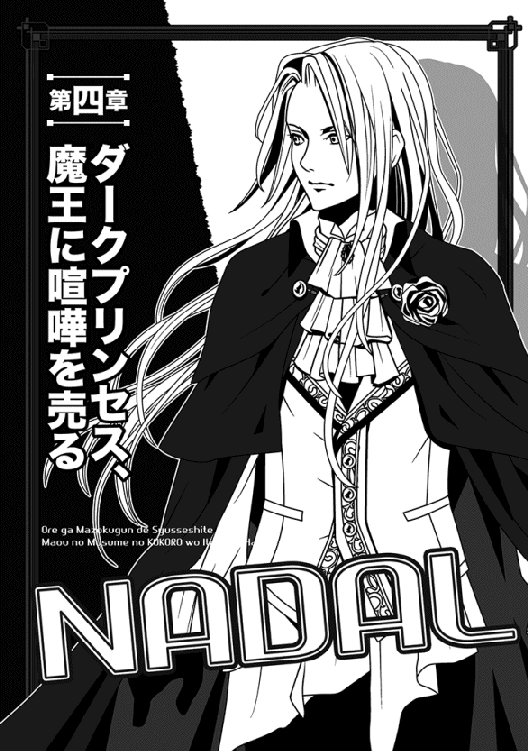
目を覚ました時、俺はいきなり誰かの腕をひっ摑み、自分の方へ引き寄せていた。
いや、まだ戦い継続中のままのテンションだったので、とりあえず眼前に見えた黒い影に斬られる前に、先手必勝しようと思ったのだ。
しかし「あっ」という息が洩れるような声と、胸にぶつかった柔らかい何かのお陰で、やっと最後の場面を思い出した。
そう言えば──斬られて意識を失ったはず。
改めて確認してみれば、今の俺はベッドに横になっていて、しかもミュウの身体を自分の胸にかき抱くという、とんでもない体勢だった。
彼女の胸の柔らかさまで、はっきりと感じ取れたし、実際、ミュウの顔は少し赤くなっていた。
「ご、ごめんっ」
慌てて手を離し、起き上がろうとしたが......自分の体重が急に増加したような感じで、油の切れたロボットみたいにぎこちなくしか動けなかった。いや、この表現はミュウに失礼かもしれないが。
「まだ起きないでください......三十二時間、昏睡状態でした。心拍数、血圧共に、まだ平常値にはほど遠いです。傷口はふさがってますが、無理しない方がいいですわ」
心配そうにそう告げた後、付け加えた。
「ダークプリンセスはご無事ですから、ご安心ください。あのお方は今、ナオヤ様のために王宮で戦ってらっしゃいます。ここにいないのは、そのためですよ」
「えっ？」
俺は思わずミュウを見返す。
いや、無事なのは嬉しいが......俺のために戦ってるとは穏やかじゃないぞ。
気になったが、ミュウは首を振った。
「あのお方自身は何の問題もありませんから。今はとにかく、体力の回復に努めてください」
「そ、そうか」
マヤ様自身がオールオーケーなら、それでいいや。
それに、俺が本調子じゃないのも事実のようだ。少し身体を起こしただけで、もう頭がくらくらしている。
いや、その原因の一つはさっきのミュウの胸の柔らかさを思い出してるせいなんだが。
しかし吐き気までするのは、こりゃ明らかに怪我の後遺症かもな。
気まずい思いで周りを見れば......俺は全然見覚えのない豪華な部屋にいた。
四方の壁までヤケに遠いし、しかもその壁には装飾画まで描いてあるときた。今横になっているベッドだって、天蓋付きのでっかい代物である。天蓋付きベッドなんて、リアルで見たのは初めてかもしれない。
部屋の大きさも、余裕で二十畳くらいの広さがありそうだ。
なのに、室内にいるのは俺を除けば、ベッドの横に座るミュウのみである。
一体どうなっているのか知りたいところだが、まあ浴衣みたいな夜着に包帯塗れの上半身とくれば、そりゃ怪我でダウンしてたのは間違いないんだろうな......くそっ。
当然、他にも訊きたいことは山ほどあるが、質問の優先順位は決まっている。あの後のことを訊かねば......訊くのは怖い気もするが、そうも言ってられない。
「それで──」
俺は大きく深呼吸した後、覚悟を決めて尋ねた。
「あれから、どうなったのかな？」
「ご安心を......策を使う前に、リグルスは絶命しました。ナオヤさんが放った斬撃が、致命傷となったようです」
ミュウは安心させるように微笑んでくれた。
「ナオヤさんが受けた反撃は、文字通りの最後の一撃だったようです。ナオヤさんが倒れた後に、リグルスも倒れ......そのまま亡くなりました」
「そう......か」
ちなみに策というのは、あの後、俺が考えていた「敵を撤退させるための策」のことである。実はミュウは音の再生や複製が可能なので、マヤ様を安全な場所に隠した後は、その特技を活かし、魔族軍の追撃部隊が追いついた振りをしてもらおうかなと──そう考えていたのである。
大量の馬蹄の音が遠くからすれば、それで敵が諦めて退いてくれないかと。
しかし、その策を使うまでもなく、結局俺達は奴らを全滅させちまったようだ......もちろん、リグルスがこっそり殺したと思われる、敵の将軍は別として。
エルザの魔法のお陰で、短い時間でガンガン敵を減らせたのが大きかったな。
「まあ、よい方に考えよう」
俺には似合わないが、今はポジティブに考えることにした。
「とにかくマヤ様は無事だったんだし......もちろん、みんなも無事だよな？」
ミュウの笑顔が凍り付いた。
そのままそっと俯いてしまう。
「ま、まさか......ダヤンが？」
喉を鳴らして訊くと、ミュウはそっと頷いた。
「はい、あの人だけは......私が戻った直後のことでした」
「......亡くなったのか、あのダヤンが」
俺は呆然と呟く。
ミュウの言葉も、今はあんまり耳に入ってなかった。あの歴戦の戦士が死んだ......死んだのか。
「俺が無理な作戦立てなきゃ──」
「彼の遺言があります」
顔を上げ、ミュウが俺をまっすぐに見た。
「私を始め、ギリアムさん達もみんな聞いていますが......代表して私がそのままお伝えしますね」
ミュウは息を吸い込み、ゆっくりと語り始めた。
しかも、彼女の可憐な声音ではなく、亡きダヤンそのままの声で。どうやら、録音してくれていたらしい。
『ナオヤ様に......くれぐれもご自分を責めないようにと、伝えてくれ。後を追ったのは私の勝手で、そのことに後悔などない。そして結果的に......ダークプリンセスの誘拐を阻止できた......誰が何と言おうと、貴方は正しかったと......私がそう言ってたと......ぜひ......伝えてほしい』
苦しい息の下から語ったらしく、切れ切れの声だった。
俺は胸が一杯になり、しばらく言葉にならなかった。
しばらくしてようやく、掠れた声で「他に何か言ってたか？」と訊くと、ミュウはまた頷いた。
「亡くなる間際の......独白のような声ですが」
そう断りを入れ、再生してくれた。
『ナオヤがどこまで上り詰めるか......叶うなら、一緒に見届けたかった』
「──以上です」
ミュウが静かに結んだ時、俺は先程のミュウのように俯き、密かに涙を堪えていた。
身寄りもない異世界人の俺より、ダヤンこそ生き延びるべきだったのに。
行軍中だった俺の部隊は、帝都マヤに引き返しつつある──とミュウから夢現のうちに聞いたが、俺が考えていたのは、亡くなったダヤンのことだけだった。
そして、考えているうちにすっかり眠ってしまったらしい。
次に起きた時には、かなり回復していた......と思う。少なくとも、身体が重い感じは消えていたからな。
......ついでにミュウもいなくなっていて、代わりと言ってはなんだが、横にマヤ様が座っていた。
「わっ」
驚いた俺は慌てて起き上がろうとしたが、マヤ様が手を差し伸べて止めた。
「無理はするな。今は休む時だぞ」
「は、はあ......ですが、自分ではもう回復したような気が」
「派手に斬られて、そんなすぐに回復するわけがなかろう......いいから起き上がらないように」
静かに忠告するマヤ様を、俺はまじまじと眺めた。
今日は、裾のやたら短いチャイナドレスみたいな純白の衣装姿で、ベルトの代用なのか真っ赤なウエストリボンを着けていた。
そんな衣装なのに、短いスカート部分には大胆なスリットまで入ってて、恐ろしいほど上の方まで太ももが見えていたりする。
ダヤンの死を聞いてショックを受けてたのに、それ見て否応なくドキドキするんだから、俺もたいがい現金だな......。
「ナオヤのお陰で、無様に誘拐されずに済んだ」
はっとして見ると、マヤ様が俺を見つめていた。
「命令無視に対する後悔はありませんが、犠牲も大きかったです」
俺が湿った声で返すと、マヤ様も静かに頷いた。
「臣下を失ったことは聞いている。しかしナオヤは、問題はあるとはいえ、結果的には最善の方法を採ったのだ。それは信じてよいぞ。もう少し遅ければあの者達は国境を越えていただろうし、マヤは敵の捕虜としてよい晒し者になったことであろう。帝国は魔族に対して容赦ないからな」
「......晒し者？」
「そうだ......これまで知らなかったのなら、教えてやろう。敵の扱いはひどいぞ。貴賤の区別などしないし、特に女に対してはひどい。裸に剥かれて民衆の目に晒されるのだ。特に見目麗しい女は危ないと聞く。──となれば、言うまでもなくマヤは大いに危ない」
最後の部分はわざと茶目っ気たっぷりにウインクなどして口にしたが......いや、そのさすがの自信は置いて、それが本当なら確かにひどい。
しかし、捕虜となった魔族側の奴隷が切り刻まれた死体とか、俺も何度か見てるしな。男に対してアレなら、女がそんなんでも全然不思議はないのか。
そういや、マヤ様だってプリンセスの身で、狭苦しいトランクみたいな場所に押し込められていたわけで。
あの後、ルクレシオン帝国に送られたこの方が裸で晒し者とかになってたら、ぞっとするな。
多分、俺は激怒して、一人で帝国に特攻しそうだ。
「ナオヤはわかりやすい......何を考えているのか、すぐにわかる」
ふいにマヤ様が手を伸ばして俺の頬を撫で、俺はむちゃくちゃ焦った。
「な、なんです」
「別に......ただ、ナオヤがマヤのことで真剣に怒っているのを見ると、なぜかマヤはひどく気分がよい。不思議なことだ」
ミュウとタメを張るような、彫刻のように美しい切れ長の目を細め、マヤ様が満足した猫（というより獅子か）のごとく微笑する。
顔を寄せてきたので、豪勢な金髪がさらさらと流れ、俺の腕をくすぐった。
あと、この方が近付くといつも得も言われぬすげーいい香りがするのだが......信じ難いことに、どうやらこれは体臭らしい。
こんな香りの香水なんかあると思えないし、そもそもこの方は香水なんかしない気がする。
「一つ尋ねてよいか？」
「ど、どうぞ」
女の子の顔がそばにあることに慣れていない俺は、どぎまぎしてしまう。
おまけに、マヤ様はまだ俺の頬を撫でていたし。
「ナオヤが密かに指揮を放棄し、すぐさま追撃に移った経緯は、他の者から聞いた。我が部隊への襲撃情報を聞いて、慌てたのはわかるが......なぜ最初、一人だけで行こうとした？」
「命令無視に対する厳しい罰則を聞いて、皆をこのことに巻き込むまいと思ったからです」
別に隠すことでもないので、俺は正直に答えた。
「もちろん、援護もナシで一人で行くのは無謀でしょうけど、かといって他の者が俺のために死ぬのはご免ですから」
そこで俺は深々と息を吐く。
「結果的に、ダヤンを失ってしまいましたけど」
「そうか......ナオヤらしいな。叱るべきだろうが、マヤはあまり強く叱る気にはなれない」
「きょ、恐縮」
──ですと言いかけたその時、マヤ様の顔がぐっと真剣になった。薄い赤色をした瞳が、徐々にその色を濃くしていく。
ついでに撫でるのをやめ、指で頬をぐいっと引っ張られた。
「安心するのは早い。強くは叱らないが、叱責しないとは言ってない！」
「いいっ、痛い痛いっ」
肉ごとちぎれるかと思うような怪力で、思わず声が洩れたね。
この人、自分の途方もない怪力を忘れてないか！
「ようやく得た直臣を失うところだった、マヤの身にもなるがよい！ 今後は、将たる身でそのような自儘な真似は許さぬ」
ぎらっと至近から真紅の瞳が睨めつける。
迫力があるどころの騒ぎではなく、リグルスよりよっぽど怖かった。
いきなり態度変わって、大いにびびった。
「もはやおまえは奴隷ではない、このマヤの直臣なのだぞっ。いわば、マヤ個人の臣下であり、マヤと運命を共にする立場なのだ。それを自覚せよっ。よいか、わかったか!?」
「はいはいっ」
一も二もなく、俺はガクガク頷いた。
なんて気分の変わりやすい人だと思ったが、ここで下手なことを言うと、十倍返しが来そうだ。
「こ、今後は自重します！」
「......わかればよろしい」
ようやく落ち着いたのか、マヤ様は鷹揚に頷く。
一転して、元の穏やかな眼差しに変わった......瞳の色に濃淡が出るので、一発でわかる。
「罪は罪だが、功績の巨大さがその罪をあがなうだろう。この後のことはマヤに任せておくといい」
「......はい」
ていうか、俺は少なくとも我が身のことについちゃ、まるで心配してなかったんだが。
ギリアムやダヤンが「命令無視は死罪」と教えてくれた気がするけど、あの時の俺の至上目標はマヤ様の救出だったからな......その目的は遂げたんだし、死罪になるなら仕方ないという覚悟だった。
今、もしも心配ごとがあるとすれば、俺に釣られてついてきた、ギリアム達の処遇くらいだ。
「俺の部下というか、臣下についちゃ、さすがにおとがめなしですよね？ 全て俺の命令ですし」
「こらこら。平然と、さっきの話と矛盾する嘘をつくでない」
マヤ様は苦笑した。
「そもそも彼らは皆、『ナオヤ様に黙って勝手についてきた』と明言しているぞ」
「ええっ!?」
あいつらは〜......この醒めた時代に、そういう熱血展開はやめてくれ。
特に俺の心臓に悪い。
「いやいやっ。奴らは全部俺の命令で」
「いいから、丸ごとマヤに任せておくのだ」
マヤ様は途中で口を挟み、また軽く俺の頬をつねった。
「ててっ」
どうも、俺が痛がる様子が気に入ったらしい。
なんとドＳな。
「査問会は明日だが、それまでは休んでおくがよいぞ」
「は、はあ」
査問会！ そんなのがあるのか。げんなりしたが、まあ何事もなかったように復帰はできないんだろうな。まあいいか......一度は死を覚悟したんだし。
それに過去が過去だけに、俺の叩かれ耐性はちょっとしたもんだ......自慢にもならんが。
「それにしても」
とまたマヤ様が俺をじっと眺めた。
「ナオヤは、あのリグルスを倒したそうだな」
「らしいですね......どうも、相打ちに近いですが」
「それでも大したものだ。相手は名だたる剣士だからな。あのレイバーグの仲間なのだし。できればマヤ自身の手であの男のそっ首を刎ねたかったが、卑怯にも敵は魔法でマヤを眠らせた......まあ、おまえが仇を取ってくれたなら、よしとしよう」
今度はなんだか、俺を見る瞳が妙に輝いていた。
この方は本当に、くるくる表情が変わる。
「おまえには勇者の資質があるかもしれぬ。だとすれば、マヤの予知夢も当然だったな！」
ないない、そんなのないっすよと──そう即答しかけたが、さすがの俺も学習したので、笑顔を見せるに止めた。
ここでそんなこと言うと、この人は絶対「マヤに人を見る目がないと言うのかっ」などと怒り出すに決まっとるのだ。
怒られるくらいなら、機嫌よく笑うマヤ様を眺めて幸せな気分でいる方がずっといいさ。
○────○
翌日になり、俺は上等な仕立てのスーツに、エプロンかけみたいな白い飾り（クラバットというそうな）を胸につけ、見かけだけはパリッとした格好で王宮の奥に出向いた。
そこは、普段は軍議のために使うそうだが、今日だけは、査問のために四名の引退戦士が俺を待ち受けているらしい。
神将とか魔神将とか、元は魔族軍の中で神扱いされてたような、いわゆる「偉いさん」である。ただ、ギリアムが教えてくれたことだが、こういう査問会のために選抜された引退戦士は、魔族の貴族達から選抜された、実は「階級もらっただけ」の人が多いらしい。
本当に幾多の戦場をくぐり抜けた歴戦の将軍クラスは、たいがい引退前に戦死してしまうのだと......特に今の世は。
それ聞いて、ますます俺のテンションは下がったね。
まあ......人の粗探しするような役、誰だって嫌うだろうけどな。
そして軍議の間とやらは、中央の壇上を囲むように、半円形にたくさんの椅子が並んでいる。どれも、飴色をした妙に年季の入った椅子ばかりだった。
今回の関係者人数からして、部屋が巨大過ぎる気もする。
呼ばれたのは俺だけだが、なぜかマヤ様が弁護のためについてきてくれた。なんだか申し訳ない気がしたが、俺が遠慮したところでこの人は来るんだろうな......。
引退戦士四名は壇上に供えた長机の向こうに座していて、俺達二人は半円形に並んだ椅子の方である。もう最初からプレッシャーかかる配置だった。
既にメンツは揃っていたが、不思議なことが一つ──。
少し遅れて、やたらと存在感のある男性がぶらりと入ってきて、軍議の間の隅っこに座ったのである。
これがまた、絵画に描かれた麗人みたいな美青年で、線の細い顔立ちであり、豪勢な長い金髪を背中に伸ばしていた。とてもリアルの人間とは思えん。
れっきとした男なんだが、下手すると女性に見えそうだった......しかも、どっかで見たような。
「あれ、誰です？」
こそっと訊くと、マヤ様は呆れたような目で俺を見た。
「知らぬとはよい度胸だな......誰あろう、マヤの父上だぞ。つまり、この魔界を統べる魔王だ」
な、なんですとぉーーーっ。
俺は口を半開きにして、問題の美青年を見つめちまったね。
どう見たって父親って年齢には見えんのだが......しかし、そういや魔族の純血は歳を取るのが遅いって聞いた記憶があるな。
しかし......へぇえええ......あの方が魔王陛下か。
礼装した今の俺とそう違わない格好なのに、恐ろしいほどの存在感だな......おまけに、マヤ様と顔立ちが似てるし。
と思ったら、その魔王陛下がこちらを見た。何か、妙に熱心に俺を観察し、娘のマヤ様には目もくれない。不思議というか、真剣な薄赤い瞳が怖いくらいだ。
「あの......俺、なんで魔王陛下に注目されてるんでしょうか」
びびって思わずマヤ様に尋ねてしまった。
「注目？ 父上はこっちなど見てないぞ。それより、そろそろ始まる。一応、話を聞いてる振りくらいはするがよい」
「は、はあ」
いや、見てるだろ......と思って俺が目を戻すと、魔王陛下は既に正面を向いていた。
あれ？ いつの間に視線を逸らしたんだろ。
「今日は魔王陛下もご臨席故、早めに開廷する！」
いきなり喚き声がして、俺はやっと正面を見た。
壇上を見れば、四人のうち一番太った樽みたいなおっさんが魔王陛下に低頭し、後の三名もそれに倣っていた。もちろん、俺も慌てて頭を下げたさ。
「予のことは気にせずともよい」
すげー深みある渋い声で、魔王陛下が軽く右手を振った。
「本日の査問会は、いつもと多少事情が異なる。おそらく容易に片付くだろうから、少し見物させてもらおう」
「はっ」
樽おっさん達は再び恭しく低頭した。
どうも、黒いマント姿四名のうち、彼が一番の有力者らしい。
それはいいが、魔王陛下に言われた途端、いきなり俺を睨みやがった。というか、四人全員が俺を睨んでる感じだ。
まあ、魔王陛下と違って、こいつらが睨んでもあまり迫力がないが。
「畏れ多くも陛下が仰った通り、今回の査問会は容易に片付くであろう。......なにしろ、議論する余地もない命令違反だ。ナオヤ・マツウラ、念のために尋ねるが、命令違反に間違いはないか？ 座したままでよい、答えよ」
「間違いありません」
俺は醒めた声であっさりと肯定した。
「ただし、俺の臣下達は全て俺の命令で任務から外れたので、彼らの罪は問わないようにお願いします」
途端に、樽おっさんを含め、四名全員が満足そうに頷いた。
「うむ。おまえの臣下の中には、なぜか名門クライン家の次期当主、ギリアム・クラインも含まれておるからな。犯した罪は罪として、その申し出は殊勝である。確かにおまえの一存だとわかれば、無論、彼らの罪は問わないぞ」
猫なで声が気になったが、俺としては大いにほっとした場面である。
よかったよかった......奴らに累が及ばないなら、文句はないさ。
「というわけで──」
樽おっさんがにこやかに告げた。
「査問会は以上だ。......罪状が明らかな上に、本人も罪を認めた。この上の審議は無用である。刑の執行は十日後とする。以上！」
えっ、もう決まり!?
俺は驚いたが、さらに驚いたのは、いきなり横にいたマヤ様が薄い机をぶっ叩いたことだ。元々が椅子に付属したおまけみたいな奴なので、彼女の剛力のせいであっさりひびが入った。
「待つがよいっ、クロード！」
恐ろしい勢いで立ち上がると、樽おっさんに向かって叫んだ。
凛とした瞳とその叱声に、俺はびびりつつもほれぼれとしてしまった。いやぁ......戦女神みたいな人だな。
「このまま、事情も考慮せずにナオヤを斬首にしようというのかっ」
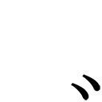え......思わず喉が鳴った。
何も言わなかったけど、今のおっさんの言葉ってそういうことなのか！
「ダークプリンセス......いえ、姫様」
樽おっさんの横にいた、立派な髭をつけたおっさんが恭しく述べた。
「命令無視は死刑......この大原則は姫様もご存じのはず。そこなナオヤが罪を認めた以上、もはや何を議論しましょうや？」
「笑止！」
マヤ様がまた机をぶっ叩き、哀れ、薄い木の板は今度こそ粉々になった。
「お主らは知らぬのか。どのような命令違反であろうと、例外事項はある。『功績が罪をあがなう』というのがそれだ。ナオヤは誰よりも早く現場に駆けつけ、このマヤの誘拐を阻止した。その功績は罪をあがない、なお余りあるものだぞっ」
「恐れながら姫様。......例外事項というのは、あくまでも『そういうこともあり得る』という付随条文に過ぎません。実際、これまでに命令無視をして適用された事例はありませぬ。......まあ、命令無視そのものが、めったにないことですが」
ただし──とクロードとやらは小狡い顔で魔王陛下の方をちらっと見た。
「今この査問会には魔王陛下もご臨席中です。ご意見を賜りましょう」
すると、樽おっさんのクロードを初め、この場にいる全員が魔王陛下に注目した。
......つか、俺はそもそも、まだ魔王陛下のお名前すら知らないのだな、これが。まあ、思いっきり下っ端なので、お顔を拝見したのも今が初めてなんだが。
とにかく──陛下は平然と一同を見返し、ゆっくりと答えた......座ったまま。
「確かに、査問会で例外が認められた例はないな」
「左様、左様！」
得たりとばかりにクロードとやがら頷く。
こいつを初め、四人ともすげー嬉しそうだった。
「そもそも、異世界人の......しかも奴隷上がりの男に、主君の命令無視などが許されようはずがありません。それは引いては、全てを支配する魔王陛下を軽んずることと同義ですからな」
わぁ......こいつは駄目だ、と俺は思ったね。
いや、自分の死刑が確定しそうだからではない。それもないとは言わんが、自慢にもならないけど俺は、向こうでボッチ生活を送ってた時、何度も自殺を考えた元ネガティブ野郎である。
だから、死刑と言われても他の奴よりショックは少ない方だと思う。
俺が真の意味で呆れたのは、クロード他三名の、陛下への醜い笑顔とおもねるような視線だ。
こいつぁ典型的な、下に厳しく上にへつらうタイプの佞臣だな。
顔をしかめた俺に賛同するように、いきなりマヤ様が立ち上がった。
ビシッとクロード達を指差し、ばっさり断言する。
「クロード、貴様達はとんだ食わせ物だ。査問委員は今年に入って全て交代したと聞くが、どうやらゴミに等しい能なしばかりが揃っていたようだな！」
死刑確定の俺ですら青ざめるような激しい発言だった。
じゃなくて、俺は本当に真っ青になった。いや、自分のせいでマヤ様の立場が悪くなったら、目も当てられないじゃないか。
見れば、大馬鹿四人組も、信号機みたいに赤くなったり青くなったりしている。
ヤバい臭いがぷんぷんするっ。
『あの、マヤ様？ 少し加減を──』
と囁き声で制止しかけた俺を、マヤ様はいきなり腕を摑んで立ち上がらせた。
「ちょっ！」
「見るがよいっ」
慌てた俺の抗議を無視し、マヤ様はぐいっと俺の腰を抱いてこっちへ引き寄せる。それは普通、男がやるんじゃないかー。
と思ったが、しなやかな身体に触れた途端、ぼおっとなった俺はそんなことどうでもよくなった。女の子耐性ゼロなんで、こういう時は思考が止まる。
あと、このチャイナ服もどきは素晴らしいな。
なんか素肌に触れてるのかと思うほど、ダイレクトに感触が──て、そんな場合じゃないか。
またマヤ様が大喝した。
「このナオヤが機転を利かせて敵を追撃したお陰で、今マヤはこの場にいられるのだぞ？ マヤの命を救った巨大な功績を、貴様達は無視しようと言うのか！」
憤然と叫んだせいか、四人組はしかめっ面ながら、言い返しはしなかった。というか、微妙に仲間内で視線を交換し、「おまえがナントカ言えっ」とか責任押しつけあってるように見える。
びびってる、びびってるぞ、こいつら......まあ、無理ないけど。
相手が話にならないせいか、マヤ様は鼻息も荒く、今度は魔王陛下の方を見やる。
「父上はいかにお考えかっ。あえて、この大馬鹿共に審判を委ねてしまうおつもりですか！」
魔王陛下相手にも一歩も引かず、ぎらっと睨み据えた。
なんという......男前の姫君。さすがは魔界のプリンセスだ。
自分のことなのに、俺は感心しきって神々しい横顔に見とれていた......が、魔王陛下が初めて席を立ったので、慌てて視線を戻した。
今や、陛下も穏やかな表情を消し、例の静かな迫力を感じさせる視線で娘を睨め付けている。
「では、逆に訊こうではないか......愛する娘よ」
陛下は落ち着き払った声で問うた。
「それでも、予がそのナオヤを斬ると言えば、おまえはなんとする？」
途端に、軍議の間に緊張が走った。
親子を眺めて硬直中のおっさん四名は元より、マヤ様の感触に浸っていた俺も、さすがに我に返った。
ヤバい、この人はシュンとして黙り込む人じゃない。
絶対に言い返す、言い返すって！
そう思ってまた袖を引きかけたのだが、あいにくマヤ様が爆弾を落とす方が早かった。
この方はまた、まっったく躊躇せずに顎を上げ、魔王陛下に向かって言い切ったのだ。
「ならば父上、以後、このマヤは父上の敵となりましょうぞ！」
こ、これは本気だ。
「ちょ、ちょっと待ったあーーーっ」
温厚な俺もさすがに怒鳴った。
俺を無視して、いきなり親子で戦争始めるなって！
でっかい声に驚いたのか、幸い、マヤ様は目を丸くして黙ってくれた。
「親子喧嘩はやめましょうよ。命令無視についちゃひとっつも後悔してない俺ですが、だからといってこれが褒められたことじゃないというのは、わかってますし」
ここは一つ、理性的な意見を出してみた。
「ば、馬鹿者っ」
マヤ様が何か言う前に、震え上がっていた樽おっさんのクロードが口を挟んだ。
「後悔してないとはなんだ、奴隷上がりの分際で。先程の魔王陛下のお言葉を聞いてなかったのか！ 厳罰に決まっておるわっ」
「そうだそうだっ、死刑だ！」
「そもそも、命令無視をするだけあって、貴様は生意気だ」
「この争いも貴様のせいだぞ！」
クロードの怒声に、他の三名も次々と追従する。
おい、なんでんかんでん、俺のせいかい!?
て......あれ......ちょっと待てよ。
俺はむかつくおっさんは無視して、首を傾げた。
そう言えばさっきから魔王陛下は「例外が認められた例はないな」と口にした後、反抗したマヤ様に対して「それでもナオヤを斬ると言えば、なんとする？」とか何とか続けただけだ。
俺も今気付いたが、よくよく振り返れば、魔王陛下はまだ一度もご自分の考えを口にしてはいない。全て相手の問いに答えただけなのだ。
それをこの樽共は、自分の都合のいいように解釈してるんじゃないのかー。
「早く床に額を擦りつけ、お二人に謝罪するのだ。その後で正式に死罪を申し渡して」
「やかましい、黙れえっ」
いきなり俺がどやしつけると、軍議の間の中が一瞬で面白いように静まり返った。
おっさん四名なんか、顎を落として魂飛ばされた顔してやがる。多分、生まれてから一度も怒鳴られたことないんだろうな。けっ。
......逆に、マヤ様はなぜか上機嫌になって、きらきら輝く瞳で俺を眺めていた。抱き寄せる手にも力が入ってるのがわかる。
そのことに力を得て、俺は続けることにした。
つか、どうせ死刑なら、遠慮する意味なんかないしな。死ぬ前くらいは言いたいことを言わせてもらうぞ。
元自殺志願者をナメんなっという気持ちで、魔王の方に向き直る。
「魔王陛下！ 失礼ながらこのナオヤ......まだ魔王陛下の真のお考えを伺っておりません。どうせ死刑なら、せめて魔王陛下の口からそう仰ってください。マヤ様の父君である魔王陛下に死を賜るなら、俺も諦めがつきましょう」
現国２の俺だが、この時ばかりは必死こいてセリフを考えた。
ゆっくりとしゃべったせいか、何とかトチらずに最後まで言えた感じだ。
有り難いことに、マヤ様も俺が話し終えた途端、すかさず口添えしてくれた。
「言われてみれば道理です。父上、とくとお聞かせ頂きたい。この一件、父上はどのようにお考え──」
途中でマヤ様は、やや濃いめの眉をひそめた。
「なにか、おかしなことを申しましたか？」
──えっ。
マヤ様の鼻梁の高い横顔と、真っ白な肌（とドレスの胸）に見とれていた俺は、遅ればせながら陛下に目を戻す。
と......なんと陛下は......魔界の覇王は、静かに微笑していた。
「あの......陛下？」
行きがかり上、俺はおそるおそる尋ねた。
元々、尋ねたのは俺だしな。
すると、なんと陛下は俺に対して輝くばかりの笑顔を見せ、頷いたではないか。
「そう。確かに予は、まだ自分の考えを述べてはいない。もちろん、理由はある。最初に皆に告げたはずだぞ。本日の査問会は、いつもと多少事情が異なる、と。......これは元々、ナオヤを裁くための査問会ではない。逆だ、あの査問委員共を予が裁く場だったのだ」
うえっ？
俺がたまげたのは当然だが、樽おっさん四人組の狼狽たるや、目も当てられないほどだった。こんな短時間にだあっと脂汗をかくのって、漫画くらいでしか見たことない。
「ど、どどど、どういう意味でしょうか、陛下」
クロードおっさんが文字通り、哀訴する
「任命されて間もないとはいえ、臣めらは務めを誠実に果たしてきたつもりですがっ」
「......愚か者め」
長い金髪を舞わせ、陛下が四名を睨む。
「貴様達が査問委員の地位に就いてから、予にその悪辣な行いを報告する者が増えておる。地位の高い者や賄賂を贈る者には裁きに手心を加え、そうではない兵士達には、例外なく過酷な罰を申し渡しているとな」
既に陛下はすっかり笑みが消え、肌が粟立つような冷えた眼差しへと変わっていた。つか、見られてない俺でもパンツを濡らしそうになったぞ......なんだ、この迫力は。
「一族の者から推薦されたとはいえ、貴様達をこの閑職に据えたのは、予の不明であった......遅きに失したが、その方らの罪は予が裁くこととしよう」
「お、お待ちください、陛下っ」
陛下の本気を感じ取り、クロードが慌てて叫ぶ。
「先程の罪状は撤回し、陛下の望み通りの罪状を申し渡しますっ」
他の三人も口々に同じことを喚いていた。
すると──陛下の薄赤い瞳が、マヤ様そっくりに急激に真紅に染まった。
「貴様達は予を本気で怒らせる気らしい......助命する気も失せたぞ、愚か者共っ」
いきなりさっと右手を伸ばした。
「予の眼前より消え失せよ！」
言下に、軍議の間を真昼のように照らし出す閃光が走り、直後に大音響がした。足下が揺れ、俺は思わずよろめきかけたが、マヤ様が支えてくれたお陰でみっともなくコケずに済んだ。
何とか姿勢を保ち、壇上の方を見たが──。
「う、うわぁ」
樽おっさん他四名がいた辺りが、でっかい長机ごと木っ端微塵に破壊され、巨大なクレーターみたいになっていた。ここの床、頑丈そうな石造りなのに！
つか、日本でこんなことすると人命軽視とか言われて、うるさ型の人権団体にボコボコに叩かれそうだが、いいのかこれ......いや、魔界は魔王陛下の独裁だから問題ないのか。
しかしこの親子、たまに魔法の原則を無視してくれるよな。
以前、マヤ様も手を伸ばしただけで鬼みたいなごつい獣人を壁に叩き付けたものだが、父親の方は詠唱もナシにいきなり雷撃かー。スターウォーズの悪の皇帝もびっくりだ。
などと、いきなりの不意打ちにびびっていた俺だが、マヤ様は違った。すっかりさっきまでの険が取れ、俺から離れて笑顔で陛下の元へ駆け寄っていく。
あ......なんか感触が消えると寂しいな。
「お人が悪いですぞ、父上」
外国映画で見る女優みたいに、長身の陛下の胸に抱かれた。
「許せ、マヤ。あの愚か者共はもちろん、おまえとナオヤの反応も見たくてな」
和気藹々のところに、狼狽したような足音が幾つも接近し、ドアを開けて雪崩れ込んできた。もちろん、武装した衛兵達である。
「陛下、何事でしょう！」
「おおっ、こ......これはっ」
「大事ない」
魔界を支配する覇王は、落ち着き払った声で言うと、しれっと告げた。
「予が直々に佞臣共を片付けたのだ......後始末は任せた」
鷹揚に頷く。
基本的に豆腐メンタルの俺は、「そ、そんなんでいいんですかっ。人権団体とかねじ込んで来ませんか!?」と戦慄したのだが、驚いてたのは実に俺だけだったらしい。
衛兵達の方はすぐに仲間を集めて、本当に後始末を始めそうになっていた。
魔王陛下の権力ってすげーな！ この人が全部断罪した方が早いんじゃないのかー。
「ナオヤ」
「うわあっ、すいません！」
声かけがタイミング良すぎて、飛び上がりそうになった。
「......何を謝っているのか？」
不思議そうな陛下に対し、マヤが未だに胸に抱かれたまま、くすっと笑った。
「よくあることです、ナオヤには。あの者は勇敢なのか小心なのか、さっぱりわかりません」
「決断すべき時に、戦士としての決断ができるなら、それでよいさ」
陛下は破顔して述べた。
「少し話そう、ナオヤ......おまえには礼も言わねばならぬ」
○────○
つい十分前まで、死刑判決を受けて世を儚んでいたのに、今や俺は魔王陛下の客人待遇である。
......機械式エレベーターで王宮の最上階まで上がった俺は、豪勢極まりない部屋に案内されていた。
床はくるぶしまで埋まりそうな厚い手縫いの絨毯だわ、天井までは十メートルくらいありそうに見えるわ、執務机は光沢有りまくりの重厚なヤツだわ......おまけに広さなんか部屋というより広間である。
なぜか純白のグランドピアノまであって、びっくりだ。
陛下が弾くのだろうか、これ。
俺は入る前に思わず靴を脱ぎそうになって、マヤ様からまた笑われたほどだ。
特に驚いたのは頭上のシャンデリアで、どう見ても純金にしか見えないのだな、これが。
そして電球や蝋燭の代わりに、それぞれ魔法の明かりが点って部屋を照らしていた。
陛下はマヤ様と俺を同じく純白の円形テーブルに座らせ、手を叩いて人を呼んだ。
「客人をもてなす用意をせよ」
すると......たちまち、どこからともなくメイドさんルックの女の子達が四〜五名もわらわらと集まり、テーブルの上にお茶の用意を調えていく。
......つか、本物のメイドさんは実はスカートが長いと聞いたが、ここのメイドさん、全員フレアミニだな......エプロンがなきゃ、あんまりメイドさんに見えん。
もちろん、何の文句もないが！ むしろ、俺と陛下は意外な部分で気が合いそうだ。
紅茶と、クリームたっぷりのケーキなどがテーブルの上に並び、俺の口の中は涎で溢れてきた。なにせこっち来てから、甘い物ってほとんど食べた記憶がないからなー。
メイドさん達も低頭した後に素早く撤収し、後は食べるだけだと思うが、お二人共なかなか手を出さない。
それでも、誰かが先に食べ始めるまで我慢して待とうと思っていたところ──いきなりマヤ様が話した。
「父上、しかしなぜあのようなもったいをつけたのです？ さっさと四名を片付ければよかったのでは。いえ、放っておいてもどうせマヤがそうしていましたが」
正直過ぎる意見を聞いて、俺と陛下は奇しくも同じタイミングで苦笑した。
慌てて表情を引き締める俺をちらっと見やり、陛下は楽しそうに告げる。
「ナオヤがあの四名の詰問にどう答えるか興味があったし、それに、予が四名に肩入れするような素振りを見せた時、おまえがどう反応するかも知りたかったのだ」
「......ほう？ それで、ご満足頂けましたか？」
マヤ様の問いかけに、陛下は魅力度千パーセントの笑顔で頷いた。
この方、凄みのある顔と笑顔の差が激しいな！
「満足したとも、愛する娘よ。主君のために命を賭け、最後まで後悔の念を見せないナオヤの態度、あっぱれであった。そして、そんなナオヤをあくまでも庇うマヤの態度も大いによし。我慢して芝居を続けた甲斐があったというものだ」
──そうそう、危うく礼を失するところだったぞ。
陛下は最後にそう付け加えると、なんと正面の俺の方を向いて、深々と頭を下げた。
「娘の誘拐を阻止してくれたことに礼を言おう、ナオヤ・マツウラ。予は、おまえに大きな借りができたようだ。万が一、誘拐が成功していれば、娘は拷問の末に殺されていたであろう......重ね重ね礼を言う。此度の働き、余すところなく見事だった！」
いきなりのことに焦った俺は、それはもう馬鹿みたいに両手を振り回した。
脳裏にちらっと疑問の欠片みたいなものも浮かんだのだが、その時は本当に意識すらできなかった。
「いぇええええ、とんでもない。元々、臣下が主君のために命を賭けるのは当たり前のことでありあり......え〜、ありましてその」
最後に舌を噛みそうになり、俺は頬が熱くなってとにかくぺこぺこ頭を下げた。
「と、とにかく過分なことです、はい」
「ナオヤに余り難しい言葉遣いをさせてはいけませんぞ、父上」
横目で俺を見やり、マヤ様が悪戯っぽく笑う。
「長いセリフを言わせると、すぐにトチります故」
「こら......おまえも礼を言うのだ、マヤ」
陛下はわざとらしく難しい表情を見せ、マヤ様を睨んだ。
「おまえのことだ、どうせきちんと礼は言っておらぬであろう。今ここで、ちゃんと礼を言いなさい。相手が臣下であろうと、命を助けてもらった者に対する、それが礼儀というものだ」
ま、魔界を治める魔王陛下が、娘に礼儀を説くかーーーー！
今この瞬間、俺のＲＰＧ的魔王に関する概念が吹っ飛んだねっ。驚きのあまり、遠慮するのも忘れちまった。
そしてさすがのマヤ様も、陛下に対しては素直だった。可愛らしく唇を尖らせながらも、一応、俺の方を向き肩に手を置いた。
......つか、肩に手？
そのまま、そわそわと薄赤い視線がさまよい、何か言いかけて結局また唇を閉ざし──最後にやっと、やや赤い顔で声に出した。
「よ、よくやったぞ、ナオヤ。マヤは今回のおまえの働きに満足している......今後も励むがよい」
「あ、はい。それはもう」
ていうか、なんで俺が頭下げてんだ、おい。
我ながら首を傾げつつ正面に目を戻すと、陛下は端整な顔に何と言えない表情を浮かべていた。叱りたいのだが、どうもタイミングを逸したような、そんな顔つきである。
「すまぬな、ナオヤ。マヤは性根は優しい娘なのだが、昔からどうも素直になれない子でな。大目に見てやってくれ」
「いきなり何を言われます、父上!?」
わ、マヤ様が照れてるよ......すげー。
ていうか、初めてみるな、こんな姿。
「あー、いえ。俺は元々、そう大したことやったつもりもないですし」
ふと疑問が湧いて、俺は勇気を出して陛下に尋ねてみた。
これだけフレンドリーなら、多少の質問はアリだよな、うん。
「あのー、ちなみに俺がもし命令遵守で、あくまで砦の攻略に向かっていた場合、陛下はどうなさいましたでしょう？」
「ふむ、その時は──」
陛下の微笑がぶっつりと消え、ふいに研ぎすまされた刃のような目で俺を見た。
な、なぜか目が真紅に染まってんですが!?
「その時はナオヤ、この王宮に戻った時点で、予が直々におまえの首をもぎ取っていたであろうな」
あ、腕に鳥肌立った。
「娘の命を軽視し、あくまで命令を遵守するような不埒者は、予がただではすまさぬ」
「な、なるほど！」
なるほどじゃないっ、ぶるった、そりゃもう俺は死ぬほどぶるっちまった。
なんか実際に圧力を感じるような目つきで、テーブルの下に隠れたくなったほどだ。やはり、魔王陛下は魔王なのだなぁ......と。
「しかし、こうしておまえの本性を知った今、予はおろか、マヤもおまえに対して大いなる信頼を抱いたことであろう。後で個人的な頼みもあるが......ひとまず、皆で語り合おうではないか」
待望の、ケーキ馬鹿食いの時間がきました！
と思ったが......個人的な頼み？ 魔王陛下が俺みたいな下っ端にぃ？ なんか、すげー嫌な予感がするんだが。
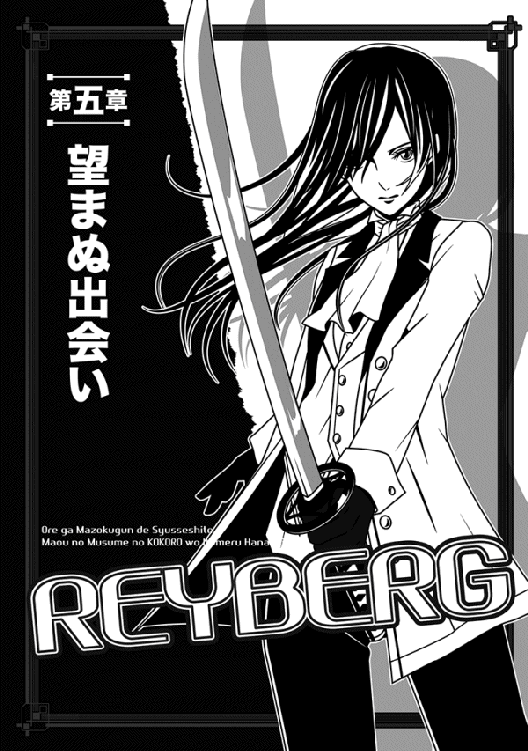
なぜか俺の新しい部屋に集合していたギリアム達は、俺が戻った途端、大喜びで迎えてくれた。
城内の三階に位置する、日本式に言うと３ＬＤＫくらいの住処であり、俺が遠慮するのも構わず、マヤ様が与えてくれたのである。
でもって、ギリアム達は全員、ドアを開けたすぐのホールみたいな場所に集まっていた。
「無事に決着がついたとのこと、祝着にございます！」
いつの間にかこざっぱりとしたスーツに、びしっとオールバックに髪を撫でつけたギリアムは、心の底から喜んでくれているようで、大喜びしていた。
「決着の顛末については、つい先程、家中の者から聞きましたが、なによりの──」
言いかけ、俺の顔を見て眉根を寄せる。
「あの......何か、まずいことでもありましたか？」
「え？ ああ、いや──」
まさか、歓談の後でどえらい話を聞かされたとも言えず、俺は慌ててぎこちない笑みを浮かべた。
「いやいや、まさか。むしろ、また一階級上げてくれた。マヤ様と魔王陛下の推薦で、今日から特等戦士だとよ」
ということは、正規戦士の一つ下だ。
まだまだ下っ端だが、そろそろ下士官くらいの立場......なのか？ よくわからんが。
「おお、それはお早い出世で、おめでとうございますっ」
ギリアムがまた破顔して白い歯を見せた。
つくづく思うが、この人、某魔法学校映画の悪役生徒を大人にしたような顔のくせに、根っこの部分はいい人だよな。
しみじみと和んでいた俺に、いきなり黙って聞いていたエルザが口を挟んだ。
「でもっ。その割にナオヤは、いつも以上に暗い顔してるわ！」
......いつも以上たぁなんだ、と俺がむっとするより先に、ニワトリみたいに黄色い髪を立てたヨルンまで追従した。
「うんうん。絶対、なんか嫌な話を聞かされた顔だよな」
俺に指までさしやがったぞ、こいつ。
......しかし、ここでみっともなく取り乱すとバレバレなので、俺はわざとらしく乾いた笑みを浮かべる。
「ははは......何を言うやら。僕ぁ、ケーキを食べて昇進の話を聞いただけで」
と言いかけたのだが、脇でじっと見つめるミュウの視線とかち合い、うっと詰まった。そういやこの子、嘘は一発で見抜くんだよな。
押し黙ってしまった俺に、ヨルンが駄目押しのごとく指摘する。
「もしかして、親子の信頼を得た結果、グリュンワルド家の秘密でも聞いたか？」
......俺は、だいぶ愚かしい顔でヨルンを見返したかもしれない。俺が沈黙するのを見て、皆が一斉に顔を見合わせていたので、やっちゃった感が凄まじい。
ちなみに、グリュンワルド家とは、魔王陛下の家のことで......今のところ直系は陛下とマヤ様のお二人しかいないが、分家とかも含めるとそれこそ山のようにいるそうな。
でもって、魔王陛下のお名前はナダル・グリュンワルドという。
俺、やっと陛下の名前を覚えた！
......それより、今は皆の視線が無駄に熱心で嫌だ。特に、すかさず「ひょっとして、プリンセスは実は陛下の娘じゃないとか、そんな熱いネタかぁあああ」とか満面の笑みで畳みかけるヨルンが、たまらん。
おまえ......そのうち冗談抜きでマヤ様に殺されるぞ、コラ。
普段から漫画の読み過ぎだろ。
「いやいや、そんな悲劇ネタじゃない。ていうか、もう誤魔化しきれないからあっさりバラすが、確かに陛下からちょっと重大な秘密は聞いた。でも悪いが」
わくわく顔で口を開けたエルザとヨルンに、特に申し渡す。
「誰にも言わないと約束したんだ。だからこれは、内緒だな」
「えぇえええ」
「そりゃねーよなー」
「こらっ、なんという口の利き方だ！」
エルザやヨルン、それにギリアム達が騒ぐ声を聞き流しつつ、俺は（俺にとっての）ケーキ食べ放題会が終わった後の、陛下と二人だけの話を思い出していた。
あのお方は、わざわざマヤ様だけを先に去らせ、俺に直接、こう切り出したのだ。
「おまえの忠誠心は疑うべくもないようだ、ナオヤ。しかも、驚いたことにマヤもおまえが気に入っているらしい。我が娘と上手くやれる者は、ごくごく少ない」
陛下は目を細めてそう言われた。
「マヤに心強い味方ができたというのは、予にとっても嬉しいことだぞ」
「いえいえ、そんな」
とかモゴモゴと照れた俺に、陛下はいきなりずばり告げた。
「そこでナオヤ、予はおまえにだけには話しておこう......なぜ、ルクレシオン帝国の者共が、我が娘を狙ったのかを」
......もちろん、なにげに好奇心の強い俺は、陛下の話を聞いたさ。
ヨルンほどじゃないにせよ、「ここだけの話だが」ってのは、大好きだしな。
けど、聞いた後で思ったね......ああ、これは下っ端の俺が抱え込むには、重すぎる秘密だってさ。世の中、知らない方が幸せなことは確かにあるんだよ。
陛下から聞いたこれよりひどい話となると、後はもう「マヤは実は男の娘である！」とかいうネタくらいしか思いつかんぞ。もちろん、その手の秘密じゃなかったけど。
「あの......ナオヤ様」
ギリアムに話しかけられ、俺は目を瞬いて現実に戻った。
「あ、ごめん。考えごとしてた。どうかした？」
「はっ。申し遅れましたが、実は客人がナオヤ様にお会いしたいと」
「客人？」
俺は首を傾げた。
......異邦人の下っ端に、客人なんか来るのか？
「はい。つい半時間ほど前に来られて、お留守だと知ると、後でまたお邪魔するからと。これが、実に意外な客人なのですが」
とギリアムはなぜかもったいをつける。
「相手は、ネージュ様なのですよ」
「ほう？」
て......悪いけど俺、その名前に聞き覚えがないんだけど。
元々、下っ端の奴隷に魔界の誰かの名前を覚えるチャンスなんて、ほぼ皆無だしな。
正直にそう返すと、ギリアムは罰の悪い表情を見せて低頭した。多分、俺がここ一年、ずっと奴隷だったのを忘れてたんだろうな。
「失礼しました。......ネージュ様とは、戦士長のお一人で、魔法使いとして名前を知られた女性です」
「せ、戦士長ぉ？」
素っ頓狂な声を上げたのには、理由がある。
戦士長というと、魔界の階級制度では、かなーり上なのだな。確か、上から四番目か五番目くらいに位置したような気がする。
実戦ともなると、場合によっては余裕で万を超える戦士を指揮する地位だぞ！
「そ、そんな偉いさんが、俺みたいな一兵士に何の用事だよ」
「それはわかりません......ご本人様は我らに告げる気もないようで」
ギリアムは困ったように言ってくれた。
おいおい......気になるじゃないか。
「とにかく、ナオヤ様の元気なお姿も拝見したことですし、我らはこれで一時引き上げます。後からまたネージュ様が来られるとあれば、お邪魔でしょうし」
ギリアムがきっぱり述べて、一同を追い出しにかかった。
そして、魔界の戦士長が来るという話は、ヨルン達ですら「そりゃ遠慮しないと」と思うのか、特に文句も言わず、皆ぞろぞろと引き上げて行く。
こう言っちゃなんだが、すげー心細い。
ただ幸い、最後にドアを出ようとしたミュウが、振り向いて遠慮がちに申し出てくれた。
「あの......お茶の用意などをするためにも、私は残りましょうか？」
「おお！ 悪いけど頼めるかな？ ていうか、やり方わかる？」
「ギリアムさんに尋ねておきました」
「そうか、そりゃ助かる！」
呆然と立っていた俺は、心底ほっとして何度も頷いた。
調理場には調理用の魔法器具もあるけど、これまでは奴隷の身で、煮炊きは全部自分達で当番制だったしな。
無論、魔法器具で調理とか、そんな甘い話は一切なかった。だから、料理に使うその手のアイテムとか、全然使えない。
まあ、部屋には暖炉とかもあるけど、それじゃ急場をしのげないかもだし。
「では、早速」
ミュウは感じよく微笑み、奥のキッチン──とおぼしき部屋へ向かおうとした。
......しかし俺とすれ違う寸前で足を止め、そっと囁いてくれた。
「ナオヤさんが無事で戻って来られて、嬉しいです」
わ、耳に吐息がかかった。
俺は慌てて振り向いたが、ミュウはもう奥へ消えたところだった。
......しかし、いつ見ても形のいいお尻だな。目を逸らすのに苦労するぞ。
一応、服装を正して応接室で待つこと一時間──。
ひょっとしたらもう来ないかも、という俺の淡い期待を裏切り、そのネージュとかいう人は、ちゃんとやってきた。
ドアをノックする音がして、ミュウが応対に出向き、そこで俺に取り次ぐために戻ってきてずばり告げた。
「ネージュ様がいらっしゃいました」
「そ、そうか。じゃあ、早速出迎えに──て、わっ」
立ち上がったそばから、ミュウの背後より、もうその人が入ってきた。
光沢のある長い真っ白な髪をまとめ、頭の右側に寄せて束ねている。
もう髪型からして、いわゆるサイドテールってヤツで、インパクト絶大である。やたら儚そうな外見で華奢な人に見えるが、瞳は悪戯っぽそうに光っていた。
......しかもだ、服装はレオタードに短いスカートを足したような、「セーラー戦士ですかい」とでも言いたくなる衣装なのだ。
え、この人って、戦士長って話じゃなかったっけ？
そんな扇情的なコスチュームで指揮してんですか!?
「え〜、あの」
「そう、貴方がっ」
そう広いとも言えない部屋の中をざっと見渡していた彼女は、最後に俺を見て、明るい声を上げた。
瞳の色がまた、黄金色だよ......すげーな。
つか、それって確か、この世界のエルフの特徴だったような。
「異例の出世とか、あのリグルスを倒したとか、おまけに命令無視で突っ走ったとか豪快な経歴の割に、すっっごく普通そうに見えるわ」
女子高生が、テレビ見ながらカウチポテトでアニメキャラを評するような言い方に、俺は顎が落ちた。
そもそもこの人、本当に女子高生くらいにしか見えないけど、マジで軍の重鎮なのかぁ。
「座っていいかな、ナオヤ？」
微笑して俺の正面のソファーを指差すネージュに、俺はガクガクと頷いた。
「それはもう......どうぞ。あ、ミュウ。悪いけど」
「──飲み物のご用意ですね。お任せください」
実にできる子のミュウは、すぐに低頭して部屋を出て行った。
「ええと、何か俺にお話があるとか？」
ニコニコと俺の顔を眺めまくるネージュ様に、俺はびびりながら切り出した。
なんか知らんが、無理難題を押しつけられる気がしたからだ。
「ああ、そんなに固くならないで......別に、妙な話を持ってきたわけじゃないから。ただね、よかったらこのあたしも君の臣下の末席に加えてほしいかなーって」
「ああ、なるほど」
と俺は何となく返事をして......しばらく言葉の意味を考えた後、唖然とした。
「は？ ええと、聞き違いじゃなければ、俺の臣下に加えてほしいとか？ もちろん、聞き間違いだと思いますけどっ」
「ううん、間違ってないわ。確かにあたしはそういったもの」
「いやしかし──」
俺は両手をあわあわと動かし、何とか言葉を続ける。
「俺、まだ特等戦士に上がったばかりですよ？」
「わかってますとも」
やたらときらきら光る目を細め、ネージュ様は楽しそうに言う。
「戦士長だった頃のあたしから見たら、ずーーっと下っ端の方になるわね......ふふっ」
「ふふって、わかってるならっ」
俺は途中で気付き、ネージュ様を見返す。
「今、『戦士長だった頃』って言いましたか？」
丁度そこへ、ノックの音と共にミュウがワゴンを押して戻ってきて、手際よく紅茶を並べてくれた。
俺達は自然と押し黙り......ついでに言うと、ネージュ様はやたらと興味ありそうな目つきでミュウを観察していた。
でもって、彼女が一礼して出て行った直後、いきなり身を乗り出す。
「あの子、もの凄い美形ね？ もしかして、ナオヤの新しいメイドさんとか？」
「んな馬鹿な！ そもそも、新しいも古いも、俺にメイドさんなんかいませんよ」
「どうして？ 出世株だし、雇えばいいと思うわよ。君くらいの階級辺りから、みんなそうしてるしね。綺麗どころ集めて、どんちゃん騒ぎとか」
いささか皮肉な声音で言われ、俺は眉根を寄せる。
この人の意図が読めないが、今の話に結構インパクトあったのも事実である。
そうなのか......みんな、メイドさんなんか雇ってんのか。なら俺もミニスカで胸がそこそこ大きい子を──て、違うだろっ。
危うく夢想しそうになり、俺は頭を振る。
「妄想してたわね！」
しかも（もう様付けをやめるが）ネージュが嬉しそうに指摘する始末である。
「か、からかわないで、事情を話してくださいよ。どういうことです？」
「あー、ごめん。あたし暗いの好きじゃないから、ついふざけちゃうけど、悪気はないのよ。ええと、これも別に冗談ごとじゃなくてね、実はあたし、戦士長の身分を返上してきたの」
「そりゃまた......なんで？」
「このままだと、どうせ未来がないから。あと、あたしって戦士将グレイルの臣下だったけど。──彼、このところ機会があればあたしを押し倒そうと狙ってるみたいなの。あの人にぜんっぜんっ気がないあたしとしては、そういうのは困るものね」
一気に言われ、俺はまた顔をしかめた。
またしてもパワハラか！ ミュウの時もそうだったが、このパターン、多いな。
「な、なるほど......しかし、俺はそのグレイルって人は知らないですけど、そんな簡単に臣下から抜けていいんですか？」
「戦士将ほどの相手が主君となると、本当はかなり難しいけど、魔王陛下が許可すれば別。あたしは絶縁状叩き付ける前に、ちゃんと陛下にご相談したの。事情を余さず話したら、陛下はグレイルを見捨てていいって認めてくれたわ」
それで呼び捨てですかい。
いや、そういう話を聞くと、俺もあんまりそいつに敬語使いたくなくなるけど。
「一応、事情はわかりました......しかし、だからって一気に俺のところに来るのは、いくらなんでも身分低くなりすぎではと」
「ナオヤは、魔法使いってどう思う？」
ネージュは突然、まるで関係ないことを聞いた。
彼女が身を乗り出したお陰で、胸元の谷間がくっきり見えたりして、俺は慌てて目を逸らす。
「魔法使える人は尊敬の対象ですよ、使えない俺にとっては。当然じゃないですか」
「ふふ......それが当然じゃないのが、この魔界なのよ」
嬉しそうにネージュが返す。
ひどく機嫌よさそうに、黄金色の瞳を向けた。
「魔界では、魔法を使うのは卑しい女の役目、とかいう常識がまかり通ってるわ。もちろん、少し前まで仕えていたグレイルも、同じ考えだった。性欲まっしぐらプラス、そういう考えの人の下でやっていくのって、どう考えても未来がないと思わない？」
「それはわかりますが、今の俺は特等戦士なんですよ」
「わかってる。だけど、ダークプリンセスの直臣たる貴方には、無限の将来性がある──かもしれない。それに、いつかプリンセスの世が来れば、少なくとも今よりも魔法使いの地位は向上するかもしれないでしょう。もちろん、ナオヤの地位も」
穏やかな顔で、ネージュは言う。
「最大の理由はね、貴方にはどうやら運があるようだわ......あたしはこれまで、能力があるのに運がなかったために非業の死を遂げた人を、何人も見てきた。自分自身が上がる可能性がない以上、せめて将来性があって運の強い人に賭けてみたいと思ったわけ」
「う、運が強い......ですかー」
ボッチだった俺がありえねーと思ったが、口には出さなかった。
ここへ召喚される以前はともかく、今は確かに悪運に恵まれている......こともあったかもしれない。少なくとも、ちょっとした判断を誤れば、もう死んでいたはずなのだから。
「それに」
からかうような瞳でネージュが続ける。
「ナオヤは真面目そうだから、いきなり押し倒したりとかそっちの危険性は少ないみたいだし」
「ええっ」
思わず俺が上げた声をどう勘違いしたのか、ネージュは小首を傾げて囁いた。
「先のことは......お互いにわからないけど。そうでしょう、ナオヤ？」
......その色っぽい目つき、やめてくれ。
○────○
結局、俺はネージュを上等戦士として採用し、臣下の中に加えることにした。
魔法の援護がいかに重要か、それは先の奇襲でもばっちり証明されたしな。他にもギリアムをささっと上等戦士に引き上げたり、エルザとミュウを奴隷の地位から二等戦士に引き上げたりと、できることは全てやった。
残念でならなかったのは、俺の生還を泣いて喜んでくれた獣人のボンゴは、今の俺がどうがんばろうと、奴隷の地位から引き上げられなかったってことだ。
今は、奴隷頭から奴隷の一番上の奴隷長にしてやるくらいがせいぜいだった。それでも随分喜んでくれたが、本当に悔しい。
獣人は奴隷以上の地位にはできないって原則があって、その壁は俺にもどうにもならないのだな。まあ、今後の課題だろう。
そして、俺の臣下用のリングの色を黒に決めたりとかいうどうでもいい用事から、ミュウとエルザ用に王宮の外に部屋を借りてやるなどの私用やら、あとまたぞろ持ち上がった「今度こそ、ちゃんと砦を攻略してくるがよいぞ」というマヤ様の命令にぶったまげて、ギリアムと策を練ったりしてるうちに、瞬く間に一週間が過ぎた。
事件の予兆は、早くもその朝にはあった。
ギリアムが早朝から王宮の俺の部屋に訪ねてきたのだ。
「実は、ルクレシオン帝国の王子と王女が我が軍の捕虜となり、帝都に到着しております」
応接室に案内された彼は、座るなりそう述べた。
それはいいが......またしてもお茶の用意のために部屋を出たミュウの背中を見送り、不審そうに俺に訊いてきた。
「ところで、ミュウと暮らしているのですか」
顔が赤くなったのが実感できたね！ いや、そうまっすぐ訊かれるとは思わなかった。
「いやっ。王宮の外に、ちゃんと部屋を借りてやったさ。でも、本人が一人だと落ち着かないそうなんで、落ち着くまでうちにいるということで今はその」
......つか、よく考えたら、それって一緒に暮らすってことか。
でも俺、ホントに別居してるのと変わらない生活送ってるしな。そもそも、このところは女の子といちゃいちゃしてる暇なんかなかったし。
「そう......ですか」
幸い、ギリアムはそれ以上突っ込まず、遅れてお茶を用意して出て行くミュウをちらっと見た後......用件を続けてくれた。
「話を戻しますが。彼らは奴隷として、今は一応、私が預かっております」
「えっ？」
俺は驚いて、ティーカップ持つ手が止まったね。
だが、ギリアムは驚く意味を取り違えたようで、全然関係ない説明をした。
「あ、お忘れですか？ 私は奴隷の出荷場の総責任者でもあります」
「いやいや、それは覚えているさ！ そうじゃなくて、王女と王子なのに、奴隷担当のギリアムが預かるのか」
「はあ？」
まだギリアムはよくわかってない顔つきだった。
「そもそもの発端は、マヤ様が捕らわれかけたことにご立腹なさった魔王陛下が、帝都から増援を多数送り込み、国境付近を徹底的に警戒させたのです。その警戒の網に、ルクレシオン帝国の王族が引っかかり、まとめて捕らえられたというわけです」
「王族ともあろう者が、国境くんだりで何してたわけ」
「どうやら、前線兵士を激励するために、内密に訪問していたようです」
あー、なるほど。お忍びってヤツね。こっそり来て、兵士に有り難いお話をしたり、もしくは活を入れると。
しかしこの人、まだ俺が本当に訊きたいことがわからないのな。
「そりゃわかったけど。敵とはいえ、王族なら捕虜としても特別待遇になるんじゃ？」
「どうしてでしょう？ 敵は敵であり、王族といえどもそれは変わらないはずですが」
ギリアムはむしろ首を傾げていた。
「捕らえた以上、奴隷として扱うのは適当ではないでしょうか。まあ、魔王陛下からはまだ扱いの指示が来てないのも事実ですが」
駄目だ、この人。
すっかり、魔界の価値観に染まってるな。
とはいえ、この世界じゃ帝国側でも同じようなもんかもしれない。なにせマヤ様だって、リグルス達に、荷物よろしくトランクの中に押し込められていたわけで。
「じゃあ、それは今は置いて。......俺にそんな話を持ってきた理由は？」
「そのことです。私も迂闊でしたが、私は出荷場の責任者とはいえ、今はナオヤ様の臣下であります。そこで、魔王陛下の指示が来る前に、まずナオヤ様の指示を仰ごうかと、かように思いました」
......それを先に言えって。話が回りくどすぎ。
もちろん俺は、すぐに待遇の改善を申し渡そうと思ったが、その前に、問題の王族とやらに会ってみることにした。
もしかして、俺が最初に会った鬼その１とその２みたいな連中だったら、警護兵の多いそういう場所の方が安全かもしれないしな。
というわけで、俺はギリアムに案内を頼んで、早速出荷場に出向いた。
......それが、さらに難儀な奴に遭遇する、第一歩となるとも知らず。
しばらくぶりの出荷場は、相変わらず人いきれで蒸していた。
夏が近いから、というのではない。
場所的に年がら年中、汗の臭いと奴隷の体臭が混じり合ったような臭いに包まれ、汗ばむような湿気のある場所なのだ。
そんな、来た瞬間に帰りたくなるような場所に、問題の二人はいた。
しかも、別に出荷場の中の特別枠というわけでもなく、単に東の壁際に当たる隅っこに、隣同士で繋がれていた。
当然、ちゃんと仕切りもあって、隣同士とはいえ、会話以上のことはできない。
そして、王女がまた、むちゃくちゃ可愛い子だった！
長い銀髪にはシルクみたいな光沢があり、額の真ん中で分けてある。目はぱっちりと大きくて真っ青であり、着ている衣装はフリルやらレースやらの多い、完全なお姫様風の純白ドレスだった。
あまりにも予想通りの王女様ルックなので、むしろ逆に驚いたよ！
こんな凄まじく凡人離れした子、当たり前のように奴隷の仕切りに入れとくってのはどうなんだ。
「......うっ」
なぜか、女の子が怯えたように身を引いた。
既に涙目であり、肩まで震えている。というか、俺が来る前から散々泣いていたらしく、白い頬には涙の跡が幾筋も残っていた。
これは傷つくな......俺、そう凶暴には見えないはずだけど。俺は慌てて、隣のギリアムから先に聞いておいた名前を出す。
「ああ、いやいや。俺、別に怪しい者じゃないですよ。ええと、セシール・ド・ルクレシオン殿下でいらっしゃいますか」
「......はい」
俺の穏やかな声が功を奏したのか、一応、女の子は答えてくれた。
どうでもいいが、首に付けられた鉄鎖の輪っかが痛々しい。ＳＭ系の薄い本じゃないんだから。
「どうも、臣下の者が失礼をしたようで。すぐに、お部屋の方に移って頂きますから」
「な、ナオヤ様!?」
ギリアムが後ろでぎょっとした声を上げたが、俺は無視した。
この子をここに置いとくのは駄目だろっ。
「待て、妹を何処へ連れて行く気かっ」
少年の声がして、俺はやっと思い出した。......そういや、王子もいたんだっけかな。俺、見事に、忘れてたけど。
なぜか一緒についてきてるミュウの微妙な視線にも気付き、俺はゲホゲホと咳払いなどする。知らぬうちに中三になってるとはいえ、俺はあくまでもまだ中坊なんだよ。魔界じゃ、十三歳辺りからもう大人扱いだそうだけど、んな基準は知らん。
ただの中坊に、公平無私とか期待するだけ無駄だ、無駄。俺だって女の子がいいよ！
「あー、そうそう、王子さんね」
それでも一応、わざとらしく明るい声を出し、女の子の隣を覗いた。
......わー、すっげぇ反抗的な目つきの、これまた銀髪の少年がいたぞ。見るからに育ちの良さが窺える美少年で、これもちょっとびっくりした。
銀糸の飾り付きの黒スーツに、クラバット（ネクタイの先祖様らしい）まで胸元にある。それがまた恐ろしく似合っていた。
血筋ってとんでもないな。兄妹で美形かい！
「妹に、セシールに手を出すな。この僕が許さないぞっ」
胸を張って堂々と叱声を叩き付ける。
......奴隷にされてこんな生意気で大丈夫かと思ったが、頬が赤いところを見ると、既に誰かに張り飛ばされたらしい。
それでも強がりは捨てないってのは、なかなか見上げた根性である。
......と思ったけど、よく見たら拳に固めた手が少し震えていた。
俺はなるべく優しそうに見える笑顔を作り話しかけて──みる前にギリアムに訊いた。
「この方、なんて名前だったっけ？」
「先程も言いましたが、ジェイルですよ......十四歳だとか。妹の方は十三歳です」
「あ、王女様のスペックは覚えてる、うん」
「そ、そうですか」
さすがのギリアムが少し呆れたように返す。
「妹の名前と年齢は覚えていて、僕は覚えてないというのは、どういうことだ！」
ぷりぷり怒ったそのジェイルが、的確な突っ込みを入れやがった。
しかもそばにいたミュウまで、タイミングよく頷くわけで。
「深い意味はないですっ。マヤ様と同じ年齢だから、忘れなかっただけっ」
俺はきっぱりと言い切り、話を戻した。
「では、王子様と王女様のお二方共、今少しマシな部屋にお移り頂きましょう」
「騙されない」
ジェイルが今にも殴りかかりそうな目で俺を見た。
「僕は近習から散々聞いてる。魔族は、人間の女の子を手込めにして」
そこで少しどもった。
「に、にくどれいにするそうだな！ おまえ、セシールを狙ってるなっ」
......随分と生々しい単語を口走るなぁ。でも、クソッタレの上官の中には、バレない状況なら、そんなことする奴も確かにいるとは聞いたが。
ただしだ、妹だけが危ないと心配するのは、まだまだ甘いぞ、少年。
外見からして、おまえ自身も十分危ないね。もちろん、俺は興味ないけどな！
それより、にーちゃんがなんか言う度に、そのセシールの方が怯えてしくしく泣いてる感じなのだ。このクソガキは空気読まないにもほどがある。
めんどくさいので、さっさとコトを進めることにした。
「ギリアム、悪いけど、鎖を外してやって」
「わかりました、ナオヤ様」
「ナオヤですって」
「ナオヤだと!?」
なぜか兄妹で声を合わせた。
「そうだけど、それがなにか？」
俺が尋ねると、生意気兄貴の方がしげしげと俺を見て、首を振った。
「多分、おまえ......消されるぞ」
なんだよそれっ。掲示板の書き込みじゃないぞ、おい！
今度は俺がむっとする番だった。
二人を引き取ったものの、特に移動させる場所にアテがあったわけではない。
従って俺は、二人を自分の部屋にご招待することにした。処分がどうなるかはまだわからないが、とにかく魔王陛下の裁定が下るまでは、身近なここで休んでもらおうと、そう思ったわけだ。
幸い、新たに移ったここは部屋数も多く、兄妹一部屋で数えればまだ何とかなる。
ただ、魔王陛下はどうも俺とマヤ様を交えた歓談の後、またこの王宮──皆が魔王城と呼ぶこの城──を、留守にしているのだな。
陛下に関しては、そもそも一年を通じて、城に居る方が少ないらしい。
あちこちの戦線で魔族軍が押され気味のせいか、あのお方が出向かないとどうにもならないことが多いとか。
早い話が、劣勢の魔族軍をあのお方の個人的な力で、何とか支えているようなものだ。
それでも俺は一応、マヤ様に報告すると同時に、陛下にも「捕らえた王子と王女については、ナオヤが預かってます」と使者を出しておいたし、その点が問題になるとは思えない。
それに陛下も、今回はそう長く留守にはしないようだ。
ただ、気になること......というか、嫌な話もちょっと俺の耳に入った。
これは、新参の臣下であるネージュが持ち込んできた噂話で、以下のようなものである。
「かつての上官の戦士将グレイルが、ナオヤのかくまってる王女と王子を狙ってるらしいのよ」
このあっけらかんとした言い方に当初は驚いたが......よくよく話を聞いて得心がいった。
どうも戦士将グレイルは、むかーしから、美人の奴隷が入るとつまみ食い......早い話が押し倒してやっちゃっていたらしいのだな。
しかもこのおっさん、どうやら少女も少年も、両方イケるクチらしい。
最初から最悪を想像していた俺にしてからが「うぇえええ」と思ったくらいで、ちょうどその場にいたジェイルとセシールは、それこそ見る見る青ざめちまったほどだ。
「じょ、冗談じゃないぞ」
美少年王子のジェイルは、吐き捨てるように言ったが、あいにく冗談ごとではあるまい。
ちなみに、セシールの方は既に口を利く余裕すらも失せて、震えている。
「まあ、ナオヤはダークプリンセスの直臣だから、そう簡単にちょっかいはかけて来ないと思うけど、あたしの経験上、油断はできないわ。まだ具体的な行動には出してないけど、近々必ず横槍を入れて来ると思うわよ」
ネージュは大真面目な顔で、実に有り難くない予言をしてくれた。
そのことも多少は関係あるかもしれないが、それから数日も経つと、さすがに警戒心たっぷりだった王族兄妹も、俺に少しずつ心を開いてくれた。
一つには、俺が自由以外の便宜はなるべく図ってやり、風呂にもこっそり入れてやったりしたためかもしれない。
おまけにミュウは礼儀正しいし、これで敵意満載の警戒心が継続するようなら、よほどへそ曲がりと言わざるを得ない。幸い、彼らはそうではなかった。
まず、妹のセシールが俺に懐いてくれるようになり、そのうち、兄のジェイルの方も俺に過剰な警戒心は見せなくなった。
さらに数日を経る頃には、食事を共にした後、皆で談笑するほどになっていた。
しまいには「臣下じゃないんだから、僕らに敬語はいらないよ」とまで言ってくれるほどになったね！
で、そんなある日の夜、頃はよしとばかりに、俺は自ら尋ねてみた。なにせ、それまではそんな突っ込んだ話ができる状態じゃなかったからな。
あと、そろそろ俺もまた戦に出ないといけないから、もうあまり時間もなかったんだ。
「ところでさー、ジェイル」
リビングのテーブルで、ミュウが淹れてくれた食後の紅茶を飲みつつ、俺はさりげなく持ちかけた。
「初対面の頃に君が洩らしてたけど、俺が消されるってのは、どういうこと？」
人がせっかく何気なく尋ねたのに、兄妹は二人揃って綺麗に動きを止めた。
兄はパンをちぎり取る手を止め、妹は優雅にカップを運ぶ手を止め、兄妹でじいっと俺を見ている。特にセシールの視線たるや、まさに「ああっ！ このおにいちゃんって、もうすぐ死んじゃうのね」と言わんばかりの哀れみを込めた目つきで、俺を憮然とさせるのに十分だった。
というか、給仕をしていたミュウまで、わざわざ席に着いて二人に注目したほどだ。
「なんだよー、その死刑囚を見るような目つき。すげー不安になるんだけど！」
「まったくです」
ミュウも賛同してくれた。
「あ、すまなかった......別にそんなつもりはないよ」
ジェイルは慌てて俺を慰めたが、もう遅い。
俺が無言で促すと、やっと詳しく説明してくれた。
「消されるという言い方は正確じゃないかもしれないけど、君が父上と......さらにもっとやっかいな相手から恨まれているのは事実なんだ。だからこそ、思わず口に出たのさ」
俺と年齢も近いジェイルは、実にざっくらばんに教えてくれた。
「父上って、帝国の王様？ なんでまた、俺みたいな下っ端を？」
「ナオヤさまは、ダークプリンセスの誘拐を阻止しましたわ」
今度は妹のセシールが一生懸命に説明してくれた。
「父上にとっては許しがたいことのようで、大変お怒りでした」
「......と言われましても、臣下が主君を助けるのは、当然ですし」
俺は思わず敬語で答えてしまう。
相手が女の子でしかも王族となると、どうもこうなめらかに話せないのだな。所詮は、元ボッチである。せっかく物凄い美人がそばにいても、このていたらくだ。
「父上も問題だけど、さらに大きな問題があるよ」
駄目押しのごとく、ジェイルが不吉なことを言いやがった。
「父上だって、ナオヤが言ったような理屈はわかってるし、元々、倒されたリグルスとも上手くいってたとは言えない。だから、そのうち怒りも収まるかもしれない。......けど、決して忘れそうにない人物がいる。一番の問題は、彼なんだよ」
「というと、誰？」
鈍い俺は、まだそんなこと言って首を傾げていた。
大変、おめでたいと言わざるを得ない。
言いにくそうな兄妹に代わり、ミュウが脇から教えてくれた。
「あの......確かナオヤさんが倒したリグルスという人は、あのレイバーグの元仲間だったはずでは？」
「──う、うわあっ」
全くそのことを忘れていた俺は、思わずその場で頭を抱えた。
まさか......勇者レイバーグが俺を狙ってるってか！
勘弁してくれよ、おい。
「ナオヤ、レイバーグとは何があっても戦わない方がいいよ」
既に散々びびってる俺に、ジェイルが心配そうに言った。
「勇者と呼ばれるのは伊達じゃない......事実、今の彼は龍殺しでもあるんだ」
「邪龍を倒した昨年以来、ドラゴンキラーと呼ぶ方もいます」
兄妹揃って、口々に言いやがった。
「──で、出たよっ」
俺は思わず、口走ったね。
出ました、ファンタジーの定番、龍殺し！
ネタが古いっちゅーか、そんなのは昔の漫画だけにしてくれよ。いや、別にこの世界にいてもいいんだけど、俺を狙う奴がそうだってのは、全く笑えんっ。
お陰で鳥肌立ったぞ、くそっ。
「本当かい!? そんな話、こっちじゃ初めて聞いたけど」
「本当だとも」
ジェイルは嫌すぎるほど自信たっぷりに保証する。
「レイバーグは名声なんかには無欲な人で、あまりそういうことを広めようとしないんだよ。だから、知る人ぞ知る事実だね」
「......龍殺しというと、強い以外に何か特別な力でも備わっているわけですか？」
黙って聞いていたミュウが、興味深そうに尋ねた。
「ええ、ええっ」
お星様みたいな目をしたセシールが、嬉しそうに何度も頷いている。
うお......この子、レイバーグのファンか。
くそー、さらにレイバーグにむかついたぞ！
「ルクレシオン帝国では、龍は神の使いとされています。しかし、人に害をなす邪龍は別です。我らの大神は、公平を期して、よほどでなければ自ら邪龍を罰することはしませんが......その代わり、人が邪龍を倒した時には、ご褒美を下さいます。どんな願いでも、一つだけ叶えてくださるのです」
「で、レイバーグは叶えてもらった？ おそらく、自分の力を強化する方に」
「よくおわかりですわ」
目を丸くしたセシールに、俺はただ苦笑を向けた。
そりゃまあ、勇者なんて呼ばれる奴は、たいがいそういうことに願いを使うだろうなと。
「でも、彼の願いはなんていうか......ストイックだよ」
うん？ なんか今、翻訳が妙なことになったな。
「ストイック？ 控えめな願いなのか」
「う〜ん、どうだろう。おそらく、リングマジックとそう変わらない効果だと思うんだけどね。どうやら、人間の限界を取っ払ってもらったらしい」
「えっ」
不審顔になっていたのか、ジェイルは補足してくれた。
「つまりさ、自分の努力でレベルアップしても、普通、いつかは肉体の限界が来るじゃないか。レイバーグはその拘束を取り除いてもらったんだよ。だから、レベルが上がるにつれて、あり得ないような実力がついてくるわけさ」
「へぇえええ」
ていうか、魔界のリングマジックも、魔王陛下の思し召しでその辺の拘束はかなり緩いとヨルンに聞いたが。
う〜ん、今度、詳しく訊いておくか、リングマジックは帝国にもある（兄妹も白いのをつけてる）けど、こっちとは違うかもしれないしな。
「お話を戻しますが、本当にお気をつけくださいまし」
お姫様そのものの格好をしたセシールが、碧眼をうるうるさせてのたまう。
「もしも帝国に戻れたら、わたくしたち兄妹がレイバーグさまをお止めしようと思いますが、あのお方はどこまでもまっすぐです。おそらく──」
「うん、同感だ。おそらく彼は、仲間を殺したナオヤを許さないだろうね」
最後は、二人して諦めの声だった。
君ら、若いのに諦めるの早いよっ。「人の命は地球より重い」って言葉があるの、知ってっか!?
......などという不満は押し殺し、俺は表面上はあくまで笑って答えた。
俺にも見栄くらいある。
「は......はは......まあ、もし遭遇するとしてもまだ先のことだろうし、その頃には俺ももっと強くなってるるんばっ──ちちっ」
ちくしょう、舌を噛んじまった。
おまけに笑顔も引きつったし、散々だな！
○────○
心底震え上がっているくせに、数日もするとそれも薄れるのが俺の長所である。
まあ、クラスのボッチで自殺志願者だったせいもあるだろう。死ぬ気になりゃ、何ごとも大したこたぁないさ......多分。
気分以前に、そもそも例の砦攻略アゲインの話が進んできて、また部隊の編成やらが忙しくなってきた、というのもある。
マヤ様にも経過を報告しないといけないし、階級が上がった俺は、それなりに忙しかったのだ。
私室がある王宮を一晩空けて、ボンゴ達がいる地下の奴隷街にも顔を出したりしてたほどである。なにせ、戦の中心はまだ奴隷がメインなので、今回は奴隷の監督官も腕の立つ奴をスカウトしたかったし。
ダヤンみたいなのが、そうゴロゴロいるとは思えないけどさ......。
だが──この一晩の留守が、だいぶまずかったのかもしれない。特に、ヨルンとギリアムに後を任せ、ミュウを連れ出したのがすっごいまずかった。
というのも、深夜過ぎにギリアムから使いが来て、こう告げたからだ。
「戦士将グレイルが、あの兄妹を連れて行こうとしてます！」
もちろん、聞いた瞬間に俺は青ざめた。
これはヤバい......兄妹の貞操の危機かもしれん。
「俺達もすぐ戻るけど、ネージュとエルザにも連絡して、騒動の現場に来るように伝えてほしい！」
俺は使いの者にそう頼むと、ミュウが横から口を出した。
「ダークプリンセスには報告しないのですか？」
「いやぁ、これは個人的な問題だし──」
そう言いかけた俺は、ミュウの心配そうな顔を見て、気が差した。この子はもちろん、自分ではなく、俺のことを心配してくれているのだろう。
「あのさ......魔王陛下の親族とマヤ様は、どうやらあまり上手くいってないようなんだよ。だから、ここで臣下の俺の騒動に巻き込まれると、あのお方はますます立場を悪くするおそれがある。こういう時だからこそ、俺の独断で動いてるってことにしとかないと」
一応、ちゃんと説明してあげた。
もっとも、理由はそれだけじゃないけどな。いちいち、マヤ様に泣きつくのはご免だってのも、理由の一つではあるんだ。
......どのみち、ミュウにはちゃんと伝わったと見え、彼女はそっと頷いてくれた。
「わかりました......ナオヤさんは、わたしがお守りします」
「いやいやっ。いざという時は自分優先で。──じゃあ、連絡頼むよ」
そんな場合じゃないのに悪照れした俺は、手を振って使者を追い払った。
多分、顔が真っ赤だっただろうな。
嫌な予感に限って当たるもので、俺達が駆け戻った時には、既に遅かった。
王宮三階の俺の私室前では、黄色い髪のヨルンが石廊下に倒れていて、ギリアムが抱き起こしているところだった。
「ギリアム、ヨルンっ」
「ナオヤ様っ、申し訳ありません」
いつも冷静なギリアムが、今回は随分と悔しそうに述べた。
「グレイル様がご自分の郎党を十数名引き連れ、押しかけてきました。そこで止めようとした私を数名がかりで押さえつけ、ヨルンを殴り飛ばし、王女と王子を連れ去ってしまいました」
「そ、そうか──」
気は急いたが、俺はとにかく、頬を腫らしたヨルンに尋ねた。
「大丈夫か!?」
「だ、大丈夫、大丈夫！ ただ張り倒されただけだ」
面目なさそうな顔で、ヨルンは何度も頷く。
「くっそ、あいつら『殺さないだけ、有り難く思え』とか吐かしやがってえっ」
憤懣やるかたない口調で、ヨルンが声を絞り出す。普段は陽気な奴なのに、今回はよほど腹に据えかねたらしい。
「面目次第もございません」
ギリアムが押し殺した声でまた謝った。
「私がついていながら、この有様で──」
「そんなことより、これからどうするかでしょ」
凛とした声に振り向けば、連絡を受けたのか、ちょうどネージュが駆け寄ってきたところだった。さすがに今日は、初対面の時のように悪戯っぽい笑顔は見せていない。しかも、レオタードプラスミニスカートみたいな格好のくせに、腰にはレイピアみたいな銀色の剣を吊っていた。
「どうするもこうするも......ネージュは、もう準備してるじゃないか」
俺は一瞬だけ廊下の天井を仰ぎ、嘆息した。
こりゃコトによると、悪運強く生き残ってきたのも、これまでか。それでもまあ──短かかったけど、いい夢見られたよなぁ。
俺は内心で覚悟を決め、ギリアムに尋ねた。
「......グレイルはどこにいる？」
「あたしが案内してあげるっ」
ネージュが嬉しそうに口を挟んだ。
つか、なんでこの人、笑ってんだ？
「あいつはね、王宮の別棟に住んでるのよ。今から追いかければ、少なくとも二人の貞操の危機は救えるかもしれない」
ついにあいつ呼ばわりだし！
まあ、俺が文句言う筋合いじゃないけど。
「よしっ。なら、すぐに追いかけようっ」
『はいっ』
俺が立ち上がると、皆、声を揃えて応えてくれた。
今回、エルザは間に合いそうにないが......むしろ、その方がいいかもな。
いつも南門の側しか見てなかった俺は、よく知らなかったが──。
広大な魔王城には、空中歩道と呼ばれる大がかりな橋で結ばれた、小型の別棟があるらしい。ビルで言えばツインタワーみたいなものだが、ただしこの場合、その別棟は魔王城の本体と比べ、二回りほど小さい。
そんな小型の王宮が、城の北側に空中歩道で結ばれ、建っているわけだ。
そこには、魔王陛下の親族や血筋関係でも、特に大物ばかりが揃って入ってるらしい。本来の意図は、外敵が侵攻してきた時に、まずは魔王陛下の身内がこぞってこれに立ち向かう──というものであり、それで王宮のすぐ隣に建設されているそうな。
つまり、籠城時には敵の攻撃を真っ先に引き受ける場所なわけだ。
しかし......グレイルみたいな奴の話を聞くと、陛下は単に、「うざい身内を外に放り出したつもり」じゃないかと邪推したくなる。
自分の刀を腰にぶち込んだ俺は、王宮の階段を駆け上がりながら、そんなことを考えていた。
というのも、その空中歩道とやらが王宮の四階とその別棟の四階を結んでるそうなのだな......そんなこともあって、空中歩道と呼ばれるらしい。
そして、四階に出て軽やかに前を走るネージュの案内で、俺達は空中歩道と呼ばれる場所に着いた。廊下の突き当たりに両開きのドアが開いている場所があり、その向こうにローマの水道橋みたいな石橋が真っ直ぐ延びていた。
もちろん、アレとちがってちゃんと欄干があり、数名くらいは横に並べる広さもある。うへぇ、こりゃ思ったより規模がデカいや。
「いたわっ」
空中歩道に出た途端、ネージュが急停止して、叫ぶ。
彼女が指差す先に、黒い影がいくつも見えた。
「あれ......おかしいわね」
そのまま、集団に追いすがろうとしていたネージュが、いきなり止まった。
お陰で、彼女を案内役にしていた俺達も、その場で急停止してしまう。
「どうかした？」
「いえ、あの集団からごくごく微かな魔力を感じるんだけど......でも見たところ、メンツの中に彼の臣下の魔法使いはいないようなの」
「それはまた」
どういうことだろう──俺達は戸惑って顔を見合わせる。
しかし、幸か不幸か長考してるような余裕はなかった。こっちの追撃に気付いた連中が、一斉に足を止めて振り返ったからだ。
全員、貴族風の装飾過多なスーツ姿だったが、どいつもこいつも、女性と見間違うような線の細い魔王陛下とは似ても似つかない。本当にわずかでもグリュンワルド家の血が混じってるのかと、少し不審に思うほどだった。
「来てくださったんですね！」
「助けてくれると思ったよっ」
引きずられるように引っ立てられていたセシールとジェイルが、喜色満面でこっちへ駆け寄ろうとした。もちろん、連中の誰かによって引き戻されていたが。
「ネージュ、そのグレイルってもしかして......あれか？」
俺は、ひそひそとネージュに尋ねた。
彼女は苦笑して即答した。
「そう、あの一番醜い人がそうよ」
それって誰だよ!? と迷う気遣いはなかった。おそらくこいつだろうと思う、縦も横もデカいおっさんがいたからだ。裾の長い、前を大きく開いた上衣は、恐ろしいことに金色である。目立つという意味では、他の十数名のお供達の追従を許さない。
しかし、サイズが絶望的に合ってないし、そもそも出来損ないのタコ焼きみたいな顔をしているので、激しく似合ってなかった。
「また樽かい！」
悪いと思ったが、思わず呟いたほどである。
「わざわざ追いかけてくるとは、無礼な連中だ......ネージュもいるなら、それも当然か」
魚みたいな表情のない目をぎょろりと動かし、グレイルがやっと口を利いた。
ニヤニヤと嫌な笑みを浮かべており、もう初めから説得の難しさを感じたほどだ。
「責任者は誰だ、うん？ まさか......わしを前にして、この二人を連れて行く気かね。そこのネージュを横取り......したように」
おっさん、しゃべるのも苦労するほど息が切れてるぞ。
俺はそう指摘したくなったが、さすがに今は礼儀正しく出ることにした。まあ、本人が匂わせる通り、直属ではないにせよ、上官である。
「責任者は特等戦士の俺ってことになるんでしょうね。......しかし、人の家から預かった人質を連れて行くのは、そちらこそ非礼では」
「ふん、その程度の身分で......戦士将のわしに口答えとな!?」
戦士将グレイルの機嫌は、たちまち悪化した。
「たかが下っ端の分際で、身の程を知らん奴め。......陛下には、人質管理の変更の使者を出したところだ。問題あるまいて」
「使者を送ったばかりならば、まだ陛下の裁可は下りてないはずですぞ！」
礼儀正しいギリアムが、この時ばかりは口を挟む。
「つまり、管理上はまだこの私の責任であり、結果的には私の上官の受け持ちとなります。命令系統を無視なさるおつもりか!?」
「黙れ、ギリアム！」
グレイルはたちまち真っ赤になった。
「魔王陛下は、もったいなくも......（息切れ）......我が遠い親族のお一人でもおわす。どちらの意見を是となさるかは......この場で争うまでもないっ」
唾を飛ばして怒鳴る。
元々、導火線は極めて短いらしい。まあ、これまでは周囲の人間でこいつに逆らう奴がいなかったのだろう。
実際、今も周囲の取り巻きが、口うるさく「身分を知れ」とか「誰に口を利いてるつもりだっ」などと、すかさず援護していた。
「し、しかしっ」
「もういいよ、ギリアム」
なおも果敢に言い募ろうとする彼を、俺は手で押しとどめた。不安そうにこちらを見つめる王子と王女に笑いかけてから、俺はグレイルの方を見やる。
「俺は言い争うつもりはないんですよ。道理はこちらにあるはずだし、どうあっても返して頂きます」
「ほぉ？ なら......わしが返さぬといったら、どうする......小僧」
グレイルは愉快そうに尋ねた。
「そもそも、この奴隷二人には、今夜の夜伽を命じる予定でな......返すことはできぬなぁ」
途端に、ジェイルとセシールの悲鳴が聞こえた。
古風な言い方でも、内容はちゃんとわかるらしい。
「ああ、しょうがないな」
俺は空中歩道から、満天の星を仰ぐ。
確か......前の査問会の時も、臣下の責任は問われなかったよな？ なら、俺が覚悟すりゃ済むことか。
内心で、今度こそきっぱりと覚悟を決めた。
「ならば、力尽くでも置いていって頂きます！」
ずばっと宣言した途端──。
「な、なんという......」
「よっしゃああ!!」
「こういうチャンスを待ってたわあっ」
ギリアムの呻く声に、ヨルンの威勢のよい返事、トドメにネージュのあからさまな歓声がした。
ギリアムはともかくとして......残り二人、ちっとは自重しろよ、おい。
まあ、俺が言えた義理じゃないけど。
首を振りつつ、悲壮な覚悟で刀を抜きそうになったその時である......一気に流れが変わったのは。予兆は、連中にまぎれて立っていた近侍の者らしき男の姿が、すうっとブレたことに始まる。
その瞬間、破顔していたネージュの表情が見事に強張った。
「ええっ」
「な、なに？」
尋ねた俺を無視して、独白する。
「これは......トランスフォーメーション！ まさか、供の一人に化けて、誰かが潜り込んでた!?」
「え、なに、変身の魔法ってこと？ 誰が紛れ込んだって!?」
続けて訊いた俺に、ネージュはすぐには答えなかった。
ただ、新たに現れた「誰か」を見て、見る見る血の気が失せた顔になった。
「な、ナオヤ君」
誰がナオヤ君だよ!?
憮然とした俺に、ネージュが掠れた声で囁きかけた。
「これは......逃げた方がいいかもしれない」
派手に喉を鳴らした後、続けた。
「こ、この場にいる全員が、今すぐっ」
「そ、そんなわけにもいかないだろ！」
と言いつつ、俺は嫌な予感がしていた......しまくっていた。
なぜなら、あの集団の中に魔法まで使って紛れ込んだ奴がいたとして、その意図は明らかだからだ。つまり、人質の救出以外にあり得ない。で、そんな敵地での超難しい救出が可能な奴となると、そこら辺にゴロゴロしているとは思えない。
何が言いたいかというと──。
ちょっと考えただけでもう全ての答えが、俺の乏しい知識の中にある「ある人物」を示しまくっていたんだが──でも、まさかと思いたいわな。
だいたい、こんな出世街道の序盤で、それはないだろうと。
ゲームで言えば、序盤のマップでいきなりラスボスクラスの敵と遭遇するようなモンだろ。理不尽過ぎるっつーんだ。
うん、やっぱりそれは無いだろ！
最後に楽観論にて結論を出し、俺は思い切ってそちらを見る。
......うわ、今度はちょっと凄いぞ。これまでの樽おっさんとは大違いだ。
男にしては長い前髪が、目の片方を覆うほどあり、その視線はあくまで鋭い。銀糸で飾られた裾の長い上衣姿で、手には青白く光る刀を引っさげていた。
年齢は、多分、俺とそう変わらないはずだ。
黒髪で黒い瞳なんで、そこも俺に似てるが......顔の彫りの深さとか、明らかに洋風である。ああ、もちろん俺は、あんな切れ者風のハンサムじゃないしな！
そしてこいつも、黙って立ってるだけで、鳥肌が立つほどの迫力があった。こりゃ、初対面の時の魔王陛下と同じ威圧感だっ。
ちくしょう、あの方に匹敵する化け物っていえば、益々嫌な予感が──。
「き、貴様は何奴だっ。いつの間に、エドモンドとすり替わっていた!?」
今になってようやく、グレイルがガミガミと尋ねた。
ところが、新手の少年はおっさんを見もしなかった。ただ、ジェイルとセシールに手を伸ばして、こう告げただけである。
「......無事で良かった。さあ、帰ろう」
王族相手に、なんという気安い口調！
そして、俺の嫌な予感が、次の瞬間に現実のものとなった。
惚けたように彼を見ていた二人のうち、セシールが嬉しそうに叫んだのだ。
「レイバーグさまっ」
しかも、まさにその喜びの声が合図だったかのように、兄妹の背後にいたグレイルの手下二人が、ゆっくりと傾いで倒れた。
待ってましたとばかり、兄妹がレイバーグに駆け寄る。
おいおい、手下はいつの間に斬られてたんだ？ まるで気配もなかったのに。
その瞬間、俺の脳内でベートーベンの交響曲第五番......あの有名な「運命」が大音響で響き渡ったね！ もちろん、最初のサビの部分だけだけど。
──よりにもよってここで、この魔王城でレイバーグかっ。
あの、ドラゴンキラーの勇者で......しかも、俺を狙ってるとかいう......冗談キツ過ぎるだろ。
無論、度肝を抜かれていたのは、何も俺ばかりではない。グレイルとその一行も同じである。
「れ、レイバーグだと!?」
「たった一人で戦況を引っ繰り返したこともあるという、あいつかっ」
「音に聞こえた、ルクレシオンの元傭兵！」
生き残りの総勢が──え〜、数えてまだ十五名もいた供の者が、全員びびって腰が引けていた。矜持があるのか、さすがに表立って「勇者」と指摘する奴はいないが、あれだけ怖じ気づいてたら、どう思ってるかはバレバレだ。
まあ、今度ばかりは俺も人に言えんが。
「うろたえるな、愚か者共！」
鈍いのか、全く応えてないグレイルが喚く。
「見よ、あいつは一人だぞ。それに比べて、こちらはまだ十五名もいるのだ。全員で一斉にかかれば、倒せる！」
「そ、そうですな」
「確かに！」
主君に檄を飛ばされ、現金な手下達がたちまち生気を取り戻した。
すぐさま三名ほどが腰の剣を抜き、レイバーグの前を塞ぐように、それぞれ構えた。
「少しだけ離れてて」
レイバーグは兄妹を後ろへ下がらせると、改めて刀を下段に構えた。
「手を出さない方がいい......そう忠告しても、君達には無駄だろうな」
いきなり傲慢なセリフに、三名は一瞬だけ狼狽した表情になった。しかし、自分達の背後で主君がやかましく「どうした!? レイバーグの首を獲れば、恩賞は思いのままだぞっ」などと焚きつけたせいか、互いに目配せして頷き、一斉に斬りかかった。
「ほざく──」
真ん中の男の語尾が、ふっと途切れた。
呆れたことに「ほざくな」と、一言喚くだけの時間もなかったらしい。というか、見ていた俺にしてからが、何が起こったのかは、正確にはわからなかった。
一瞬、レイバーグの姿が元の位置からかき消え、あっと思った時にはもう正面の奴の首筋から血が噴き出していた。
「むおっ」
「くっ」
慌ててレイバーグに向き直ろうとする左右の二人は、直後にきっちり真ん中の奴とほぼ同じ運命を辿った。
豪快に横薙ぎにされた刀で、首筋を襲われて一人が仰け反り、最後の一人は返す刀で胸を袈裟斬りに斬られてその場で頽れていく......まだ、向き直りさえしてなかったのに。
しかもその直後、俺は頬に微かな風を感じた......嘘のような話だが、レイバーグがあの三名に躍り込んだ時の疾走が、ここまで風を運んだらしい。
正直、ネージュの意見に賛成したくなったね......そうもいかないのが辛いところだが。
俺は急いで振り向き、まずはヨルンに頼んだ。
「城内へ戻って、ありったけの援軍を呼んでくれ。この騒ぎならそのうち気付くと思うけど、どうせなら早い方がいい。つか、一刻を争うかも」
「そ、そりゃ構わないけど、その間、大丈夫か？」
なんと、ヨルンは俺の心配をしてくれているらしい。そりゃまあ、今も俺の背中の方で、悲鳴とか怒号がじゃんじゃん湧き起こってるしな......無理もあるまい。
俺は少しでも頼もしそうに見えるように願いつつ笑い、首を振った。
「無茶はしないさ。援軍が来るまで、何とか保たせるつもりだ」
「わかった！」
長話をする愚を悟ったのか、ヨルンは素早く頷いて身を翻した。
「すぐに戻るからなっ。迂闊に飛びかかってくれるなよっ」
「こらっ。だから、主君に何という口の利き方を──」
ギリアムが注意した時には、もうヨルンは猛ダッシュで橋を駆け戻り、城内へ入っていた。あの調子なら、そう待たずに援軍が来るだろう。
なんたって、この城は魔族の本拠なんだからな！ さすがに俺達もここで全滅はないだろうさ。それじゃ、俺が余りに可哀想過ぎる。
いささか元気を取り戻し、俺はまたレイバーグの方へ向き直った。
「よしっ、気は進まないが、ここはあの上官の加勢をして時間稼ぎを──」
言いかけた俺は、そのまま語尾を切って唖然と前方を見た
いや......なんかもう、四人しか残ってないんだけど。
「化け物かよ、おい」
まさに、「三分も経たずにかっ」と喚きたくなる場面である。
「だから、逃げようって言ったの」
ネージュが困ったように返す。
「あたし前に最前線で、彼の獅子奮迅の戦いぶりを見たことがあるのよ。さすがのあたしも、彼を敵に回すのは遠慮したいかも」
「そんなこと言ってる場合じゃないだろっ」
しゃべってる間にまた二人が連続で斬られ、俺は慌てて刀を抜いた。
もはやグレイルと残り一名は、最初の高言も忘れて俺達の方へ遁走しようとしているのだが、レイバーグが追いすがろうとしている。
「貴様だけは、許す気はない！」
きっぱりと宣言して、青白く光る長い刀を振り上げる。薄闇の中に、その魔法付与の光がやけに眩しく見えた。
「おい待てっ。もう勝負は──」
俺が喚いた途端、レイバーグはこちらをちらっと見て、叱声を迸らせた。
「ドラゴンバスターッ」
声と同時に、また奴の姿がその場からふっと消えた。ごおっという風切り音が一瞬して、次の瞬間、グレイルの巨体とその手下が、二人揃ってその場に凝固する。
彼らはびっくりしたような顔で口を半開きにし、虚空を見つめていた。
半秒ほどの間を置き、二人の身体が胸の少し下辺りでゆっくりとズレていき、そのままばらけて倒れた......きっちり四つの肉片に分かれて。
俺の頬を、今度は突風に等しい風が吹き抜けていく。同時に、背後に無数の影を従えたレイバーグの痩身が、彼らを追い越して俺達の前方で足を止めた。
......分身の術かよ、おい。
もちろん違うんだろうが、そう見えちまったぞ。
あまりにも現実離れした技を見せられたせいか、俺はもちろん、ギリアム達も誰一人として物音一つ立てなかった。
俺達が馬鹿みたいに見守る中、レイバーグは前傾姿勢からゆっくりと直立状態に戻り、振り切った刀をすっと戻す。
そのまま、また元の姿勢に戻った。つまり、だらりと刀を下段に構えた姿に。
初めて覗き込むこいつの黒い瞳は、なぜかひどく哀しそうに見える。その瞳が、真っ直ぐに俺を見ていた。
「さっき聞いたばかりだが、君はジェイル達を助けようとしてくれたらしいな」
レイバーグは静かに囁く。
「できれば殺したくないし、傷つけたくもない。まだここから立ち去るわけにはいかないが、放っておいてくれれば、すぐに城から退去するつもりだ。君も、今は僕らを見逃してくれないか？」
そう思うなら、そのまま逃げればいいだろうに、なぜかそんなことを言う。
「あ、それは賛成したいかも......あたしの代わりに、あいつを倒してくれちゃったし」
ネージュが自分勝手なことを言ってくれた。
いや、気持ちはわかるんだけど、俺が見逃していいわけないだろっ。
そう諭しかけた俺は、レイバーグのずっと背後で、ジェイルとセシールがしきりに合図しているのに気付いた。え〜、あれは人差し指を口元に持っていってる？
しばらく首を傾げて考え、俺は気付いた。
そういや、レイバーグはまだ、俺の名前とか知らないんだっけか？ グレイルも俺も、別に名前は出してないしな。仲間内で呼ばれた時は、近くにいなかったし。どこであの集団に紛れ込んでいたのか知らんけど、可能性はある。
──そ、そうか、うんうん。
俺は内心で何度も頷く。まあレイバーグとの戦いは避けられないにせよ、別にわざわざ燃料投下するこたぁないよな。タダでさえ、こいつは俺を恨んでるみたいだし。
そうだよ！ ここは一つ、余計な恨みは抜きにして、神経を高ぶらせず、人を思いやる気持ちも忘れずに、そおっと戦ってもらうということで。
......と、あくまでも匿名戦士で通そうと思ったその時、人の涙ぐましい思いを台無しにする声がした。
「ナオヤああっ、まだ生きてるんでしょうねっ!?」
悲鳴のような声がして、駆け寄る足音......遅れて来たエルザである。
燃料投下、来ました！
俺はマジで脱力して、その場にへたり込みかけた。やっぱり美人は鬼門だったよ。見ろ、レイバーグの顔つきが明らかに変わったぞ、くそっ。
「......そうか、君があの、ナオヤ・マツウラだったか」
レイバーグが駄目押しのように言う。
途端に、ぞくぞくするような殺気が押し寄せてきた。うわ、最悪じゃないかっ。
「えっ、えっ？ なに、どうしたの？」
ついに本当にしゃがみ込んだ俺を見て、駆けつけたエルザがきょとんとした顔で尋ねる。しかしそれも、レイバーグの方を見るまでだった。
「う、うわぁ、すっごい二枚目さん！」
声にとろんとしたものが混じっていて、俺は大いにむっとした。
「アレは敵だよっ。つか、元はルクレシオンの人間だったのに、レイバーグを知らないのか」
「知らないわよぅ、あたしなんか下っ端の間諜だモン......でも、へぇー、あれがレイバーグさんなの？ かっこいいじゃない！」
凄くわくわくした口調だった。
つか、さん付けかよ！ 下手したら、即、向こうにつきそうである。これだから美人は信用ならんっ。
俺はまたしても日頃の持論を確認し、重い腰を上げた。
「ところが俺は、今からあいつと戦うんだよ」
俺のきっぱりした声に、ギリアム達が大きく息を吐く気配がした。みんな、固唾を呑んでことの成り行きを見守っていたらしい。......結論は出ているだろうに。
「そう、僕らは戦う他はない。......いずれにせよ、僕はいつか君を探し出して倒すつもりだった」
「そ、そんな！」
「レイバーグさまっ」
ジェイルとセシールが慌てて駆け寄ったが、レイバーグはそんな二人をきっぱりと押しのけた。
「悪いが、下がっていてくれ。僕は、リグルスの仇を取らねばならない」
長大な刀を正眼に構え、俺をじっと見据える。
「ナオヤ、君は多分、別に好き好んでリグルスを殺したわけじゃないとは思う。だけど、僕にとってはあいつは親しい仲間の一人だったんだ。短い間ではあるけど、文句も言わずに僕についてきてくれた......彼の無念を晴らさせてもらう！」
「せっかく会ったんだし、先に伝えておく」
レイバーグの挑戦を無視して、俺はぼそっと告げた。
「戦いの最中、リグルスと少し話したんだ。奴は言ってたよ......おまえの行く末を見届けたいって」
言いつつ、俺は柄にもなくしんみりとした。
偶然なんだろうけど、これはあのダヤンが最後に残した言葉と共通してる。ああ、俺達は二人共、得難い仲間を失っちまったな。
もちろん、だからと言ってこの戦いを回避する気はなかったけど。どうせ話し合いで片が付くとは思えないんだし、なら、他人に任せずに自分で戦うのみだ。
背後ではそろそろギリアム達が騒ぎ始めていたし、しかも城の方から甲高い笛の音もする。あれは警護兵を呼びつける音だ。
おそらくヨルンが、そこら中に異変を伝えている最中だろう。あと一分も待てばどっさりと援軍が来そうだが、あいにくこいつは、その到着をのんびりと待ってくれそうにない。
「感謝する」
悲壮な決意を固めていると、レイバーグがなぜか低頭した。
「よく、最後の言葉を教えてくれた。......せめて、苦しまないように倒すと約束しよう」
「あ〜、やっぱり俺、おまえが嫌いだな」
俺は苦笑して首を振った。
そういや元の世界のクラスでも、こいつみたいにイケメンかつ、やたらと自信に溢れた奴がいたよな。もちろん僻みなんだが、この際はそれで上等だ。どうせ敵だしな！
「......やはり僕らは、どこまで行っても敵同士のようだな」
「そうさ、言うまでもないだろっ。来いよ、レイバーグ！」
後ろでギリアムが「ここは臣下の私が先にっ」とか、エルザの「ええっ、勝てるわけないし！」とか、ネージュの「あたしが戦うんじゃなくてよかった！（おいっ）」等の声がわんわん聞こえたが、もう俺は相手にもしなかった。
どのみち、レイバーグもジェイルとセシールの半泣きの声を制止して、ぎらっと目を光らせている。
「必ず倒す！」
「こっちのセリフだぁーーーっ」
二人同時に、ぱっと相手に向かって疾走する。
「ナオヤさんっ」
寸前でミュウの叫び声が聞こえたが、無視。
しかし、途中でレイバーグが、かっと黒い瞳を見開いた。
「さらばだ、ナオヤっ。ドラゴンバスター!!」
──おまっ。い、いきなりそれで来るかっ。
走りながら、俺は戦慄した。せめて、何合か斬り合って様子見とかおまえ──。
いろんな思いが去来したその瞬間、レイバーグの長身がぐわっと巨大化した。もちろん本当に巨人化したんじゃなくて、神速のダッシュのお陰でそう見えるのだろう。
こ、これは駄目だ、斬られるっ。速すぎて、腕を上げる暇もないし！
俺の心が死を覚悟したその時──以前にも覚えのある感覚が来た。
これは......そう、あのリグルスと戦った時と同じだ。
目の錯覚は消え、残像を引いて疾走していたはずのレイバーグの身体が、俺の目にはスローモーションのようにゆっくりと映った。
そればかりか、なんと俺を追い越して前に出ようとするミュウの動きまで、きっちり見えた。この子、健気なことに、俺を突き飛ばして自分が盾になるつもりだったようだ。
俺は焦り、まだこのスローモーション化が続いてるうちに、まずはミュウを断固として横へ突き飛ばした。彼女の体勢が崩れるのを確認した後、間近に迫ったレイバーグに刀を振り上げる。
よし、まだ妙なボーナスステージは続行してるらしい。なら、このまま斬ってやる！
......と勝利を確信した時、レイバーグの目がぱっと俺を見た。う、嘘だろっ。
「君も、僕と同じだったのか！」
お、同じって、これって俺の特殊能力かナンカなのか。むしろ、単なる気の迷いでそう見えてるだけだと思ってたのに！
そう思ってびびった瞬間、いきなり世界は正常な流れを回復し、一斉に周囲の喧噪が戻ってきた。
「えっ!? ナオヤさん、いつの間にっ」
ころんと可愛く転んだミュウが、今更のように驚いていた。
「うわっ、ホントだ。こりゃ偶然じゃないやっ──て、うおうっ」
危ないところでレイバーグの剣撃が喉元を掠め、俺は大きく飛び退く。あ、あぶねーっ。喉を掠ったじゃないか！ 滴る血の筋を感じ、俺は青ざめた。
幸い、過剰に俺を警戒してるのか、向こうもすぐには斬りかかってこなかった。
「なるほど、肉の盾に使うためと称し、無駄とも思える召喚を繰り返していた理由は、これか」
「これって......どれだ？」
まだ完全に動揺が抜けてない俺は、ドモりつつ訊く。
レイバーグは哀しい笑みと共に首を振った。
「君と僕は、ある意味では特別なんだと思う。もちろん、人としてではなく、戦士としてだけど。お互い、妙な運命を背負ってこっちへ飛ばされてしまったようだ」
「おい、自慢じゃないけど、俺は鋭い方じゃないんだよ。赤点がデフォだった俺にも、ちゃんとわかるように説明しろ」
「......のんびり説明している時間などない。あいにく、君との勝負も先延ばしにする以外はないようだ。ただ、もし興味があるなら、この大陸の歴史を詳しく調べてみるといいよ」
レイバーグが謎めいたことを言った。
詳しく訊きたかったのは山々だったが──ちょうどその時、俺達が出てきた魔王城の本棟から、やかましい足音と共に、どっと兵士の群れが溢れ出てきた。
先頭にはヨルンがいて、俺を見てせわしく手を振っている。
「おおっ、まだ無事だったか！ 安心してくれっ、援軍のお出ましだぜぇええええ」
「ヨルンっ」
ほっとして叫ぶと、良いことは重なるものである。
城の別棟、つまりこの空中歩道が行き着く先の建物からも、ばらばらと兵士が走り出てきた。あっちはあっちで、誰かが異変を見つけたらしい。こうなると、空中歩道の両側から兵士が迫る形なわけで、形勢は一気に逆転したと言えるだろう。
俺は、未だに橋の真ん中で泰然と立つレイバーグを見て、呆れちまったね。
もっと早くズラかっていれば、ひょっとして逃げ切れたのかもしれないのに。
さらに──奴にとっては駄目押しとも言える援軍まで来た。
俺の頭上に黒い影が差し、押し寄せようとしていた兵士達が、軒並みその場で急停止してしまった。なぜか皆、一斉に夜空を見上げたかと思うと、次々と平伏していく。
例外なく、あのかっこ悪い拝礼のポーズを取って、震えていた。
「......なんだよ？ て、うわあ」
遅れて見上げたところ......なんと魔王陛下が黒い翼を広げて空中に浮かんでいた。
ちょっ──この人、空を飛べたのか！ つか、あの天使みたいな翼（ただし真っ黒）って自前かぁ。魔王ともなると、なんでもアリだなっ。
「グレイルの愚か者めが、捕虜について馬鹿な使者を寄越したのでな」
陛下は未だ宙に浮いたまま、特徴ある深い声音で説明し、俺に小さく頷いた。
「強情なナオヤがさぞかし困っているだろうと思い、帰還を早めたのだ。しかし──」
と既に真紅に染まった瞳が、じろりとレイバーグを見据える。
「予の居城に、招かざる客人が来ているとは......これは予想外であった」
「──！ 魔王ナダルかっ」
あの、全てにおいて余裕ぶっこいていたレイバーグが、さすがに表情を改める。
まあ魔王陛下の登場となれば、当然だろう。これでまだナメた態度取ってたら、こいつは神に等しい全能の戦士か、あるいは本物の馬鹿である。
「お主の名は訊かずともわかるぞ、レイバーグとやら。いずれ、決着を着けるつもりであった」
陛下は悠然と下降して空中歩道に降り立つ。途端に、背中の翼は綺麗に消えてしまった。
いちいち驚くよな、おい。なんと、収納自在かい！
「ふん？ 予の仕事を減らしてくれたようだな」
陛下はグレイルとその一党の死骸をざっと眺め、冷静に呟く。
その後、右手を水平に伸ばした......あのマヤ様と同じく。
たちまちその手に、レイバーグの刀を上回る、長大な剣が握られた。見たこともない漆黒の剣だが、色よりそのデカさにびびるわ。ご自分の身長より遙かにでかいぞ、おい。
マヤ様の剣の趣味は、父親譲りだったらしい。
「皆は下がっているがよい！」
陛下が短く命じた。無論、あえて異議を唱える命知らずは、この城にはいないだろう。
ここまで悪条件が重なると、他人事ながら、俺は絶体絶命のレイバーグを心配しちまったが──。
むしろあいつは、ゆっくりと微笑を広げるところだった。（いろんな意味で）大丈夫なのか、こいつは？
「貴方との勝負も、もちろんいずれはせねばならないだろう、魔王陛下」
レイバーグは慇懃この上ない態度で深々と一礼してみせた。
「しかし、これから忙しくなるのは、むしろ貴方の方でしょうね」
「この期に及んで──むっ」
陛下が遙か西の空を見上げたので、俺達も釣られてそっちを見た。すると......すぐにはわからなかったが、視力に優れたネージュが真っ先に口走った。
「レッドドラゴンの群れよっ」
「な、なんだそれ？」
俺が訊くと、青い顔のネージュの代わりに、ギリアムが教えてくれた。
「ドラゴンの一種です。かなり小型の種ではありますが......しかし、数を頼んで来られると、面倒なことになりましょう」
そう言われ、俺はもう一度遠い空を見た。
ようやく、月明かりの下をぽつぽつと点のような群れを見つけた。ありゃどう見ても十匹以上はいるような。
「......それに、こちらも時間切れを心配していたが、どうやら僕の方も何とかなりそうです」
レイバーグが何かに気付いたように付け加えた。
「笑止！ 貴様は今、予が成敗するっ」
言下に、陛下の長身がその場からかき消えた。
同じく、離れた場所に立っていたレイバーグの身体も霞んで消え、次の瞬間、甲高い金属音が一度だけ響く。
気付いた時には、双方、立ち位置を変えて立っていた。
どうやら今......とんでもないスピードで疾走し、互いに斬り結んでいたらしい。
「くっ」
「小癪なっ」
レイバーグは頬に掠り傷を負い、そして魔王陛下はスーツの上衣をわずかに斬られ、それぞれ声を上げる。なぜか嫌な予感がした俺は、大声で叫んだ。
「陛下っ」
しかし、双方がまたぱっと互いに向かって疾走し、陛下がまず巨大な剣を寒気がするような風切り音と共に横薙ぎに叩き付けた。
しかし、レイバーグは寸前で跳躍し、空中で一回転してこれを避けてしまう。結果的に、二人はまた、元の立ち位置に戻ってしまった。
「貴方を倒し、ナオヤを倒して仇を取ったところで、討ち死にしては意味がない。失礼の段はお詫びするが、当初の目的も果たしたことだし、今日はこれで失礼する──ジェイル、セシールっ」
『はいっ』
最後のレイバーグの呼びかけに、はらはらと見守っていた王女と王子が、ぱっとレイバーグの身体に左右からしがみついた。どうも、どこかの時点で奴に言い含められていたようだ。二人共、そのくらい迷いのない動きだった。
そして俺達は、今度は東の空からの羽ばたき音を聞き、逆方向を見た。
そっちの空からは、レッドドラゴンとやらが一匹だけ飛来しており、しかも、その背中には戦士風の男が一人、乗っていた。
「レイバーグ、すまねぇ！ 遅れちまったっ」
男がセリフの割には陽気な声で叫ぶ。
「気にすることはないよ、ロイド。意義深い夜だったしね」
レイバーグが微笑むと同時に、レッドドラゴンがやや速度を落とし、空中歩道の上空ギリギリを通過しようとする。
......つか、足になんかぶら下がってるぞ？
「なんだ、あの細長いの？」
「あれはロープのようですっ」
見えない俺に、ミュウが教えてくれた。
「ロープって......じゃあ、まさか!?」
その、まさかだった。
レッドドラゴンが彼らの頭上を通過する寸前、レイバーグは垂れ下がったロープを、神がかったタイミングでさっと手に摑む。結果、彼ら三名はあっという間に夜空に舞い上がった──いや、舞い上がりそうになった。
「そうはさせぬぞっ」
おそらく、タイミングを計っていたに違いない陛下が、いきなり手を突き出して雷撃を放った。
「それも計算のうちだっ、魔王陛下！」
完全にレッドドラゴンに命中するコースだったのに、レイバーグが自分も素早く掌を突き出す。
......結果的に雷撃は見えないシールドに阻まれてしまい、空しく四散した。
気付いた時には、レイバーグ達を運んだレッドドラゴンは、見る見る遠ざかってしまう。
「この勝負は預けるぞ、ナオヤ・マツウラ！ 次は必ず君を倒すっ」
「ナオヤさま、またどこかでっ」
「ナオヤ、ありがとう！」
レイバーグにしがみついたセシールとジェイルの方は名残惜しそうに俺に手を振っていたが、応えるどころじゃないよ。
あの野郎、陛下じゃなくて俺に捨てセリフかいっ。
「ならば、予が直々に追うまでっ」
むっとしていた俺は、陛下が再び翼を広げたので、慌てて声を上げた。
「陛下っ、レッドドラゴンの群れが！」
そう、西の空から接近中だったレッドドラゴンの群れが、もうほとんどすぐそこまで飛来していたのだ。放っておくと、帝都マヤを蹂躙しそうだ。
「む......先に、あの獣共を落とす他はないか」
陛下は厳しい顔で頷き、そのまま空に舞い上がった。
もちろん、陛下はお一人であの群れを全滅させるだろう......しかし、片付け終わった頃には、さすがにもう奴は遠い空の下だ。
結局、レイバーグは取り逃がすことになりそうだった。
まあ......今の俺は、命拾いした喜びの方が大きいけどな。
気安くあんな奴が出てくるって、ナイトメアモードのゲームかって！
「......とんでもない戦士でしたな」
近寄ってきたギリアムが、ぽつりと述べる。
それはおそらく、この場の全員の感想だったはずだ。
そして俺は、強く予感していた。
レイバーグと俺は、いつか必ず決着を着けることになりそうだと。
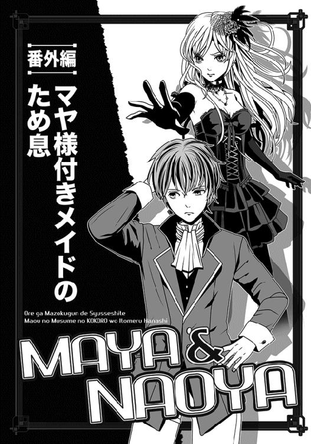
このわたくしことジャスミンが、魔界の覇者たる魔王陛下の一人娘、マヤ様付きのメイドとしてお仕えしてから、もう幾年になりましょうか。
あのお方が生まれた時からですから、当然、マヤ様のご年齢と同じ十三年の歳月に渡ってお仕えしていることになります。
いつの間にか、マヤ様付きのメイドを束ねる、メイド頭となっておりました。
もっとも、まだ赤子であったマヤ様にお目に掛かったのは、わたくしがまだ十歳の頃ですから、わたくし自身もまだ若いのですが（ここ強調）。
それに、わたくしの種族は見た目の年齢経過が魔族の標準から見てもわかりにくく、よく十代と間違われます。
それでも、わたくしはメイド頭として、誇りを持ってあのお方にお仕えして来ましたし、これからもそのつもりでおります。
ただ......最近になって妙にマヤ様からの直々なご相談が増えたのは、よい兆候なのか悪い兆候なのか、まだ判断しかねる次第でございます。
そう、今もわたくしはマヤ様に呼ばれ、あの方の私室の中にいるのですが、マヤ様はいつになく窓の前で行ったり来たりを繰り返し、なかなか用件を仰ろうとはしません。
これも、これまでの果断速攻なマヤ様にしては、珍しいことと言わざるを得ません。
どうも切り出しかねているご様子なので、わたくしは自ら水を向けて差し上げました。
「ナオヤ様のことでしょうか？」
それはもう、ぴたっとマヤ様の足が止まりしたね、ええ。
内心でおかしいやら心配やらでわたくしは複雑な気分でしたけど、もちろん表情には一切出しません。これでも、メイドを束ねる責任者ですから。
「なぜわかった!?」
マヤ様が薄赤い瞳を見開いて仰せです。
「いえ、わたくしのみを呼びつけ、他の者を下がらせるくらいだから、そっち方面のご相談ではと。それに、最近のマヤ様はナオヤ様関連のご相談が多い気がします」
「む......そうか」
レース飾りがついた漆黒のドレスで、マヤ様はお気に入りの一人掛けソファーにお座りになり、立ったままのわたくしを上目遣いに見上げます。
......わたくしが殿方なら、この時点で悩殺されそうですわね。なにしろ、お美しい方ですから、視線の破壊力も抜群です。
「実は......そうなのだ。どうも切り出しにくいが......最近こう......ナオヤのことを考える機会が増えてな。やはり、唯一の直臣でもあるし、いろいろと気に掛かるらしい......ははは」
わたくしから見れば、あまりにもわかり易いのに、こうも遠回りに語ろうとしてらっしゃるのは、やはり気恥ずかしさが先に立つのでしょうか。
魔王陛下をも恐れぬ振る舞いが日常だったマヤ様が、どういうことでしょう。
それでもわたくしが辛抱強くお言葉を待っていますと、マヤ様はようやく切り出されました。
「マヤが思うに......マヤが臣下であるナオヤのことをこれほど気に懸けているのだから、ナオヤもこう......なんだ......もう少しマヤのことを気に懸けるべきではないかと思うのだが。ジャスミンはどう思うか」
目を見張って頷きつつ、わたくしは呆れ果てました。
これはまた、遠回りも遠回り、実に千キロは遠回りした言い方でございます。もっと簡単に、「あの者の気を引きたいのだが？」と仰れば早いと思うのですが、さすがにそうズバリとは言えないようでございます。
「マヤ様、まずここではっきりさせておきますが、あのナオヤ様はかなり鈍い方ではないかと拝察いたします」
わたくしはまず、先にずばっと結論を申し上げます。
さもありなんと言わんばかりに、マヤ様も頷きました。
「うんうん、マヤもそう思うぞ。あれはホントに、度し難い鈍さだな」
「もちろん、相手が鈍かろうと、気を引く方法は幾らでもございます」
わたくしは迷いながら申し上げます。
本当は相手がナオヤ様でいいのかという疑問もあるのですが、少なくともあの方はマヤ様には忠実です。そこは疑うべくもありませんし、他の有象無象よりはマシでございましょう。腕も立つことですし。
......マヤ様のお相手としては、そう悪いとは申せません。
幼少のみぎりからマヤ様のお世話していたわたくしにすれば、少し複雑な気持ちですが。
意を強くして、わたくしは続けました。
「そもそも、殿方は総じて女性の押しに弱いものです。例えば女性が薄着でもして、スキンシップを増やせば、ナオヤ様のように普段は女性とさほど縁のないお方は、それだけでもうフニャフニャになることでしょう。特にそれが、マヤ様のような美貌の方とあれば」
「スキンシップとな？ つまり......触ればいいわけか？」
あらあら、マヤ様がぐっと身を乗り出しましたよ。
「左様でございます......相手によっては逆に危険ですが、ナオヤ様はどうやら奥手かつ純情なお方のご様子......今から申し上げる手はかなり有効でございましょう」
「聞こうではないか！」
いつも以上に勢いのよいマヤ様の返事に、わたくしは躊躇いつつも、お教えして差し上げました。
「とにかく、接触頻度を増やしましょう。もちろん、服装は常に薄着で、スカートも短い方がよろしいでしょうね。マヤ様は以前、ナオヤ様が『まっさーじ』なるもののことを説明していたと仰せでしたが、その内容を聞く限りでは、まさに大きなチャンスです。この際、ナオヤ様にお命じになり、そのまっさーじをして頂けばよろしいかと」
「なるほど、それなら自然に触れあえるな！」
「ただ、あまりべたべた触れるのを許してしまうと、殿方は暴走してしまうおそれもありますが」
「暴走とはどういうことだ」
「されば、少々お耳を拝借致します」
「うむ、苦しゅうないぞ。近う、寄るがいい」
本気でマヤ様がお尋ねになるので、やむなくわたくしは耳元に顔を寄せ、囁きました。
「つまり......脱がして身体中を......揚げ句の果てには......あられもない......」
「な、なにっ。世間の男女は、そんなことをしていたのかっ」
驚き慌てたようなマヤ様が、顔を離したわたくしに問いかけられます。
少し腰が浮き上がってました。
「マヤをネバネバした目つきでいる男はいたが、さすがにそれ以上の行動に出る男はいなかったが」
ほんの少しですが頬が赤くなっていたりして、わたくしは不覚にも「可愛い」と思ってしまいましたわ。
「そこまでしなくても......仮に、甘い笑顔で手を握るような男がいたとして、マヤ様は受け入れますか。あるいはキスは？」
「ふざけるな！ いきなり手を握るような厚かましい男は、マヤが一刀両断にしてくれる。キスなど問題外だ。その場合は、一族ごと滅ぼしてくれるわ」
でしょうね......しかも、ちょくちょく本当にやらかすから、この方は皆に恐れられるのでございます。まぁ、ダークプリンセスと呼ばれるマヤ様に手を出すような命知らずが、この魔界にいるはずもないのもわかっていましたけど。
でもマヤ様の場合、その「ネバネバした目つき」で見る殿方さえも我慢ならないらしく、しばしば「目つきが気に入らぬ！」と理由で、かなり階級が上の戦士でも、平気でぶっ飛ばしたりされます。
お陰で、今やマヤ様に迂闊に話しかける殿方など、皆無となりました。
魔界の殿方は、意外と意気地なしですからね。
「しかしなにか、ジャスミンも男とそのようなことを」
「いぇええ......わたくしのことはまあ、置きまして」
探るような目つきをさらりとかわし、わたくしは話を戻します。
「でも、ナオヤ様が相手の場合、マヤ様はその......スキンシップが嫌というわけではないのでございましょう」
「う、うん......まあ......うん」
「......暴走の危険はないと見られたのでしょう、あの方には？」
「ふん。ナオヤが先程のジャスミンが説明したような行為に及ぶためには、あと百年はかかりそうだ。第一、鈍すぎてマヤの想い──いやっ、マヤの気持ちを酌んで」
わざわざ手遅れな言い直しをするマヤ様でございます。
「......もっとマヤを気に懸けるようになるまでにも、相当な時間がかかるであろう」
ああ、吐息など洩らされて。
ここは、やはりわたくしが一肌脱ぐべきなのでしょうか。
「では、やむを得ません」
意を決してわたくしは申し上げました。
「先程のまっさーじはもちろん、日頃からマヤ様の方から積極的にナオヤ様とのスキンシップを増やすのです。身を寄せた時に、さりげなく胸に腕が当たるようにするなど、いろいろと工夫しましょう。腕に留まらず、背中に胸を押しつけるのもよろしいですね。なにしろ、殿方は女の肌に弱いものですから。それと、これはあまりお勧めしかねますが」
真剣なお顔で聞いていたマヤ様が、焦れたように身を乗り出しました。
「今更、何を言う。何でも申せ。実行の可否を決めるのはマヤだ」
「では申し上げますが......こっそり、一緒にお風呂に入るのも効果的かもしれません。そこまでするのは、女に相当な覚悟がある証拠──と普通の殿方なら、そう考えるはずでございます」
──まあ、あの方はあんまり普通のレベルとは思えませんが。
という結論は申し上げず、わたくしは一気にお話ししました。
さすがに驚いたようなお顔を見せたマヤ様ですが、さすがは魔王のご一子かつ、次期魔王。すぐにきりりと表情を引き締め、大きく頷かれました。
「わかった、ジャスミン。大いに参考になった。幸い、マヤは自分の容姿はそう悪くないと思っている。この際、思い切った行動に出るか」
「そう悪くないどころか、魔界一の美貌でございます」
完全に本気で申し上げ、わたくしは恭しく低頭致しました。
マヤ様はとびきりの微笑で応えてくださいました。
「......だといいな。であるなら、さすがにあの者も無視できまい。ジャスミン、おまえのアドバイスに礼を言う」
大真面目な顔で述べられると、軽く息を吸い込んでからこうお命じになりました。
「ナオヤに、マヤの私室に来るように伝えてくれ。用事があるとな」
「畏まりました」
わたくしは深々と一礼して、そのまま私室を辞しました。
すぐに気の利いた誰かに命じて、ナオヤ様に伝えねばなりません。
（メイド頭は、自ら動くことは少ないのでございます）
ああ、どうかあのお方の想いが届きますように......石廊下を歩きつつ、わたくしはお祈りします。それと──喉を鳴らし、わたくしは振り返ります。
特に人影もなかったので、遠慮なく口にしました。ただし、囁き声で。
「......マヤ様の秘密を知っても、ナオヤ様が以前とお変わりなく、仕えてくださいますように」
早速、ナオヤを呼びつけてまっさーじなるものをしてもらったが、これはどうやら大当たりだったようだ。
いや、スキンシップ作戦の方はともかく、マヤにとっては予想以上に気持ちのよいものだった、という意味だ。
最近のナオヤも魔界へ来たばかりの頃のようにひ弱でもないので、指で全身を揉んでもらうと、なかなか具合がよろしい。
元より、疲れなど最初から微塵も感じてなかったが......しかし、ナオヤが相手だと、くすぐったいような、あるいはほんのりと心が温まるような微妙に優しい気分になれて、新鮮な経験なのだ。
これで、もう少しナオヤにパワーがあれば、もっと効くような気がするのだが......まあ、それはやむを得まい。
そもそも、マヤの筋力に対抗できるのは、魔界では父上くらいしかおらぬ。
それに、目を閉じた状態から、たまに薄目を開けてまっさーじ中のナオヤを見ると、かの者が我が身体に触れる度に顔の赤みが増していて、「くくく......さては、恥ずかしがっているな？」とよくわかる。
そう考えると大変気分がよいので、マヤは今後もバンバンまっさーじしてもらおうと決心したぞ。
「どうした、ナオヤ？ 少し力が弱まっているぞ。もっと気を入れて揉むがよい」
長ソファーに俯せに横たわるマヤは、よい気分に浸ったまま命じてやった。
多少は力が増したが、あんまり変わらない。
また薄目を開けて見ると、どうも最初より......なんというかナオヤの「ドキドキ感」が減じているような気がした。
これは女の身としては捨て置けんな......このマヤに魅力がないというのか。
手を握らせたこともないこのマヤが、ここまでしているというのに。
「これ、サボるでない。だいぶ力が落ちているようだぞ。それと、背中や肩ばかりではなく、足もやるとよい。まっさーじとは、そういうものであろう」
「そ、そらそうですが......い、いいんですか？ いろいろ手が触れてしまいますが」
「散々、触りまくっておいて、今更何を言うか。......よい、苦しうないから、足もやれ。──ただし、お尻は駄目だぞ、お尻は」
慌てて付け加えておいた。
「それはまた、どうして？」
トボけたことを訊きおったので、マヤは俯せたまま右手を振り上げ、手の甲でナオヤの額をぶっ叩いてやった。
「馬鹿っ。マヤとて、触られて嫌なところはあるに決まってるではないか！」
「いってぇーーー。殴らずに説明だけしてくださいよっ。半端なく効くんですよ、マヤ様の殴打はっ」
「ふん、これでも手加減している。そうでなければ、頭蓋が陥没しているはずだ」
経験があるので、その程度の加減はわかっているのだ、マヤも。
叱責のためか、後はナオヤも黙って揉んでくれた。
しかし......これは本当に気持ちいい。足の裏に触れられた時は、くすぐったくて身をよじりかけたが、後のふくらはぎや太股を揉まれた時は、想像以上に気持ちよかった。
ナオヤの息が妙に荒いのが気になるが......まあ、悪い気分ではないので、見逃してやろう。......ふむ、これはいいものだ
そんな風に身を任せているうちに、マヤはどうも眠ってしまっていたらしい。
憤慨したナオヤに起こされた。
無防備なところを見せるというのは、それだけ信頼の証だろうに、この者はその程度のことも理解できんから困る。
万事、鈍い奴なのだ。
それでも気分がよかったので、マヤは褒めてやった。
「よい息抜きになった。心なしか、身体が軽くなった気がする」
ぐるぐる腕を回してナオヤに微笑みかけた。
「これはよいものだな......今後もナオヤにしてもらうとしよう」
「いやいやっ。メイドやら侍女やらが山のようにいらっしゃるでしょう！ 彼女達に頼みましょう。それよりっ」
マヤが睨むと、ナオヤは慌てて居住まいを正しおった。
「砦攻略の件ですけど、以前の人数の倍を許可してくれたのは有り難いことですが、今日はまた、どのようなご用事の呼び出しですか？ 何か打ち合わせするようなことでも？」
「なんだ、その言い方は？ この主君であるマヤが呼び出すのが、不満のような言い方だな」
むっとして言い返すと、ナオヤがさっとソファーから逃げそうな素振りを見せたので、もちろんマヤはすぐに捕まえてやった。
このマヤから逃げられるわけなかろう、甘いぞ！
ただ......後ろからナオヤを抱え込んだ時、どきりと胸が鳴ったのは困ったな。ナオヤに気付かれでもしたら、たまらぬ。
いや......この場合は気付かれた方がいいのかもしれないが。
照れ隠しに、後ろからナオヤの唇をぐいぐい引っ張ってやった。
「ほら、どうしたことだ、ナオヤ？ レイバーグの時に見せたという、超速の動きをこのマヤにも見せてみるがいい。うん？ こんなに簡単に捕まってどうするのだ、ほらほらっ」
「ひたい、ひたいっす！ つか、マジいたひっ」
背後から、身を重ねるようにしてくっつき、マヤはナオヤの歪んだ顔を見て、笑う。
相変わらず胸の鼓動が収まらぬが......今回はまあ、これでよしとするか。
なにより、こうして意外な展開の結果、ナオヤと抱き合うことができた。
そう考えると嬉しくなり、マヤはわざとナオヤの背中に胸を押しつけてやった。そう言えば、ジャスミンがこういうのも効果あると申していた気がするしな。
本当に......これでもう少し、ナオヤがマヤを気に懸けるようになるといいな。
──はじめまして。
「小説家になろう」で長さだけは人並み以上に連載していて、この度、本として出せる機会を頂きました。
コツコツやってると、忘れた頃にいいことありますねぇ（じーん）。
......あ、内容ですね、内容。
この小説は、私が考える「強いヒロイン」を具現化したもの、に近いかもしれません。
強く凛々しく、なのに時にはモロいところも見せるという、私個人にとっての美味しいヒロインとなっている......はずです。
とはいえ、一応の主人公はナオヤなので、戦うのは彼の方がメインですが──。
かの有名なホームズ物が、ワトソンから見たホームズを書いているように、実際にはマヤ様にも頻繁にスポットが当たっています。
むしろ、マヤ様が全ての中心、みたいな。
事実、主人公のナオヤは自分も魔界でガンガン強くなってのし上がるくせに、あくまでマヤ様を立てることを目的としています。
いわば、唯一にして無二のナンバーツーが、彼の目指すところかもしれません。
そのようなお話がお好きな人なら、多分......楽しんで頂けるかなぁと。
ちなみに、やたら長いタイトルの本作ですが、これは「小説家になろう」という無数の小説が集まる巨大サイトにおいて、なんとか「ぱっと見て、すぐにどんな話かわかるように」と思って付けたものです。
慣れて口にするのがめんどくさくなれば、「俺魔」とでも略して頂ければ。
......読んで少しでも楽しんで頂ければ、作者としては一番嬉しいですね。
最後になりましたが、遠野空という無名の書き手に対し、目力のある素晴らしいイラストを描いて下さった上条衿様と──それから出版の機会を下さったＴＯブックス様に、心よりお礼を申し上げます。
著者プロフィール
遠野 空
Tohno Sora
小説投稿サイト、「小説家になろう」で本作を執筆し、好評を得て本作の書籍化が決定。 典型的ｗｅｂ小説からのデビュー組。
本作のお陰で上条様の美麗なイラストに恵まれ、さらに電動アシスト自転車が買えました！なろうでは新作も連載していますので、ぜひぜひお越しください。
俺が魔族軍で出世して、魔王の娘の心を射止める話
2015年１月１日発行 ver.1.0
著 者 遠野 空
発行所 TOブックス
〒150-0011 東京都渋谷区東1-32-12
渋谷プロパティータワー13階
03-6427-9625（編集）
0120-933-772（営業フリーダイヤル）
Ⓒ2015 Sora Tohno
※無断で複製・複写・データ配信などをすることは、かたくお断りいたします。
本電子書籍は下記にもとづいて制作しました
俺が魔族軍で出世して、魔王の娘の心を射止める話
発行日 2014年８月25日 発行
本作品の全部または一部を無断で複製、転載、配信、送信したり、ホームぺージ上に転載することを禁止します。また、本作品の内容を無断で改変、改ざん等を行うことも禁止します。
本作品購入時にご承諾いただいた規約により、有償・無償にかかわらず本作品を第三者に譲渡することはできません。
本作品を示すサムネイルなどのイメージ画像は、再ダウンロード時に予告なく変更される場合があります。
本作品は縦書きでレイアウトされています。
また、ご覧になるリーディングシステムにより、表示の差が認められることがあります。